Le retable d'Issenheim et sa signifiance hermétique
Le retable d'Issenheim vu en perspective hermétique revu le 23 mars 2003 Plan : I. Introduction : retables - Primitifs allemands - II. Les Grünewald d'Unterlinden : Trois Eglises et trois Primitifs - le retable d'Issenheim - l'Annonciation - la Résurrection - l' Incarnation du Fils de Dieu -
La visite de saint Antoine à saint Paul l'ermite - la Tentation de saint Antoine - la mise au tombeau - saint Sébastien et saint Antoine - crucifixion de Carlsruhe - verrière de la Passion (Bourges, extrait) - Jésus-Christ est-il ressuscité ? (extrait) - vie de saint Antoine (intégrale) -
Examen critique de la vie et des ouvrages de saint Paul (extrait) et dissertation sur saint Pierre (extrait) - III. Notes - notes complémentaires . Remerciements
à Alain Mauranne pour ses conseils, ses encouragements et son aide (texte et iconographie). I. Introduction En ouverture au Psautier d'Hermophile
, par lequel s'achève notre étude du symbolisme général de l'alchimie, il nous a paru utile de donner une tentative d'interprétation hermétique - sinon alchimique - à l'un des chef d'oeuvres artistiques de la chrétienté : le retable baroque d'Issenheim. Nous emprunterons quelques notes à Joris-Karl Huysmans, qui n'est pas un inconnu pour l'étudiant en alchimie [ cf. l'histoire d' Alexandre Sethon
]. A ce texte, et comme lui faisant écho, nous avons ajouté, formant notes, un autre texte intitulé Jésus-Christ est-il ressuscité ? de l'abbé Constantin Chauvé [ Bloud, Paris, 1901 ]. Puis une Vie de Saint Antoine, de saint Athanase , rapportée par Charles de Rémondange. Trois Eglises - Trois Primitifs Nous empruntons d'abord sur les retables ces lignes à un site consacré à l' architecture religieuse
, site auquel nous devons déjà les superbes reproductions des médaillons des Vices et des Vertus
du portail central de Notre-Dame de Paris. Les retables apparaissent au XI e
siècle suite à la modification de la place du prêtre lors de l'office. Celui-ci avait coutume de se placer derrière la table d'autel, face aux fidèles. A partir du XI e
, le prêtre se place entre l'autel et les fidèles, tournant le dos à ces derniers. Le regard du prêtre et de ses ouailles se porte donc derrière la table (retro tabula). C'est pourquoi on estime alors utile de faire apparaître des décorations derrière l'autel. Lorsque la consécration des églises commence à être étroitement liée à la présence de reliques, des retables reliquaires apparaissent. A la fin du XIVe siècle, les caisses deviennent plus profondes pour recevoir des sculptures et construire un espace en trois dimensions. L'axe du retable (partie centrale) est surélevé. La réalisation d'un retable met en jeu la collaboration de nombreux artisans (peintres, ébénistes, sculpteurs, menuisiers...) pour créer les trois parties qui le composent : la caisse, la prédelle et les volets. Les volets ont une signification religieuse. Lorsqu'il sont fermés, on ne voit que leur revers, peint en grisaille : c'est la face quotidienne, mais aussi celle du deuil et du carême. Lorsque les volets sont ouverts, ils laissent voir des scènes richement colorées, qui ont un caractère plus festif. La prédelle à une fonction pratique : elle permet de fermer des volets sans avoir à ôter les objets qui reposent sur l'autel. La caisse, aussi appelée huche, est la pièce la plus importante. Elle se compose de trois compartiments, dans lesquels reposent des sculptures produites par groupes qu'il est ensuite possible d'étager pour donner de la profondeur à l'ensemble. La structure des retables anversois est constante. Verticalement, on trouve trois travées, avec une partie centrale surélevée. Horizontalement, l'espace est composé de deux registres. Dans le registre supérieur se déroule la scène principale. Le registre inférieur est généralement découpé en 3 ou 6 petites scènes (1 ou 2 par travée).
Tout d'abord, une brève présentation des éléments du retable :
Les éléments du Retable d'Issenheim exposés au Musée d'Unterlinden ne représentent qu'une partie de l'œuvre qui devait être monumentale. Placé dans le chœur de l'église, le retable restait en partie caché à la vue des fidèles par la présence d'un jubé (tribune transversale élevée entre le chœur et la nef). Seuls les chanoines pouvaient apprécier l'ensemble du retable. Le simple fidèle ne l'apercevait que par la porte ouverte du jubé. Jusqu'à la Révolution, le retable reste la propriété de la commanderie d'issenheim. Pourtant, en 1597, l' empereur Rodolphe II , avant appris «
qu'il y avait à Issenheim, dans une église de l'ordre des Antonites, un beau tableau peint avec un art remarquable par un excellent maître
» entre en pourparlers avec le supérieur du couvent pour
l'obtenir. II propose même de le remplacer par une copie. De même, au début du XVIIe siècle, l'Electeur Maximilien de Bavière propose de l'acquérir contre une importante somme d'argent. Pendant la période troublée qui suit la guerre de Trente Ans, le retable est mis à l'abri à Thann, de 1651 à 1654. En 1792 le retable est transporté dans la Bibliothèque Nationale du District, ancien Collège des Jésuites, aujourd'hui Lycée Bartholdi, à l'initiative des commissaires Marquaire et Karpff. Dépassant leurs fonctions, ils entreprennent le regroupement des œuvres haut-rhinoises qu'ils étaient chargés d'inventorier par le Directoire du District de Colmar. C'est ainsi que se forme
la collection du Musée national de Colmar dont Karpff assure lui-même la conservation. Le retable est transféré en 1852 dans l'église de l'ancien couvent des Dominicaines d'Unterlinden. Il constitue le joyau du musée qui s' organise alors. Les panneaux peints et les sculptures sont disséminés dans la salle Saint-Antoine qui occupe la nef de l'église. Le 13 février 1917, le retable est transféré à la Pinacothèque de Munich sous le prétexte de sa restauration. A la suite de longues négociations entre le gouvernement allemand et la Société Schongauer, gestionnaire du Musée d'Unterlinden, le retable retrouve sa place à Colmar le 38 septembre 1919. Dès lors, les projets de reconstitution du retable se succèdent. Dans les années trente, les sculptures sont rassemblées dans une caisse reconstruite et les panneaux regroupés dans leur disposition actuelle (jusqu'en 1965, saint Antoine était placé à gauche de la Crucifixion). Devant l'imminence du deuxième conflit mondial, le préfet du Haut-Rhin ordonne le 3 août 1939 le départ des chefs-d'œuvre du musée pour le château de Lafarge puis celui de Hautefort en Périgord. Après l'armistice de juin 1940, une commission engagée par le gouvernement allemand fait rapporter à Colmar les caisses contenant les œuvres. En 1942, devant la menace des bombardements alliés, le retable est protégé dans les caves du
Haut - Kœnigshourg. Depuis le 8 juillet 1945, il n'a plus quitté la chapelle du Musée d'Unterlinden.
Le retable originel : une œuvre monumentale
Il n'existe pas de descriptif du retable, avant sa dislocation en 1794. Sa disposition originelle nous est partiellement transmise par deux textes de la fin du XVIIIe siècle : la description par Lerse, érudit alsacien, des tableaux et statues de l'église des Antonites d'Issenheim et l'inventaire dressé par les commissaires de la Révolution en 1793. Ces témoignages, un examen pratique et une étude de la composition d'ensemble permettent d'imaginer la disposition primitive du retable dans l'église du couvent d'Issenheim, avant l'abandon de la structure, des décors, du couronnement lors du transport des statues et des peintures à Colmar, Comme l'écrit Louis Hugot dans son catalogue de 1860 : «
les débris que possède le musée de Colmar ne forment qu'une bien faible partie de toutes ces richesses (...) deux chariots de sculptures peintes et dorées furent, à une époque déjà éloignée, transportés dans une province voisine pour y être vendus ». Qu'est-ce qu'un retable ?
La signification du terme retable découle directement du mot latin retabulum
, qui désigne l'élément décoratif ornant l'autel. Il se compose de quatre éléments aux proportions variables. La partie centrale, la caisse, où s'insèrent des sculptures en bois polychrome, peut être remplacée par un simple panneau peint. Les volets latéraux se rabattent comme les vantaux d'une armoire et servent a protéger l'intérieur de la caisse. Ils peuvent être peints ou sculptés. La prédelle, soubassement de la caisse, peut également être traitée suivant les deux techniques. Enfin, le couronnement sculpté a pour fonction d'alléger la masse carrée du retable et de le relier par l'élancement de ses formes à l'architecture de l'église.
La présentation d'origine du Retable d'Issenheim • Retable ouvert
Les sculptures, protégées par les deux séries de volets peints, étaient visibles lorsque ceux-ci
étaient ouverts. Les pèlerins et les malade venant prier saint Antoine, particulièrement le jour
de sa fête, l'apercevaient trônant entouré de saint Augustin et saint Jérôme, encadrés par les
deux panneaux peints : à droite la Tentation de saint Antoine, à gauche la Visite de saint Antoine à saint Paul. • Présentation intermédiaire
Ces premiers volets en se refermant sur les sculptures laissaient apparaître une nouvelle composition. Les revers de la Visite et de la Tentation montraient le Concert des Anges et la
Nativité. Ces deux panneaux étaient encadrés à gauche de l'Annonciation, à droite de la Résurrection, Cet ensemble certainement visible à Pâques, à Noël et lors des grandes fêtes de la Vierge symbolise l'espoir et la joie. La lumière et la couleur rythmaient cette immense composition
en un mouvement descendant puis ascendant, • Retable fermé
Le rabat des derniers volets latéraux, l'Annonciation et la Résurrection, fermait le retable,
montrant ainsi la Crucifixion sur le revers et découvrant les deux volets fixes de saint Sébastien
et saint Antoin. La prédelle peinte, la Mise au tombeau, recouvrait les bustes sculptés. Ainsi
fermé, comme c'était certainement le cas pendant l'Avent et le Carême, le retable offrait la
vision de l'ultime sacrifice du Christ tout en montrant aux fidèles les images des deux saints invoqués contre les maladies.
Introduction aux Primitfs Allemands et au retable d'Issenheim C HEF-D'ŒUVRE
de la peinture de tous les temps et de tous les pays, le polyptique de la préceptorerie des Antonites d'Issenheim, point final d'une évolution qui avait commencé avec un autre polyptique célèbre, celui des frères van Eyck à Saint-Bavon de Gand, ne pouvait trouver place ni dans les chapitres consacrés à la fin du Moyen Age, ni dans ceux qui ouvrent l'art des temps modernes. Il appartient à l'un et à l'autre; mais occupe dans l'histoire des arts une place si particulière, si controversée aussi, qu'il mérite d'être considéré comme une entité en soi. Et pourtant, comme rien n'a jamais été absolument nouveau sous le soleil, il est le résultat d'une longue évolution, en Alsace et dans les contrées franconiennes dont était originaire son auteur.
Peint dans les années 1512 à 1515, le retable d'Issenheim est un retable à transformation, consacré à saint Antoine l'Ermite et aux mystères de l'incarnation terrestre du Christ, de l' Annonciation à la Résurrection
. On pouvait, au cours de l'année liturgique, en présenter trois aspects différents.
L'ordre des Antonites, remontant au temps de la première croisade, s'était donné pour tâche de soigner les maladies contagieuses qui périodiquement ravageaient l'Occident : la peste, le mal des ardents ou feu Saint-Antoine et, à partir du XV e siècle, la syphilis. A la fin du XIII e
, ils avaient établi un de leurs couvents à Issenheim, sur la grande route qui des pays rhénans conduit vers la Bourgogne, la Provence et Saint-Jacques de Compostelle. Successeur de Jean d'Orliac qui avait commandé en 1475 un retable à Martin Schongauer 33
, le précepteur Guido Guersi, sicilien d'origine, fit appel entre 1510 et 1512 à l'artiste qui avait été l'élève du maître colmarien et qui, entre temps, tout en restant peintre attitré des archevêques électeurs de Mayence, avait quitté leur résidence d'Aschaffenbourg pour la petite ville de Seligenstadt où il possédait une maison et un étang. Le maître Mathis « d'Aschaffenbourg », âgé alors de cinquante-cinq à cinquante-sept ans, avait atteint entre temps son style de maturité et, retrouvant un milieu cher à sa jeunesse, allait donner, sous l'inspiration du vieux précepteur, le chef-d'œuvre de sa vie. L'artiste se trouvait en présence d'un retable dont le centre, sculpté, peint et doré, passe sans doute avec raison pour être l'oeuvre de Nicolas de Haguenau 34
, alors que les sculptures secondaires de la prédelle où apparaissent en bustes le Christ et les douze apôtres, sont l'œuvre d'un nommé Sébastien Beychel. L'autel était consacré à la dévotion de saint Antoine
, puissante figure trônant entre saint Jérôme et saint Augustin — les Antonites suivaient la règle des Augusrins dont ils portaient la robe noire, marquée du tau de saint Antoine.
Deux panneaux peints allaient compléter l'évocation du saint ermite : la Tentation et la Visite à saint Paul du Désert . Sur le panneau de droite
, des démons hallucinants, aux formes composées de toutes les faunes imaginables, ont jeté à terre le saint, près de sa cabane incendiée que d'autres créatures diaboliques achèvent de détruire. Au premier plan à gauche
, un être patibulaire, verdâtre et pustuleux, au ventre enflé, aux pieds de batracien et aux mains réduites à des moignons, semble incarner à la fois le démon et la victime d'une horrible maladie. Il s'est emparé du bréviaire de saint Antoine et se cramponne à un pan de son manteau que d'autres lui arrachent. A l'extrême droite, une feuille de papier porte l'appel du saint à l'intervention divine :
Quare non affuisti, ut sanares vulnera mea. (
Que n'étais-tu présent pour guérir mes blessures
.) C'est aussi la prière des malades de l'hôpital attendant la guérison. Alors - comme on peut lire dans la Légende dorée - une claire lueur apparaît dans le ciel et chasse les démons, et Antoine guérit aussitôt et voit que le Christ était présent. Le volet formant pendant
nous transporte dans l'intimité rocheuse et moussue d'un désert idyllique, prise dans un coin des Vosges, traversée de ruisseaux et habitée par des cerfs. Seul élément étranger : ce même palmier que Martin Schongauer avait, un demi-siècle plus tôt, introduit dans l'art des pays du nord. Saint Antoine, alors âgé, selon saint Jérôme, de quatre-vingt-quinze ans, et portant les traits de Guido Guersi, dont les armoiries sont peintes sur le rocher lui servant de siège, est venu rendre visite à un autre ermite plus vénérable encore, saint Paul du désert,
qui avait atteint l'âge de cent treize ans. Le riche costume du visiteur contraste avec le dénuement de l'ermite qui, engagé dans une santa conversazione , aperçoit le corbeau
qui lui apporte son pain quotidien, ayant miraculeusement doublé la ration en l'honneur de son hôte. A ses pieds, une biche
familière rumine paisiblement. Tout en bas du tableau, alignées et reproduites avec une scrupuleuse exactitude, les herbes qui, à Issenheim, servaient à la préparation du « baume de saint Antoine » destiné aux malades.
Ces deux volets — le plus tumultueux et le plus apaisé de tout l'œuvre peint de « Grünewald » — étant repliés sur les majestueuses statues des trois saints protecteurs de l'ordre, apparaissent quatre panneaux peints célébrant l' Incarnation du Fils de l'Homme : le mystère de la Nativité entre l' Annonciation et la Résurrection
. La prédelle sculptée peut être maintenue ou recouverte d'une prédelle peinte : une Mise au Tombeau
, qui servira également dans la troisième transformation. En dehors de cette prédelle, tout sur ces panneaux, mouvement et couleurs, est joie concentrée ou joie exubérante. A gauche, l' Annonciation
: Marie, priant dans une chapelle gothique, détourne la tête, éblouie par l'éclat de l'archange annonciateur, sorte d'ouragan rouge et or dont on ne sait comment il est entré dans cette partie du petit sanctuaire isolée par deux rideaux, rouge et vert, comme l'avait imaginé
sainte Brigitte dans ses Révélations. Au fond, un chœur polygonal est baigné de lumière, tandis qu'au premier plan, sur la retombée d'une première voûte, apparaît dans la pénombre une statuette : Isaïe montrant du doigt son livre dont la prophétie s'accomplit. Puis c'est, dans le volet gauche de la partie centrale
, un sujet coutumier aux peintres primitifs : la Vierge, en attente de sa maternité, priant dans un oratoire. Le maître d'Issenheim a fait de ce sujet intimiste une chose inouïe, appelant à son aide ses souvenirs d'architecte, d'orfèvre et de peintre-verrier 35
, et dépasse tout ce que jusqu'à ce jour il avait imaginé de couleurs, de lumière, de transparence et de profondeur. Une musique céleste 36
emplit cette chapelle flamboyante où l'architecture de marbre et d'or s'anime d'une végétation ciselée et du colloque de cinq prophètes posés sur des colonnettes. Devant les marches, un ange au visage extatique joue de la viole de gambe. A l'intérieur, deux autres dont l'un est tout emplumé, jouent d'instruments semblables,
accompagnés d'un chœur de chérubins et de séraphins aux auréoles multicolores et au-dessus d'eux, dans une gloire, d'autres encore font éclater une note d'un bleu intense dans ce chant séraphique de Noël. Comme dans les tableaux du XIV e et du début du XV e
siècle, un complément au sujet apparaît dans l'arcade en retour du petit sanctuaire. Une petite Vierge y est agenouillée, irradiante de lumière, couronnée de flammes et surmontée de l'apparition de deux nouveaux anges lui apportant sceptre et couronne impériale. Devant cette chapelle, une nature morte d'un charmant réalisme nous ramènera sur terre, débordant sur l'autre panneau : un baquet, un petit pot et un berceau 37
annoncent l'humble condition de Celui qui va commencer son existence terrestre. Devant la petite Vierge agenouillée, une aiguière translucide évoque encore les Révélations de sainte Brigitte : «
Le corps béni de Marie était pareil à un vase de pur cristal, elle semblait brûler comme une flamme, d'amour pour le Seigneur. » 38
Sur l'autre panneau, assise sur un muret de jardin, près du figuier mystique et du rosier aux fleurs rouges, symbole de l'amour, l'heureuse Mère est plongée dans la contemplation de l'Enfant divin. Elle a gardé cette attitude tendrement penchée que dans sa jeunesse le maître Mathis avait affectionnée chez ses précurseurs alsaciens. Derrière elle, sous un ciel d'apothéose, s'élève
un paysage de coteaux et de montagnes, où l'on voit, près d'une abbaye d'époque romane, revenir vers sa jeune épouse le charpentier Joseph.
Quatrième panneau de cette transformation, joignant les fêtes de Pâques à celle de Noël, la fulgurante image du Christ ressuscité
, qui semble s'envoler aux cieux hors du tombeau ouvert, autour duquel s'écroulent, éblouis, les gardiens. Jaillissement inouï construit sur les diagonales de draperie traînantes ou flottantes, expression inoubliable à la fois d'un triomphe et d'une
bénédiction des foules. Sur une nuit étoilée, la tête et le buste du Christ se confondent avec la lumière de son nimbe agrandi aux dimensions d'un soleil 39 .
Encore une fois, les volets tournent sur leurs gonds, et c'est pour la Semaine Sainte : dans un ciel sans étoiles,
le corps torturé, sanglant et déjà putréfié du Christ mort
pend à la croix assemblée de troncs à peine équarris, comme l'avait pour la première fois représenté en 1467 Nicolas Gerhaert de Leyde 40
. L'agonie est achevée, laissant sa trace aux mains crispées de douleur. La tête, où se coagule le sang jailli sous les épines de la couronne, est retombée sur le torse martyrisé. «
Le corps pendait lourdement, dit encore sainte Brigitte de Suède, et les pieds étaient tordus comme une porte autour d'un gond.
» Un linge effiloché ceint les hanches, accentuant encore la misère du Fils de l'Homme. A gauche, traditionnellement, la pâmoison de la Vierge dans les bras de Jean l'Evangéliste : adorable figure féminine, diaphane dans son grand habit blanc, sorte de spectre d'une moniale, la Mère du Christ apparaît dans son indicible douleur comme transfigurée, rajeunie même par rapport à la femme alourdie de la Nativité
. A leurs pieds s'est jetée à genoux, vivante
image du désespoir, une toute petite Madeleine, les mains en prière levées vers le Christ, la longue chevelure blonde répandue sur sa robe plissée de courtisane. De l'autre côté de la croix, contrastant par son attitude avec le groupe désespéré, impassible, saint Jean Baptiste ressuscité des morts 41
, tenant ouvert le livre des prophètes, montre du doigt Celui dont il avait été le précurseur : Illum oportet crescere, me autem minui (
il importe qu'il grandisse et que moi je diminue
) ; à côté de lui, l'Agneau porte la croix et le sang de sa plaie jaillit dans un calice. La scène suivante est narrée sur la prédelle
, dans un décor désolé de rochers et d'arbres, s'ouvrant sur un cours d'eau que domine une montagne lointaine. L'Evangéliste soulève le corps pour le porter dans le sarcophage, derrière lequel apparaissent en buste la Vierge et Madeleine priant leur désespoir. On sent une certaine fatigue dans cette peinture qui fut peut-être la dernière exécutée de l'œuvre gigantesque que constitue le retable. Deux volets fixes
, plus étroits que les autres, accostent le Calvaire et la Mise au Tombeau. Il s'agissait de rappeler, pendant la Passion également, le saint patron des Antonites et de lui donner en pendant le second protecteur du couvent-hospice, saint Sébastien. Debout sur des socles où
réapparaît la virtuosité d'un homme formé aux disciplines ces orfèvres et des bâtisseurs de cathédrales, les deux saints sont pourtant des hommes vivants, aux gestes et à la physionomie sans transposition. Saint Antoine
, en longue robe bleue et en manteau pourpre, évoque une fois encore les traits de Guido Guersi. Derrière lui, autre formule de la Tentation, le diable crève les vitres d'une fenêtre pour pénétrer dans la pièce 42 . Quant à saint Sébastien
, son caractère de portrait a depuis toujours fait croire à une effigie de l'artiste lui-même. Mais là les opinions sont partagées. Alors que, sur la foi de Joachim de Sandrart qui au XVII e
siècle avait introduit dans l'histoire le nom erroné de « Grünewald » et reproduit un portrait de vieil homme d'une irrémédiable fadeur, on était tenté de voir le portrait du peintre dans le vieil ermite saint Paul — tout en le faisant naître vers 1483, ce qui lui eût donné trente ans au plus — aujourd'hui, les suffrages ne sont pas encore tous ralliés à reconnaître ses traits dans le saint Sébastien, bien que celui-ci ressemble étrangement, la différence d'âge comptée, à l'autoportrait de 1475 signé des initiales M.N. Pourtant l'ermite représente un type d'homme qu'à plusieurs reprises l'artiste avait dessiné et peint, toujours dans la même attitude ; aussi l'énigme continue-t-elle à subsister.
C'est sous cette dernière forme que le retable accueille le visiteur du musée de Colmar, où dans l'ancienne chapelle des Dominicaines d'Unterlinden il a retrouvé, sauvé pendant la Révolution par des hommes courageux, un cadre semblable à celui pour lequel Guido Guersi l'avait commandé.
Le retable d'Issenheim est l'œuvre maîtresse de Mathis Neithart, que sans doute on continuera d'appeler Grünewald, 43
tant ce nom est devenu synonyme d'une expression artistique et humaine. Mais ce n'est pas sa dernière œuvre. Retourné à Seligenstadt, il y peignit, entre 1517 et 1519, une nouvelle Vierge à l'Enfant pour l'église collégiale d'Aschaffenbourg, dans la même
Vierge à l'enfant, collégiale d'Aschaffenbourg
attitude que celle de Colmar. Nul ne saurait dire pour quelle raison il l'a placée devant un monument évoquant l'Alsace : le croisillon sud de la cathédrale de Strasbourg. Parmi ses dernières œuvres il y eut encore le magnifique panneau de la Pinacothèque de Munich, où saint Maurice fait face à saint Erasme représenté sous les traits du cardinal Albert de Brandebourg, archevêque- électeur de Mayence. C'est dans la suite de ce prince de l'Eglise qu'en 1520 figure le maître au couronnement impérial d'Aix-la-Chapelle. Il y rencontre Durer qui lui offre quelques-unes de ses gravures. Bientôt, las d'être témoin de la vie dissolue du haut clergé, sympathisant avec les révoltes paysannes et gagné aux idées de Luther, il dut fuir l'évêché de Mayence. Réfugié d'abord dans la ville libre de Francfort, puis chez un ami à Halle, il y vécut pauvrement. Ses connaissances d'ingénieur lui permirent de travailler à une installation hydraulique qu'il ne put achever ; il
semble s'être fait quelque argent avec la vente d'un onguent dont il tenait la recette des Antonites panneau de la Pinacothèque de Munich
d'Issenheim. La mort le surprit en 1528 à Halle lors d'une épidémie de peste. Sa succession, restée à Francfort, était celle d'un réfugié : l'inventaire énumère un habit de cour, quelques bijoux, des libelles luthériens, donc compromettants, enfin un matériel de peintre — pour certaines couleurs, le peintre de la Ville, Hans Halberger, commis aux fins d'expertise, ne put en déceler la substance. Avec le retable d'Issenheim 44
, le Moyen Âge haut-rhénan avait trouvé son accomplissement. Comme son auteur, le pays était mûr pour la Réforme, qu'elle fût protestante ou, un peu plus tard, romaine. Mais, dans les siècles qui vont suivre, ce ne sera plus l'art religieux 45
qui servira de « témoin de son temps », mais l'art profane dans ses multiples expressions. extrait de : l'Art en Alsace, Hans Haug, Arthaud, 1962.
Un dernier mot : il serait bien sûr vain de vouloir chercher une intention alchimique ou hermétique dans les éléments du retable d'Issenheim. Mais, qu'on le veuille ou non, l'alchimie est lié à toute la symbolique du christianisme, catholique comme protestant d'ailleurs. C'est à ce titre que nous avons cru bon d'incorporer à nos études de symbolisme alchimique cette pièce maîtresse de l'art chrétien et de l'art tout court.
Dans l'ouvrage de Huysmans, on trouve une étude sur le polyptique d'Issenheim, attribué à Grünewald. Là voici. Elle servira d'amorce à nos réflexions. A noter que les notes citées plus haut se rapportent à des notes complémentaires
que nous avons ajoutées afin d'étayer un peu la mise en perspective de certains Primitifs allemands cités dans le texte. II. Les Grünewald d'Unterlinden. LES GRUNEWALD DU MUSEE DE COLMAR (
Une magnifique reproduction photographique, du format grand in-folio, de ces tableaux de Colmar existe dans un volume que publie M. W. Heinrich, éditeur, Broglieplatz, à Strasbourg. L'oeuvre entière du peintre est reproduite dans ce livre et commentée par une étude de M. Schmid, professeur à l'Université de Bâle. )
MATHIAS Grunewald d'Aschaffembourg, ce peintre de la Crucifixion du musée de Cassel que j'ai décrite dans Là-Bas 1
et qui appartient maintenant au musée de Carlsruhe, m'a, depuis bien des années, hanté. D'où vient-il, quel fut son existence, où et comment mourut-il ? Personne exactement ne le sait 2
; son nom même ne lui est pas sans discussions acquis : les documents font défaut; les tableaux qu'on lui attribue furent tour à tour assignés à Albert Dürer, à Martin Schongauer, à Hans Baldung-Grien, et ceux qui ne lui appartiennent point lui sont concédés par combien de livrets de collections et de catalogues de musées ! A dire vrai, la seule preuve qui permette de lui imputer la paternité des panneaux dont nous allons parler et même de toutes les autres œuvres qu'on lui prête, repose sur une simple indication du peintre biographe du XVII e
siècle, Joachim Sandrart, lequel raconte qu'il existait de son temps, à Issenheim, un tableau de Mathias Grünewald, représentant un saint Antoine et des démons derrière une fenêtre. Or la description de ce tableau concorde avec le sujet du volet d'un polyptique venu de l'abbaye d'Issenheim 3
et maintenant exposé au musée de Colmar. La preuve de la filiation paraîtrait donc pouvoir être acceptée et alors, du moment que l'on sait que Grünewald a peint l'une des pièces de ce polyptique et qu'il est avéré, d'autre part, que toutes les pièces de la série sont l'œuvre d'un seul maître, il devient facile de conclure et d'affirmer que Grünewald est l'auteur de l'ensemble. Ce qui resterait à démontrer, d'une façon péremptoire, c'est que le volet de Colmar est bien le même que celui d'Issenheim — car s'il n'en était pas ainsi, tout serait remis en question — mais l'on peut attester qu'à défaut d'une certitude absolue, impossible à garantir, les présomptions sont vraiment assez fortes pour assurer qu'il y a identité entre les deux œuvres. Cette disposition très spéciale du sujet, avec
un diable dans une croisée, ne se rencontre pas, en effet, dans les portraits de saint Antoine
exécutés par les contemporains de Grünewald. L'on pourra comparer, à ce point de vue d'ailleurs, une autre effigie de ce saint qui se trouve dans la même salle du musée et qui a été traitée par Martin Schongauer, d'après les données traditionnelles de l'époque où tous deux vécurent. Cela dit, ce que l'on n'ignore pas de la vie de cet homme tient en quelques lignes plus ou moins sûres. D'après M. Waagen, il serait né vers la fin du XI e
siècle, à Francfort ; suivant M. Goutzwiller, répétant l'opinion de Malpe, il serait né vers 1450, en Bavière, dans la ville d'Aschaffembourg, dont le nom s'est ajouté au sien. Selon Passavant, il vivait encore en 1529, et à en croire M. Waagen, il serait décédé l'année
1530. Enfin, Sandrart, cité par Verhaeren dans une intéressante étude, le représente comme ayant surtout vécu à Mayence en vie solitaire et mélancolique, et ayant eu des tristesses dans son ménage. Un point, c'est tout. De ces renseignements sans doute révisables, un seul est suggestif, celui de Sandrart ; il permet au moins de s'imaginer ce peintre qui fut le plus tumultuaire des artistes, vivotant, casanier, à l'écart, tel plus tard Rembrandt, dans un coin de faubourg et s'absorbant dans la frénétique féerie de son œuvre pour oublier ses peines. Au tracas de ses chagrins domestiques s'accola peut-être la souffrance de son peu de renommée, le regret de son peu de gloire. Son nom ne figure pas, en effet, dans la liste des peintres célèbres de son temps. Tout le monde connaît Albert Durer, les Cranach, Baldung-Grien, Schongauer, Holbein, et personne ne soupçonnait, il y a quelques années, son existence. Fut-il plus famé de son vivant ? L'on peut en douter. Sa .réputation, si tant est qu'il en eut, n'a pas franchi les domaines de la Franconie et de la Souabe ; alors que ses contemporains étaient, ainsi que Durer, que les Cranach, qu'Holbein, choyés par les empereurs et les rois, lui, n'obtenait d'eux aucune commande. Nul vestige n'en subsiste du moins. Il n'était employé et connu que dans son pays même. Il fut peintre cantonal, un artiste de clocher qui n'oeuvra que pour les villes et les monastères de ses alentours. On le voit travailler à Francfort, à Eisenach, à Aschaffembourg, où il aurait été, selon M. Waagen, appelé par l'archevêque de Mayence, Albert; il est surtout évident pour moi qu'il a séjourné dans l'abbaye d'Issenheim ; certains détails de ses retables, que l'on sait avoir été exécutés de 1493 à 1516, sous le préceptorat de l'abbé Guersi qui les lui commanda, le prouvent. Mais ce n'est plus ni à Francfort, ni à Mayence, ni à Aschaffembourg, ni à Eisenach, ni à Issenheim, dont le cloître est mort, qu'il faut chercher les ouvrages de Grünewald, mais bien à Colmar, où ce maître s'avère par le magnifique ensemble d'un polyptique composé de neuf pièces. Là, dans l'ancien couvent des Unterlinden, il surgit, dès qu'on entre, farouche, et il vous abasourdit aussitôt avec l'effroyable cauchemar d'un Calvaire. Cest comme le typhon d'un art déchaîné qui passe et vous emporte, et il faut quelques minutes pour se reprendre, pour surmonter
l'impression de lamentable horreur que suscite ce Christ énorme en croix, dressé dans la nef de
ce musée installé dans la vieille église désaffectée du cloître. La scène s'ordonne de la sorte : FIGURE I (le retable fermé - scène centrale) Au milieu du tableau, un Christ géant 4
, disproportionné, si on le compare à la stature des personnages qui l'entourent, est cloué sur un arbre mal décortiqué, laissant entrevoir par places la blondeur fraîche du bois, et la branche transversale, tirée par les mains, plie et dessine, ainsi que dans le Crucifiement de Carlsruhe, la courbe bandée de l'arc ; le corps est semblable dans les deux œuvres ; il est livide et vernissé, ponctué de points de sang, hérissé, tel qu'une cosse de châtaigne, par les échardes des verges restées dans les trous des plaies; au bout des bras, démesurément longs, les mains s'agitent convulsives et griffent l'air ; les boulets des genoux rapprochés cagnent, et les pieds, rivés l'un sur l'autre par un clou, ne sont plus qu'un amas confus de muscles sur lequel les chairs qui tournent et les ongles devenus bleus pourrissent ; quant à la tête, cerclée d'une couronne gigantesque d'épines, elle s'affaisse sur la poitrine qui fait sac et bombe, rayée par le gril des côtes. Ce Crucifié serait une fidèle réplique de celui de Carlsruhe si l'expression du visage n'était autre. Jésus n'a plus, en effet, ici, l'épouvantable rictus du tétanos ; la mâchoire ne se tord pas, elle pend, décollée, et les lèvres bavent.
Il est moins effrayant, mais plus humainement bas, plus mort. La terreur du trismus, du rire strident, sauvait, dans le panneau de Carlsruhe, la brutalité des traits que maintenant cette détente gâteuse de la bouche accuse. L'Homme Dieu de Colmar n'est plus qu'un triste larron que l'on patibula. Là ne s'arrête pas la différence qui se peut noter entre les deux œuvres. Ici la disposition des personnages groupés n'est plus, en effet, la même. A Carlsruhe, la Vierge est, ainsi que partout, d'un côté de la croix et saint Jean, de l'autre ; à Colmar, les habitudes du sujet sont renversées et le surprenant visionnaire que fut Grünewald s'affirme, spécieux et sauvage, théologique et barbare à la fois, en tout cas, parmi les peintres religieux, seul. A droite de la croix, trois personnes : la Vierge, saint Jean et Madeleine. Saint Jean, un vieil étudiant allemand, au visage glabre et minable, aux cheveux jaunes qui tombent en longs filaments secs sur sa robe rouge, soutient une Vierge extraordinaire, habillée et coiffée de blanc, qui s'évanouit, blanche comme un linge, les yeux clos, la bouche mi-ouverte et montrant les dents ; la physionomie est frêle et fine, toute moderne. Sans la robe d'un vert sourd qui s'entrevoit près des mains dont les doigts crispés se brisent, on la prendrait pour une moniale morte ; elle est pitoyable et charmante, jeune, vraiment belle ; devant elle, une femme toute petite, se renverse à genoux, les bras levés, les mains jointes vers le Christ. Cette fillette blonde, vieillotte, vêtue d'une robe rose doublée de vert myrte, la face coupée au-dessous des yeux et au ras du nez par un voile, c'est Madeleine 5
. Elle est laide et disloquée, mais elle est si réellement désespérée qu'elle vous étreint l'âme et la désole. De l'autre côté du tableau, à gauche, une haute et étrange figure, à la tignasse d'un blond roux, taillée droit sur le front, aux yeux clairs, à la barbe bourrue, aux jambes, aux pieds et aux bras nus, tient d'une main un livre ouvert et désigne de l'autre le Christ. Ce visage de reître de la Franconie, dont la toison de poils de chameau s'aperçoit sous une ceinture dont le nœud bouffe et un manteau drapé en de larges plis, c'est saint Jean-Baptiste 6
. Il est ressuscité, et pour que le geste dogmatique et pressant de son long index qui se retrousse en indiquant le Rédempteur s'explique, cette inscription en lettres rouges s'étend près du bras : «
Illum oportet crescere, me autem minui. Il faut qu'il croisse et que je diminue » 7 .
Lui, qui diminua, en s'effaçant devant le Messie, qui trépassa pour assurer la prédominance dans le monde du Verbe, le voilà qui vit tandis que celui qui était vivant alors qu'il était décédé, est mort. On dirait qu'il préfigure, en se réincarnant, le triomphe de la Résurrection et qu'après avoir annoncé une première fois, avant que de naître sur la terre, la Nativité de Jésus, il annonce maintenant qu'il est né au ciel, sa Pâques. Il revient pour attester l'accomplissement des prophéties, pour manifester la vérité des Ecritures ; il revient pour entériner, en quelque sorte, l'exactitude de ses paroles que consignera plus tard, dans son Evangile, l'autre saint Jean dont il a pris la place, à la gauche du Calvaire, de l'apôtre saint Jean qui ne l'écoute, qui ne le voit même pas, tant il est, près de la Mère, absorbé comme engourdi et paralysé par ce mancenillier de douleur qu'est la croix 8
. Et, seul, dans les sanglots, dans les spasmes affreux du sacrifice, ce témoin de l'avant et de l'après, cambré sur ses reins, debout, ne pleure ni ne souffre ; il certifie, impassible, et promulgue, décidé ; et l'Agneau du monde qu'il baptisa est à ses pieds, portant une croix, dardant de son poitrail blessé un jet de sang dans un calice 9
. Telle est l'attitude des personnages ; ils se détachent sur un fond commençant de nuit ; derrière le gibet, planté au bord d'une rive, coule un fleuve de tristesse dont les ondes rapides ont pourtant la couleur des eaux mortes et le côté un peu théâtral du drame se légitime, tant il est d'accord avec ce lieu de détresse, avec ce crépuscule qui n'en est déjà plus et cette nuit qui n'en est pas encore 10
; et, invinciblement, l'œil, refoulé par les tons malgré tout sombres du fond, dérive des chairs vitreuses du Christ, dont l'énormité de la taille ne retient plus, pour se fixer sur l'éclatante blancheur du manteau de la Vierge, qui, soutenu par le vermillon des habits de l'apôtre, vous attire, au détriment des autres parties, et fait presque de Marie le personnage principal de l'œuvre 11
. Ce serait là le défaut du tableau si l'équilibre prêt à se rompre et à verser sur le groupe de droite ne durait quand même, rétabli par le geste inattendu du Précurseur qui vous arrête à son tour, par la direction même qu'il indique au Fils. L'on va, si l'on peut dire, en abordant ce Calvaire, de droite à gauche pour arriver au centre. L'effet est certainement voulu, comme celui qui résulte de la disproportion des personnages, car Grünewald équilibre très bien et garde dans ses autres tableaux la mesure. Lorsqu'il a exagéré la stature de son Christ il a tenté de frapper l'imagination en suggérant
une idée de douleur profonde et de force ; il l'a également rendu plus saisissant pour le maintenir quand même au premier plan et l'empêcher d'être complètement rejeté par la grande tache blanche de la Vierge dans la pénombre. Pour elle, l'on conçoit qu'il l'ait mise en pleine lumière. Sa prédilection se comprend, car jamais il n'était encore parvenu à peindre une Mère aussi divinement jolie, aussi surhumainement souffrante. Et le fait est qu'elle stupéfie dans l'œuvre rébarbative de cet homme. C'est qu'elle forme aussi le plus impérieux des contrastes avec les types d'individus que
que l'artiste a choisis pour représenter Dieu et ses saints. Jésus est un larron, saint Jean un déclassé, et l'Annonciateur est un reître 12
; acceptons même qu'ils ne soient que des paysans de la Germanie, mais, Elle, elle est d'une extraction toute différente, elle est une reine entrée dans un cloître, elle est une merveilleuse orchidée poussée dans une flore de terrain vague. Pour qui a vu les deux tableaux, celui de Carlsruhe et celui de Colmar, l'impression se dégage assez nette. Le Calvaire de Carlsruhe est plus pondéré et plus d'aplomb, le sujet principal ne risque pas de se disperser au profit des alentours. Il est aussi moins trivial et plus terrible. Si l'on compare le rictus désordonné de son Christ et la physionomie plus peuple peut-être, mais moins déchue de son saint Jean au coma du Christ de Colmar, et à la grimace de vieux gamin du disciple, le panneau de Carlsrhue apparaît moins conjectural, plus pénétrant, plus actif et, dans son apparente simplicité, plus fort, mais il n'a pas l'exquise Vierge blanche et il est plus conventionnel, moins inattendu, moins neuf. La Crucifixion de Colmar introduit un élément nouveau dans une scène traitée d'une manière immuable par tous les peintres; elle s'évade des moules et dédaigne les données ; elle est plus imposante à la réflexion et plus profonde, mais, il faut bien le confesser, l'intrusion du Précurseur dans la tragédie du Golgotha est plus une idée de théologien et de mystique qu'une idée de peintre ; il est très possible qu'il y ait eu là une sorte de collaboration de l'exécutant et de l'acquéreur, une commande précisée dans ses moindres détails par Guido Guersi, l'abbé d'Issenheim, dans l'église duquel ce Calvaire fut placé. Il en fut ainsi, du reste, pendant longtemps après le Moyen Age. Tous les renseignements d'archives constatent qu'en faisant marché avec des imagiers et des peintres — qui ne se considéraient d'ailleurs que comme des artisans, — les évêques ou les moines préparaient le plan de l'ouvrage, indiquaient même souvent le nombre des personnages, et spécifiaient leur sens ; l'initiative laissée aux artistes était donc limitée, ils œuvraient suivant le désir de l'acheteur, dans un cadre tracé. Pour en revenir au tableau, il occupe à lui seul deux volets de chêne qui coupent en se refermant un bras du Christ et juxtaposent,une fois clos, les deux groupes. Son envers, car il a deux faces de chaque côté, contient sur chacun de ses panneaux une scène distincte : la Résurrection d'une part et l'Annonciation de l'autre. l'Annonciation cliquez sur l'image pour l'agrandir
Cette dernière, disons-le pour nous en débarrasser tout de suite, est franchement mauvaise 13
. A genoux dans un oratoire, devant un livre d'heures peint en trompe-l'œil et détenant sur ses pages ouvertes la prophétie d'Isaïe dont la silhouette bistournée flotte, coiffée d'un turban, en un coin du tableau, sous la voûte, une femme blonde et bouffie, au teint cuit par le feu des fourneaux, minaude, d'un air plutôt mécontent, avec un grand escogriffe au teint également allumé et qui darde vers elle, dans une attitude de reproche vraiment comique, deux très longs doigts 14
. Il sied d'avouer que le geste décisif de l'Annonciateur du Calvaire devient, dans cette imitation malheureuse, ridicule. Les deux doigts ainsi tendus font bêtement la nique et cet être à perruque bouclée, s'il n'avait pas un sceptre au bout d'un bras et des ailes vertes et rouges collées dans le bas du dos, ressemblerait beaucoup plus à un vivandier qu'à un ange, tant sa figure sanguine et replète est grossière, et l'on se demande comment l'artiste qui a créé la petite Vierge blanche a pu incarner la Mère du Sauveur en cette désagréable maritorne aux lèvres gonflées, qui marivaude, endimanchée dans sa toilette d'apparat, une robe d'un vert somptueux relevé par les traits d'une doublure en vermillon vif. Mais si ce volet la Résurrection
effare d'une manière plutôt pénible, l'autre vous transporte, car il est réellement magnifique, et, j'ose l'avancer, dans l'art de la peinture, unique. Grünewald s'y révèle, tel que le peintre le plus audacieux qui ait jamais existé, le premier qui ait tenté d'exprimer, avec la pauvreté des couleurs terrestres, la vision de la divinité mise en suspens sur la croix et revenant, visible à l'œil nu, au sortir de la tombe 15
. Nous sommes avec lui en plein hallali mystique, devant un art sommé dans ses retranchements, obligé de s'aventurer dans l'au-delà plus loin qu'aucun théologien n'aurait pu, cette fois, lui enjoindre d'aller. La scène se situe ainsi : Le sépulcre s'ouvre, des soudarts casqués et cuirassés sont culbutés et gisent l'épée à la main, au premier plan ; l'un d'eux, plus loin, derrière le tombeau, pirouette sur lui-même et, la tête en avant, culbute, et le Christ surgit, écartant les deux bras, montrant les virgules ensanglantées des mains. Un Christ blond, avenant et robuste, aux yeux bruns, n'ayant plus rien de commun avec le Goliath que nous regardions tout à l'heure se dissoudre, retenu par des clous sur le bois encore vert d'un gibet. Et de ce corps qui monte des rayons effluent qui l'entourent et commencent d'effacer ses contours ; déjà le modelé du visage ondoie, les traits s'effument et les cheveux se disséminent, volant dans un halo d'or en fusion ; la lumière se déploie en d'immenses courbes qui passent du jaune intense au pourpre, finissent dans de lentes dégradations par se muer en un bleu dont le ton clair se fond à son tour dans l'azur foncé du soir 16
. On assiste à la reprise de la divinité s'embrasant avec la vie, à la formation du corps glorieux s'évadant peu à peu de la coque charnelle qui disparaît en cette apothéose de flammes qu'elle expire, dont elle est elle-même le foyer. Le Christ, transfiguré, s'élève majestueux et souriant, et l'on dirait de cette auréole démesurée qui le cerne et fulgure, éblouissante, dans une nuit pleine d'étoiles, de l'astre reparu des Mages dans l'orbe plus restreint duquel les contemporains de Grünewald posèrent l'enfant Jésus, lorsqu'ils peignirent les épisodes de Bethléem, l'astre du commencement revenant, comme le Précurseur sur le Golgotha, à la fin, l'astre de Noël grandi depuis sa naissance dans le firmament, de même que le corps du Messie, sur la terre, depuis sa nativité. Et l'artiste qui osa ce tour de force a joué beau jeu. Il a vêtu le Sauveur et tâché de rendre le changement de couleurs des étoffes se volatilisant avec le Christ ; la robe écarlate tourne au jaune vif, à mesure qu'elle se rapproche de la source ardente des lueurs, de la tête et du cou, et la trame s'allège, devient presque diaphane dans ce flux d'or; le suaire blanc qu'entraîne Jésus fait songer à certains de ces tissus japonais qui se transforment, après d'habiles transitions, d'une couleur en une autre ; il se nuance d'abord, en montant, de lilas, puis gagne le violet franc et se perd enfin, ainsi que le dernier cercle azuré du nimbe, dans le noir indigo de l'ombre. L'accent de triomphe de cette ascension est admirable. Ces mots « la vie contemplative de la peinture
», qui semblent n'avoir aucun sens, en ont cependant, pour une fois, un, car nous pénétrons avec Grünewald dans le domaine de la haute mystique et nous entrevoyons, traduite par les simulacres des couleurs et des lignes, l'effusion de la divinité, presque tangible, à la sortie du corps. Plus que dans ses horrifiques Calvaires, l'indéniable originalité de cet artiste prodigieux est là.
Ce Crucifiement et cette Résurrection sont évidemment les chefs-d'œuvre du musée de Colmar, mais le coloriste inouï qu'est Grünewald n'a pas tout donné dans ces deux tableaux ; nous allons le retrouver, moins surélevé et plus bizarre, dans un autre dyptique à double face, qui se dresse, lui aussi, au milieu de la nef de l'ancienne église. Il renferme, d'un côté, une Nativité et un concert d'anges ; de l'autre, une visite du Patriarche des cénobites à saint Paul l'Ermite et une tentation du saint Antoine. A dire vrai, ce concert d'anges et cette Nativité, qui serait plutôt une exaltation de la L' Incarnation du Fils de Dieu
Maternité divine, ne font qu'un et les ustensiles qui empiètent d'un volet sur l'autre et se coupent en deux lorsque les deux battants se rapprochent, l'attestent 17
. Le sujet est, avouons-le, obscur. Dans le volet de gauche, la Vierge se détache sur un lointain paysage aux sites bleuâtres, habité sur une
hauteur par une abbaye, celle d'Issenheim sans doute ; à sa gauche, près d'une couchette, d'un
baquet et d'un pot, pousse un figuier, et, à droite, un rosier. Elle, est une blonde au teint trop coloré, aux grosses lèvres arquées d'une raie, au grand front découvert et au nez droit. Elle est accoutrée, sur une robe carminée, d'un manteau bleu : elle est moins ancillaire, elle ne vient pas d'une bergerie, ainsi que sa sœur de l'Annonciation) mais elle n'est cependant encore qu'une bonne Allemande, nourrie de salaisons et soufflée de bière ; elle est, si l'on veut, une fermière qui commande à des servantes semblables à son effigie de la Visite angélique, mais elle n'en reste pas moins une fermière. Quant à l'Enfant, très vivant, très expertement observé, il est un petit paysan de la Souabe, aux
reins vigoureux, au nez retroussé, aux yeux pointus, au visage rose et rieur ; enfin, au-dessus de ce groupe de Jésus et de Marie, dans le ciel, en une pluie de rayons safranés, tourbillonnent, tels que des pétales dispersés, au-dessous de Dieu le Père noyé dans les nuées d'un or qui sporange, des essaims d'anges. Ces êtres sont purement terrestres ; le peintre paraît s'en être rendu compte, car du chef de l'Enfant émane une lumière qui échire les doigts et le visage penché de la Mère, II a évidemment tenté de suggérer l'idée de la divinité par ces lueurs qui filtrent de l'enveloppe des chairs, mais, cette fois, l'effort, devenu timide n'aboutit point, la projection lumineuse ne sauve ni la vulgarité de la physionomie, ni le rebut des traits. En tout cas, jusqu'ici, le sujet est clair, mais la scène du volet de droite, qui complète celle-ci, l'est beaucoup moins. Imaginez, dans une chapelle d'un gothique
exaspéré, aux clochetons frottés d'or et hérissés de statues contournées de prophètes nichant dans des feuillages de chicorée, de houblon, de chardon bénit, de houx, sur de grêles colonnettes autour desquelles grimpent des floraisons singulièrement échancrées et des végétations aux tiges révulsées, des anges de toutes les couleurs, les uns ayant revêtu l'apparence humaine, les autres composés seulement de têtes emmanchées dans des auréoles de la forme d'une couronne funéraire ou d'une collerette, des anges à faces roses ou bleues, à ailes monochromes ou diaprées, jouant de l'angélique, du théorbe, de la viole d'amour, tous, comme celui du premier plan dont le visage malsain sourit, modelé dans du saindoux, tournés vers la grande Vierge de l'autre volet qu'ils adulent. L'ensemble est curieux, mais voilà que près de ces purs Esprits, entre deux des légers piliers de cette chapelle, apparaît une autre petite Vierge, couronnée, celle-là, d'un diadème en fer rouge et qui, la détail de l'Incarnation du fils de Dieu
figure diluée dans un halo d'or, adore, à genoux, les prunelles baissées et les mains jointes, l'autre Vierge et l'Enfant. Que signifie cette créature étrange qui évoque l'impression de fantastique suscitée dans la Ronde de nuit de Rembrandt par la fillette à l'escarcelle et au coq, nimbée de feux pâles ?
Est-ce une sainte Anne naine ou une autre sainte, cette reine fantôme qui ressemble à s'y méprendre à une madone ? Elle en est certainement une. Evidemment, Grünewald a voulu recommencer le phénomène du bain de lumière qui évapore dans la Résurrection les traits du Christ, mais ici l'intention s'explique mal. A moins qu'il n'ait voulu exprimer l'idée de la Vierge, couronnée après l'Assomption et revenant sur la terre, suivie par la Cour de ses anges, pour rendre hommage à la Maternité qui fut sa gloire, ou que ce soit, au contraire, la Mère encore vivante ici-bas et qui voit d'avance célébrer son triomphe, après son douloureux séjour parmi nous ; mais cette dernière hypothèse est aussitôt détruite par le manque d'attention de Marie, qui ne paraît même pas
soupçonner la présence des musiciens ailés auprès d'elle et ne s'occupe que d'égayer l'Enfant. Ce sont là, en somme, des suppositions que rien n'étançonne et il est plus simple de confesser que l'on n'y comprend rien. Si l'on ajoute que ces deux tableaux sont peints avec des couleurs agressives qui vont parfois jusqu'aux tons stridents et acides, l'on concevra qu'un vague malaise vous opprime devant cette féerie jouée dans le bruyant décor d'un gothique fol. Comme contraste, pour se détendre les nerfs 18
, l'on peut s'attarder devant le panneau représentant l'entretien de saint Antoine et de saint Paul ; celui-là est le seul qui soit pacifique dans cette série, mais l'on est déjà si bien habitué
La visite de saint Antoine à saint Paul l'ermite dans le désert
à la fougue des autres qu'on a presque envie de le juger trop inerte, de le trouver trop sage. Dans une campagne couleur de lapis et de vert de mousse, les deux solitaires sont assis l'un en face de l'autre : saint Antoine étonnamment vêtu pour un homme qui vient de traverser le désert d'un manteau gris perle, d'une robe bleue, et coiffé d'une toque rose ; saint Paul, habillé de sa fameuse robe de palmier, qui n'est plus ici qu'une robe de roseaux ; près de lui est couchée une biche et, en l'air, dans
les arbres, vole le corbeau traditionnel apportant dans son bec le repas des ermites, un pain 19
. Ce tableau est d'une peinture claire et reposée, d'une tenue superbe. Dans ce sujet qui l'obligeait à se refréner, Grünewald n'a perdu aucune de ses qualités de magnifique peintre. Pour les gens qui préfèrent l'accueil cordial et sans surprise d'un prévenant tableau aux incertitudes d'une visite rendue à un art crispé, ce volet semblera certainement le plus débonnaire, le mieux pondéré, le plus raisonnablement peint; il est une halte dans la chevauchée furieuse de cet homme, une halte brève, car il repart aussitôt, et dans le volet voisin nous le rencontrons, lâchant bride à sa fantaisie, caracolant dans les casse-cous, sonnant à plein cot ses fanfares de couleurs, excessif comme dans
ses autres œuvres. La Tentation de saint Antoine 20
, il dut s'y plaire car les expressions les plus convulsives, les formes les plus extravagantes, les tons les plus véhéments s'accordaient avec ce sabbat de démons livrant bataille au moine. la Tentation de saint Antoine
Et il ne s'est pas fait faute de bondir dans l'au-delà cocasse ; mais si la Tentation est d'un mouvement et d'un coloris extraordinaires, elle est, en revanche, confuse. Elle est si singulièrement enchevêtrée que les membres de ses diables ne se distinguent plus les uns des autres et que l'on serait bien en peine d'assigner à tel animal telle patte, à tel volatile telle aile, qui écorchent ou égratignent le saint.
Le tohu-bohu impétueux de ces personnages n'en est pas moins prenant ; certes, Grünewald ne possède pas l'ingénieuse variété et le désordre très ordonné d'un Breughel ou d'un Jérôme Bosch ; nous sommes loin de cette diversité de larves si nettement délinées et si prudemment folles de la Chute des anges, au musée de Bruxelles ; lui, est d'une fantaisie plus restreinte et d'une imagination plus courte. Quelques têtes de démons plantées d'andouillers de cerfs ou munies de cornes droites 21
, une mâchoire de requin, un vague mufle de morse ou de veau, et tout le reste des comparses, qui appartient au genre des volatiles, semble avoir été généré par des empuses que couvrirent des coqs en courroux 22
, dont les pattes des produits sont devenues des bras. Et toute cette volière infernale lâchée s'agite autour de l'anachorète, jeté à la renverse, tiré en arrière par les cheveux, un saint Antoine à grande barbe qui me fait songer à une sorte de P. Hecker; né en Hollande ; et il crie, bouche béante, s'abrite d'un bras le visage serrant de l'autre son bâton et son rosaire, que becquète
une poule furieuse dont les plumes sont une carapace de crustacé, et toutes ces bêtes se précipitent ; une espèce de perroquet gigantesque, à chef vert, à bras cramoisis, à griffes jaunes, à plumage gris et fume d'or, brandit une matraque pour assommer le moine, tandis qu'un autre démon arrache son manteau gris perle et le mâche et que d'autres viennent à la rescousse balançant des côtes de squelettes, s'acharnant à lacérer ses vêtements pour le mieux frapper. Le saint Antoine est, en tant qu'homme, admirable de geste, de vocifération, de vie, et quand l'on a savouré l'amusant et le vertigineux ensemble, deux petits détails omis d'abord, situés au premier plan, comme cachés à chaque bout du cadre, vous arrêtent, car ils laissent à penser. L'un, à droite, est une feuille de papier sur laquelle, sont tracées quelques lignes, l'autre est un être bizarre, assis, encapuchonné et presque nu, qui se tord de douleur près du saint. Ce papier contient cette phrase :
Ubi eras, bone Jhesu, ubi eras, quare non affuisti ut sanares vulnera mea ? ce qui se peut traduire : «
Lorsque vous étiez là, mon bon Jésus, lorsque vous étiez là, pourquoi n'êtes-vous pas venu panser mes plaies ? »
Cette plainte, qui est sans doute criée par l'ermite dans sa détresse, est exaucée, car si l'on regarde tout en haut du tableau l'on aperçoit une légion d'anges qui descendent pour délivrer la victime et culbuter les démons. Et l'on peut se demander si cet appel désespéré n'est pas aussi poussé par ce monstre qui gît à l'autre extrémité du cadre et lève sa tête dolente au ciel. Est-ce une larve, est-ce un homme ? En tout cas, jamais peintre n'a osé, dans le rendu de la putréfaction, aller aussi loin 23
. Il n'existe pas dans les livres de médecine de planches sur les maladies de la peau plus infâmes. Imaginez un corps boursouflé, modelé dans du savon de Marseille blanc et gras marbré de bleu, et sur lequel mamelonnent des furoncles et percent des clous. C'est l'hosanna de la gangrène, le chant triomphal des caries ! Grünewald a-t-il voulu représenter dans ce qu'il a de plus abject le simulacre d'un démon ? Je ne le pense pas. A considérer avec soin le personnage, l'on s'aperçoit qu'il est un être humain qui se décompose et qui souffre. Et si l'on se rappelle que ce tableau vient, ainsi que les autres, de l'abbaye des Antonites d'Issenheim, tout s'élucide. Quelques explications sur le but de cet Ordre suffiront, je crois, pour déchiffrer l'énigme. L'Ordre des Antonites ou des Antonins fut fondé, en 1093 dans le Dauphiné par un seigneur nommé Gaston dont le fils, atteint du mal des ardents, fut guéri par l'intercession de saint Antoine. Il eut pour raison d'être de soigner les malades férus de ce genre d'affection. Placé sous la règle de saint Augustin, il s'étendit rapidement dans la France et dans l'Allemagne et il devint si populaire dans ce dernier pays qu'à l'époque môme où vivait Grünewald, en 1502, l'empereur Maximilien Ier lui donna comme témoignage d'estime le droit de porter dans
son blason les armes de l'Empire, en y adjoignant le Tau bleu que, sur leur costume noir, ses moines devaient, eux aussi, porter. Or, ainsi qu'il a été dit plus haut, un couvent d'Antonites gîtait en ce temps-là — il était déjà vieux d'un siècle — à Issenheim et le mal des ardents n'avait pas disparu. Ce couvent était donc un hospice, et nous savons, d'autre part, que ce fut son abbé ou, pour parler le langage technique usité dans cet institut, son précepteur, Guido Guersi, qui commanda ce polyptique à Grünewald. L'on s'explique aisément dès lors la place que saint Antoine, le patron de l'Ordre, occupe dans cette série ; l'on comprend aussi, le réalisme terrible de Grünewald et les chairs méticuleuses de ses Christs évidemment copiées sur les cadavres de la chambre des morts de
l'hospice; et la preuve est que le Dr Richet, examinant au point de vue médical ses Crucifiés, note que «
le soin du détail est poussé jusqu'à l'indication de l'auréole inflammatoire qui se développe autour des petites plaies »;
l'on comprend surtout l'image peinte d'après nature dans la salle des malades,de cet être dolent et affreux de la Tentation, qui n'est ni une larve, ni un démon, mais bien un malheureux atteint du mal des ardents. Les descriptions écrites qui nous restent de ce fléau sont d'ailleurs, de tous points, conformes à la description du peintre, et les médecins qui ignorent l'aspect de celte affection
heureusement périmée pourront aller étudier le travail des tissus attaqués et des plaies dans le tableau de Colmar (
Deux médecins se sont occupés de cette figure, M..Charcot et M. Richet. L'un, Les Syphilitiques dans l'art
, voit surtout en elle l'image du mal dit « mal de Naples », l'autre, dans L'Art et la Médecine
, hésite à se prononcer entre une affection de ce genre et la lèpre
). Le mal des ardents, appelé aussi feu sacré, feu d'enfer, feu de saint Antoine 24
, apparut dans l'Europe qu'il ravagea, au Xe siècle. Il tenait de
l'ergotisme gangréneux et de la peste ; il se manifestait par des apostèmes et des abcès, attaquant peu à peu tous les membres, et, après les avoir consumés, il les détachait, petite petit, du tronc. Tel il nous est détaillé, au XVe siècle, par les biographes de sainte Lydwine qui en fut atteinte. Dom Félibien, de son côté, dans son Histoire de Paris, en parle et dit, à propos de l'épidémie qui bouleversa la France au XIIe siècle : La masse du sang était toute corrompue par une chaleur interne qui dévorait les corps entiers, poussait au dehors des tumeurs qui dégénéraient en ulcères incurables et faisaient périr des milliers d'hommes. Ce qui est, en tout cas, certain, c'est qu'aucun remède ne parvenait à enrayer le fléau et qu'il ne fut souvent conjuré que par l'aide de la Vierge et des saints.
La Vierge possède encore en Picardie le sanctuaire de Notre-Dame des Ardents, et la dévotion à la sainte chandelle d'Arras est réputée. Quant aux saints, outre saint Antoine, l'on invoqua saint Martin qui avait sauvé de la mort une troupe de ces malades, réunis dans une église érigée à Paris sous son vocable; puis l'on eut recours à saint Israël, chanoine du Dorat ; à saint Gilbert, évêque de Meaux ; enfin à sainte Geneviève ; et, en effet, sous le règne de Louis le Gros, elle guérit, pendant que l'on promenait processionnellement sa châsse, une masse de ces pestiférés qui s'étaient réfugiés dans la
cathédrale de Paris, et ce miracle fît un tel bruit que, pour en perpétuer le souvenir, l'on bâtit dans cette ville une église sous le nom de Sainte-Geneviève des Ardents ; elle n'existe plus, mais le bréviaire parisien célèbre encore sous ce titre la fête de la sainte. Pour en revenir à Grünewald, qui, je le répète, a évidemment laissé un véridique portrait de ce genre de gangréneux, il reste encore la mise au tombeau
à signaler, dans la galerie de Colmar, la prédelle d'une mise au tombeau, avec un Christ livide et tiqueté de tirets de sang 25
, un saint Jean au profil dur, aux cheveux d'un jaune d'ocre délavé, une Vierge voilée jusqu'aux yeux et une Madeleine défigurée par les larmes, mais cette prédelle n'est qu'une réplique affaiblie de ses grandes Crucifixions. Elle stupéfierait, seule dans une collection de toiles d'autres peintres, mais ici elle n'étonne même plus. Il sied de noter encore deux volets oblongs
encadrant l'un, un saint Sébastien, petit et bancroche, lardé de flèches ; l'autre — celui cité par saint Sébastien et saint Antoine
Sandrart, — un saint Antoine tenant à la main le Tau 26
, la crosse de son Ordre, un saint Antoine majestueux et absorbé, ne se préoccupant même pas d'un démon qui, derrière lui, brise des vitres ; et la revue des ouvrages de ce maître est dose. D'autres très intéressants retables de Primitifs et de merveilleux bois, tels qu'une statue de Vierge debout et une de saint Antoine, en tilleul polychrome, assis, s'entassent dans la nef. Parmi les panneaux, d'aucuns sont propices aux pieuses rêveries, celui surtout de l'Annonciation, de Martin Schongauer, dont les longues et avenantes figures s'enlèvent doucement, d'un tapis de fraisiers, sur un fond d'or. Cependant le chef-d'œuvre de Schongauer, la Madone aux roses, n'est pas dans ce musée, mais dans la sacristie de l'église de Saint-Martin. Et, d'ailleurs, si elle était dans cette nef, elle subirait le son des autres tableaux. Près de Grünewald, tous
s'écroulent. Avec ses buccins de couleurs et ses cris tragiques, avec ses violences d'apothéoses et ses frénésies de charniers, il vous accapare et il vous subjugue ; en comparaison de ces clameurs et de ces outrances, tout le reste paraît et aphone et fade. On le quitte à jamais halluciné. Vainement
l'on cherche ses origines, aucun des peintres qui le précédèrent ou qui furent ses contemporains ne lui ressemble. Il n'a aucun rapport avec Cranach, Striger, Burgmaier, Schongauer et Zeitblom. II ne s'apparente nullement à Albert Durer et à ses élèves, Huns de Culmbach, Schaüfelein, les Beham et Altdorfer de Ratisbonne. Il est plus loin encore des premiers Primitifs de l'Allemagne, des enlumineurs, poussés en graine, de Fécole de Cologne. Eux, furent des saccharifères, des fabricants de bonbons pieux. Il faut voir dans la cathédrale de Cologne le fameux Dombild, de Stéphan Lochner, et surtout, au musée, la petite soubrette, étiquetée sous le nom de Vierge de maître Wilheim, pour se figurer jusqu'à quel point ces peinturiers s'éprirent de la rondouille et de la lèche.
Le seul qui soit, sinon moins maniéré, au moins plus ingénu, plus vraiment mystique, c'est le maître de Saint-Séverin, qui a peint une Vie de sainte Ursule, dont deux spécimens sont au Louvre ; ceux-là ne sont pas très attirants, mais, à Cologne, cet inconnu a des panneaux plus curieusement anémiques, plus étrangement pâles, celui, par exemple, où un ange annonce à la sainte son martyre. Or, ce maître de Saint-Séverin est aux antipodes du peintre de Carlsruhe et de Colmar. Le seul des artistes contemporains qui se rapprocherait le plus de Grünewald, qu'il imite parfois, serait encore, si l'on s'en tient à la couleur bizarre de son tableau de Berlin, un Hercule rouge broyant un Antée de plâtre, Hans Baldung-Grien, mais combien celui-ci, malgré sa belle Crucifixion du maître-autel de la cathédrale de Fribourg-en-Brisgau, lui est inférieur ! Il apparaît, du reste, en ce sujet similaire, tel qu'un classique. Il n'a ni les ardeurs délirantes de Grünewald, ni l'âpreté de son naturalisme mystique, ni sa grandeur. L'on peut cependant relever une certaine influence étrangère dans l'œuvre de Grünewald ; ainsi que l'a fait observer M. Goutzwiller, dans sa brochure sur le musée de Colmar, une réminiscence ou une vague imitation de la façon de peindre les paysages des Italiens, de son temps, pourrait peut-être se remarquer dans la manière dont il architecture ses sites et poudre de bleu. ses ciels. Aurait-il voyagé dans la péninsule ou aurait-il vu des tableaux de maîtres italiens, en
Allemagne à Issenheim même, dont le précepteur Guido Guersi était, si l'on en juge par la désinence de son nom, originaire des contrées d'outre-monts ? Nul ne le sait, mais cette influence même peut se discuter. Il n'est pas certain, en effet, que cet homme qui devance la peinture moderne et fait songer parfois, par ses tons acides, à l'impressionniste Renoir et, par sa science des dégradations, aux Japonais, n'a pas inventé de toutes pièces, sans l'aide de souvenirs ou de copies, l'attitude de ces paysages, pris sur nature dans les campagnes de la Thuringe ou de la Souabe ; car il a fort bien pu
voir dans ces régions l'allégresse des lointains bleuâtres de sa Nativité. Je ne crois pas non plus, comme l'affirme M. Goutzwiller, que la preuve « d'une touche italienne » résulte de ce fait qu'il a peint une touffe de palmiers dans le tableau des deux anachorètes. L'idée d'introduire ce genre d'arbres dans un paysage de l'Orient n'implique aucune suggestion, aucune assistance, tant elle est naturelle et amenée par les besoins mêmes du sujet. Il serait très étonnant, en tous cas, s'il connaissait des œuvres étrangères, qu'il se fût borné à leur emprunter leur mode de disposer et d'exécuter des firmaments et des bois, alors qu'il négligeait de s'approprier leur système de composition et leur manière de peindre Jésus et la Vierge, les anges et les saints. Il faut le répéter encore, ses sites sont bien allemands, certains détails même le prouvent. Ils peuvent sembler à beaucoup inventés pour frapper l'imagination, pour ajouter un élément de pathétique au drame du Calvaire, et ils ne sont que strictement exacts. Ainsi est-il de ce sol de sang dans lequel est plantée la croix de Carlsruhe, cette terre, n'est nullement feinte. Grünewald œuvrait dans les contrées de la Thuringe, dont la terre, saturée d'oxyde de fer, est rouge ; je l'ai vue, détrempée par la pluie, pareille à des boues d'abattoir, à des mares de sang. Quant à ses personnages, ils ont tous le type germain et il ne dérive pas davantage de l'art italien pour sa façon de déployer les étoffes; celles-là ont été vraiment tissées par lui et elles, lui sont si personnelles qu'elles suffiraient à faire reconnaître ses tableaux parmi ceux de tous les autres peintres ; nous sommes loin, avec lui des petits bouillons, des coudes durs et saccadés, des tuyaux rompus des Primitifs ; il drape magnifiquement en de larges mouvements et de grands plis ; il se sert d'étoffes aux trames serrées, imbibées de profondes Crucifixion de Carlsruhe
teintures. Dans la Crucifixion de Carlsruhe, elles ont un je ne sais quoi qui fait penser à des écorces arrachées d'arbres 27
; elles aussi, sont farouches ; à Colmar, elles affectent moins cet aspect si
particulier, mais elles ont encore gardé cette profusion d'emmitouflement, cette forme un peu résistante, ces nervures et ces creux qui sont l'étampe de son œuvre ; on les discerne ainsi ordonnées dans le linge qui ceint les reins du Christ et dans le manteau de saint Jean-Baptiste, sur le Calvaire. Ici encore il n'est donc le disciple de personne, efforce est bien de le classer dans l'histoire de la peinture tel qu'un être exceptionnel, tel qu'un barbare de génie qui vocifère des oraisons colorées dans un dialecte original, dans une langue à part. Son âme tumultueuse va d'un excès à un
autre ; on la sent agitée par les bourrasques, même dans ses volontaires répits et ses sommes ; mais autant elle est poignante lorsqu'elle médite sur les épisodes de la Passion, autant elle est inégale et presque baroque lorsqu'elle réfléchit sur les joies de la Nativité ; on peut l'avérer, elle se contourne et balbutie lorsqu'elle ne supplicie pas 28
; il n'est nullement le peintre des crèches mais bien le peintre des tombes; il ne sait rendre la Vierge que lorsqu'il la fait souffrir. Autrement, il ne la conçoit que rubiconde et vulgaire, et la différence entre ses Madones des mystères douloureux et ses Madones des mystères joyeux est telle qu'il sied de se demander s'il n'obéissait pas à un parti pris d'esthétique, à un système d'antithèses voulues. Il est très possible, en effet, qu'il ait décidé que la vision de la Maternité divine ne se dégagerait clairement que sous l'épreinte des tortures, au pied de la croix ; cette théorie coïnciderait, en tout cas, avec celle qu'il a résolument adoptée, pour exalter la déité du Fils. Il l'a effectivement peint, de son vivant, ainsi que l'annoncèrent le Psalmiste et Isaïe, sous l'aspect du plus misérable des hommes, et il ne lui a restitué sa physionomie divine qu'après l'agonie et après la mort. Il a fait de la laideur du Messie crucifié le symbole de tous les péchés de l'univers qu'il assuma. Cette doctrine, qui fut prônée par Tertullien, par saint Cyprien, par saint Cyrille, par saint Justin, par combien d'autres, eut cours pendant bien des années, au Moyen âge. Il fut peut-être aussi la victime du procédé qu'il employait et dont Rembrand devait se servir plus tard, susciter l'idée de la divinité par la lumière émanant de la figure même chargée de la représenter 29
. Admirable dans sa Résurrection du Christ, cette sécrétion des lueurs devient moins persuasive lorsqu'il l'applique à la petite Vierge du Concert des anges et tout à fait inerte lorsqu'il l'emploie pour composer la vulgarité foncière de l'Enfant dans la Nativité. Il a sans doute trop compté sur des effets, en leur attribuant une plénitude de puissance qu'ils ne pouvaient avoir. Il convient, en effet, de remarquer que si le flux de lumière qui tournoie, comme un soleil d'artifice, autour du Christ ressuscité nous suggère la vision d'un monde divin, c'est parce que le visage de Jésus y prête par sa mansuétude et sa beauté. II aide au lieu de contrarier, le sens et l'action de cette grande auréole qui adoucit et anoblit les traits, en les vaporisant dans une buée d'or 30
. Tel est, dans son ensemble, le polyptique de Grünewald au musée de Colmar. Je ne m'occuperai pas ici de ses autres ouvrages épars dans des sanctuaires et des galeries et qui ne lui appartiennent pas, pour la plupart. Les panneaux catalogués sous son nom dans réglise de Sainte-Marie de Lübeck ne sont pas de lui et les deux tableautins que je vis à Bâle sont ou des essais de jeunesse ou des copies ; je laisserai également de côté le Saint Maurice et le Saint Érasme de Munich, froids et bien peu dans la note du maître, si l'on veut absolument admettre qu'il en est l'auteur ; je négligerai même la Chute de Jésus, transférée, elle aussi, de Cassel à Carlsruhe et qui est bien authentique, celle-là. Elle se compose d'un Christ, affublé de bleu, à genoux et traînant sa croix. Il grince des dents, enfonce ses ongles dans le bois, au milieu de reîtres habillés de rouge et de bourreaux barrés de raies de vert pistache sur leurs vêtements blancs. Ce Christ éclate moins de douleur que de rage, il a l'air d'un damné. C'est un mauvais Grünewald et, ne retenant que la fleur éclatante et terrible de son art, le Crucifiement de Carlsruhe et les neuf pièces de Colmar, je me dis que l'on ne peut définir que par des accouplements de mots contradictoires l'œuvre de cet homme. Il est, en effet, tout en antinomies, tout en contrastes ; ce Roland furieux de la peinture bondit sans cesse d'une outrance dans une autre, mais l'énergumène est, quand il le faut, un peintre fort habile et connaissant à fond les ruses du métier. S'il raffole du fracas éblouissant des tons, il possède aussi, dans ses bons jours, le sens très affiné des nuances — sa Résurrection l'atteste — et il sait unir les couleurs les plus hostiles, en les sollicitant, en les rapprochant peu à peu par d'adroites diplomaties de teintes. Il est à la fois naturaliste et mystique, sauvage et civilisé, franc et retors. Il personnifie assez bien l'âme ergoteuse et farouche de l'Allemagne, agitée à cette époque par les idées de la Réforme. Fut-il, de même que Cranach et que Dürer, mêlé à ce mouvement d'émotion religieuse qui devait aboutir à la plus implacable des sécheresses, après que les glaces du marais protestant furent prises ? Je l'ignore. Il a, en tout cas, cette âpre ferveur et cette familiarité de la foi qui caractérisèrent l'illusoire renouveau du début du XVIe siècle. Mais il personnifie encore plus pour moi la piété des malades et des pauvres. Ce Christ affreux qui se mourait sur l'autel de l'hospice d'Issenheim semble fait à l'image des affligés du mal des ardents qui le priaient ; ils se consolaient en songeant que ce Dieu qu'ils imploraient avait éprouvé leurs tortures et qu'il s'était incarné dans une forme aussi repoussante que la leur, et ils se sentaient moins déshérités et moins vils. L'on conçoit aisément que le nom de Grünewald ne se rencontre pas, comme ceux d'Holbein, de Cranach, de Dürer, sur les listes des commandes et les comptes des empereurs et des Princes. Son Christ des pestiférés eût choqué le goût des Cours ; il ne pouvait être compris que par les infirmes, les désespérés et les moines, par les membres souffrants du Christ. Ces réflexions vous assaillent, alors que l'on s'échappe du musée pour aller faire un tour le long du petit cloître, des Unterlinden. Sous les arcades gothiques, découpées dans le granit rouge, l'on a entassé des débris de statues, des pierres tombales, de vieilles ferronneries, d'antiques enseignes, et, par les fenêtres des salles ouvrant sur la galerie, l'on aperçoit les rangées de livres de la bibliothèque, des bouquins aux veaux fauves gravés d'ors éteints; ou bien le bric-à-brac d'un minuscule Cluny, avec d'anciennes bombardes et des boulets de pierre, des faïences, les dinanderies et des bois. Au milieu du préau formé par le quadrilatère des bâtiments à un étage, coiffés de grands toits en tuile qui surplombent les corridors du petit cloître, s'érige une fontaine au-dessus de laquelle se perche assez tristement une statue rouge de Martin Schongauer ; c'est de l'art officiel, de l'émétique pour la vue, du Bartholdi. 31
Et le jet d'eau crépite dans la vasque, on l'entend, tamisé par les parois des murs, dans la salle du musée ; l'on dirait d'un bruit de larmes accompagnant en sourdine les lamentations de la Vierge si pâle, soutenue par le saint Jean 32
. A vaguer dans ces allées solitaires, de suggestives pensées et de pieux rapprochements vous viennent. Ce couvent des Unterlinden fut au XIIIe et au XIVe siècle la demeure la plus extraordinaire qu'ait jamais habitée le Christ ; toutes les nonnes étaient des saintes, et Jésus vivait dans ce monastère, descendait à sa guise dans chaque chambrée d'âme ; les phénomènes de la haute mystique, les visions, les ravissements, les extases, les maladies supernaturelles, les unions divines, les miracles y étaient à l'état continu, les réservoirs de prières et de pénitence ne tarissaient pas. Ce monastère avait été fondé, en 1232, hors Colmar, dans un lieu appelé « Uf Mühlen », « sur les moulins
», par deux veuves, Agnès de Mittelheim et Agnès de Herkenheim, dont la statue se voit encore à l'un des bouts du musée. Ce couvent de Dominicaines, dont l'église, terminée, en 1278, avait été consacrée en l'honneur de saint Jean-Baptiste, fut, à cause des perpétuelles batailles qui décimaient l'Alsace et amenaient des bandes de pillards jusque sous
les murs de la ville, transféré dans la cité même là où il gîte actuellement. Il subsista jusqu'en 1793 et fut alors converti en une caserne de cavalerie, puis en un magasin de fourrages, en une resserre de vieux matériaux ;enfin, en 1849, il fut nettoyé et restauré et il devint un musée. Quant aux moniales, elles étaient encore trente-six lorsque la Révolution les balaya. Les deux dernières, presque centenaires, sont mortes, l'une en 1855, à Ligdorff; l'autre, je n'ai pu savoir à quelle date, à Colmar.
Plus heureuses que tant de basiliques désaffectées et contaminées par de malpropres industries, l'église des Unterlinden a conservé son caractère religieux ; elle garde, malgré d'inhabiles réparations, le charme de son abside et de son vaisseau gothique, aux clés d'arc sculptées de feuillages dorés et d'anges. Les Dominicaines pourraient y psalmodier encore les heures canoniales et prier devant l'effîgie du patron de leur sanctuaire, saint Jean le Précurseur ; les Antonites s'y sentiraient également chez eux, en retrouvant leur magnifique maître-autel et cette série des panneaux de Grünewald qui furent transportés après la tourmente, de leur préceptorerie d'Issenheim, dans ce couvent de Colmar. Le cloître est, lui aussi, sauf; seules les rangées de tilleuls qui le baptisèrent de leur nom « Unterlinden » « Sous les tilleuls
» ne sont plus. A défaut des oraisons liturgiques et des suppliques humaines, d'ardentes exorations de couleurs s'élèvent sous les voûtes silencieuses de la nef. Les fêtes de l'Annonciation, de la Nativité, de la Semaine-Sainte, de la Pâque, s'y célèbrent, sans dates de jours, ensemble, au dessus des siècles et au delà des temps. Le Laus perennis
du Moyen Age revit en cet office incessant de la peinture que composa Grünewald. Le Vendredi-Saint y sanglote toute la
semaine, et, pour consoler son Fils du départ de ses filles, la Vierge s'est revêtue d'une blanche livrée qui rappelle le costume et la coiffe des Dominicaines, et elle perpétue ainsi pour les âges à venir le souvenir de leurs amoureuses larmes. Jésus est encore chez lui dans ce musée, mais un sacrilège énorme souille la lisière de ce lieu demeuré pur. Attenant à l'ancienne église, parade un théâtre bâti sur les ruines du vieux couvent, aux abords du cimetière des recluses. Et des pîtres et des baladines s'agitent, en proférant le verbe impie des pièces, près des ossements des saintes. Notes 1 . cf. introduction à Alexandre Sethon . 2
. Matthias Grünewald (c.1475-1528), peintre allemand, contemporain d'Albrecht Dürer, représentant de la Renaissance dans l'Europe du Nord. Appelé Grünewald depuis la Teutsche Akademie
de J. von Sandrart (1675), cet artiste s'appelait en réalité Matthias Gothardt (ou Neithardt). Il naquit à Würzburg, en Bavière. Les archives le localisent à Seligenstadt de 1501 à 1521 où il possédait un atelier. Vers 1509, il devint peintre de cour de l'archevêque de Mayence et, dès la seconde décennie du siècle, il exécuta des commandes à Issenheim et à Aschaffenburg. En 1520, il assista au couronnement de l'empereur Charles Quint. À cause de ses sympathies protestantes, il dut quitter la principauté ecclésiastique, d'abord pour Francfort-sur-le-Main en 1526 puis à Halle où il mourut en 1528. http://col.gueb.free.fr/mathias.htm# .
Matthias Grünewald, c.1475-1528, whose real name was Mathis Gothart, called Nithart or Neithardt, was a major figure in a generation of great northern German Renaissance painters that also included Albrecht Dürer, Lucas Cranach, and Albrecht Altdorfer. Grünewald remained relatively unknown until the 20th century; only about 13 of his paintings and some drawings survive. His present worldwide reputation, however, is based chiefly on his greatest masterpiece, the Isenheim Altarpiece (c.1513-15), which was long believed to have been painted by Dürer. Grünewald grew up in Würzburg near Nuremberg, and from 1501 until 1521 he was proprietor of a workshop in Seligenstadt. He traveled to Halle for commissions, and, although he was apparently a Protestant and a supporter of Martin Luther, he executed several commissions for two bishops of the Mainz diocese. Grünewald's earliest datable work is the Mocking of Christ (1503; Alte Pinakothek, Munich), a colorful, vehemently expressive painting demonstrating his ability to create dazzling light effects. The painting depicts Christ blindfolded and being beaten by a band of grotesque men. The figures are thick-bodied, soft, and fleshy, done in a manner suggestive of the Italian High Renaissance. Elements of the work also show Grünewald's assimilation of Dürer, specifically his Apocalypse series. Different from High Renaissance idealism and humanism, however, are Grünewald's uses of figural distortion to portray violence and tragedy, thin fluttering drapery, highly contrasting areas of light and shadow ( CHIAROSCURO
), and unusually stark and iridescent color. It is these elements, already in evidence in this early work, that Grünewald was to develop into the masterful, individualistic style most fully realized in his Isenheim Altarpiece.
http://www.oir.ucf.edu/wm/paint/auth/grunewald/ 3 . l'abbaye d'Issenheim : 4
. Nous traiterons à partir de là de la symbolique hermétique appliquée à l'alchimie. De nombreux traités d'alchimie, on s'en est fait l'écho ailleurs - cf. i.e. prima materia
- ont calqué la Passion du Christ sur celle que souffre leurs matières, lorsqu'elles sont portées au creuset. C'est dans le Tractatus aureus
, attribué à Hermès et évidemment apocryphe, provenant de l'alchimie arabe, que l'on trouve la plus ancienne allégorie religieuse. La pierre philosophale à l'inestimable valeur ferait l'objet de plusieurs allusions dans la Bible, notamment dans l' épître du mercredi des Cendres (Isaïe, 63, 1-7) : «
Voici que notre fils, de royale naissance, prend sa couleur du feu; la mort, la mer et les ténèbres le fuient... Notre fils à présent vivifié combat le feu et possède une parfaite teinture. C'est un fils qui répand ses bienfaits, en qui réside la sagesse. Accourez, enfants des sages, venez vous réjouir avec nous, car voici que la mort est vaincue et que notre fils règne, revêtu d'une robe rouge et paré de pourpre. » [ in Alchymistich Siebengestirn , Hambourg, 1675 ] [
le fils de royale naissance, c'est-à-dire le BasileuV
, est l'enfant du Soleil et de la Lune. Le combat contre le feu n'est autre que la Passion. La robe rouge indique la couleur du Soufre ou teinture et le pourpre est la couleur de l'escarboucle des Sages ]
Les alchimistes allèrent encore plus loin sur cette voie : chaque verset de la Bible qui parle d'or serait un témoignage alchimique. Moïse est le premier à avoir préparé un « or potable
» car il a brûlé le veau d'or et en a donné les cendres à boire aux Juifs. [ cf. là-dessus la voie humide
] Les richesses de Salomon témoignent pareillement en faveur de son savoir-faire alchimique: «
Et le roi fit tant que l'argent était aussi commun à Jérusalem que les pierres... » [ in II, Chronn. , 9, 27 ]
L'apôtre Jean est également rangé parmi les alchimistes, sans que l'on puisse décider si c'est à la suite d'une confusion de son nom avec celui d'Ostanès ou à une influence de sa légende johannique. La citation réitérée des vers d'un hymne d'Adam de Saint-Victor est en faveur de la seconde hypothèse : «
Inexhaustum fert thesaurum Qui ex virgis fecit aurum Gemmas ex lapidibus. » [ in Edmund Oscar von Lipmann, Entstehung und Ausbreitung der Alchemie , t. I, Berlin 1919 ]
On a aussi interprété alchimiquement le mythe de l'Immaculée Conception et la passion du Christ, le « Cantique des Cantiques » [ l' Aurora consurgens
, écrit pseudo-aquinate a pour titre un extrait du Cantique des cantiques
- VI, 10 - . Une interprétation alchimique en a été donnée par Johann Hector von Klettenberg dans son Entlarvte Alchemie , 1713 ], l' « Apocalypse » [ Dorothea Juliana Wallick, Der Philosophische Perlbaum , Leipzig 1722 ], et finalement toute la Bible : «
Tu trouveras l'art philosophique complet et notre unique matière dans la parole de Dieu et dans les Écritures Saintes de l'Ancien et du Nouveau Testament. » [ Vincent Koffskhi, «
von der ersten Tincturwurzel und materia prima », in Benedictus Figulus, Thesaurinella olympica aurea tripartita , Francfort 1608 ] Adapté de :
L'alchimie, Histoire, Technologie, Pratique
, Pierre Belfond, Paris, 1972, ouvrage collectif. La Passion
Donateurs : les pelletiers (deux grands médaillons et trois petits).
(extrait : on voit ici les avant-derniers médaillons du haut de la Passion)
Nous ne pouvions pas rappeler ici cette scène de la Crucifixion, sans évoquer la verrière de la Passion, à Bourges, superbement prise par Alain Mauranne. Voit-on le contraste, très frappant, avec le calvaire de Grünewald ? Dans un cas, la mort est omniprésente et avec elle, tous ses attributs : corruption, putréfaction... Au lieu qu'à Borges, la figure christique est déjà représentée sous la forme d'un Corps glorieux, d'une blancheur immaculée. Est-il besoin de préciser que cette blancheur, Grünewald l'a peinte dans son panneau du retable fermé ? Voyez la scène de droite représentant saint Jean Baptiste. L'étudiant comprendra aisément en quoi la putréfaction est la solution de la conjonction. Ce Christ géant
représente la masse portée par l'Artiste au creuset, destinée à subir, par la voie sèche, la dissolution. Le but à atteindre est tangible et tellement évident si l'on en croit les tenites adoptées par Grünewald : le noir le plus épais, le plus puissant, domine cette scène d'épouvante ; cette noirceur est d'autant plus accusée par les teintes fauves, rougeâtres, qui éclairent de façon fuligineuse les personnages qui sont de part et d'autre du crucifié. A gauche, on ne peut rester insensible à ce mouvement fantastique, suggéré par le peintre, qui a donné une orientation dynamique aux personnages de gauche, qui semblent suivre une ligne oblique dont la base serait au pied même de la croix. Tels se présentent donc la Vierge, soutenue par saint Jean et, agenouillée, Marie Madeleine. La croix semble ployer sous Jésus qui vient de s'affaisser - la scène est saisie précisément quand le Christ meurt - et insuffle un mouvement dynamique assez singulier, dans lequel on peut reconnaître comme un arc dont l'armature serait formée de la croix et la flèche, le corps innerte. Préfiguration de la flèche du Sagittaire, cette scène montre à la fois son sujet et son objet, puisque nous savons que le Christ est promis à la Résurrection, en forme de Corps glorieux. La symbolique alchimique permet d'y retrouver la phase de dissolution, celle-là même qui s'accomplit au tout début de la Grande coction. La scène de droite montre saint Jean Baptiste et l'agneau pascal. On remarque au pied de la croix, une urne à gauche, et à droite, une coupe et une croix autour de laquelle l'agneau enroule l'une de ses pattes. Alors que la scène de gauche montre l'effarement, la douleur, l'instabilité évidente, la scène de gauche nous semble fixe, fixité accrue par cette petite croix. La fixité est accusée encore plus, si l'on veut bien examiner l'attitude de saint Jean Baptiste, pointant son index vers le Christ, tenant un livre ouvert de son bras. La symbolique, là encore, paraît assez claire : à gauche, ce sont les éléments mercuriels qui sont figurés. Faut-il s'attarder sur la figure de la Vierge
, dont nous avons déjà tant parlé dans ce site ? Rappelons simplement le rôle qu'elle joue - dans l'hiéroglyphe du signe homonyme du zodiaque - dans la croissance du Rebis : cf. le Lait de Vierge
, dont parle Artephius et tant d'auteurs après lui. Saint Jean à présent : il figure le kermès que l'on appelle encore le sang de saint Jean [ cf. kermès en recherche
] ; ce kermès figure le Soufre sous son aspect premier, non encore enté. C'est le futur or alchimique. Ce n'est pas tout : c
'est à J. Schiller que l'on doit l'assimilation du Cancer [ nous parlons ici du signe zodiacal
] à Saint Jean l'Evangéliste. Faut-il rappeler que ce saint faisait de l'or, et changeait les pierres les plus communes en pierres précieuses - la pierre dédiée à saint Jean est l' émeraude
- pour secourir les pauvres ? Que dans l' Azoth
, attribué à Basile Valentin, c'est un ange immense, celui de la parabole de Saint Jean, dans l'Apocalypse, - qui foule la terre d'un pied et la mer de l'autre, tandis qu'il élève une torche enflammée de la main droite et comprime, de la gauche, une outre gonflée d'air, figures claires du quaternaire des éléments premiers : terre, eau, air, feu [ Demeures Philosophales , I, p. 244 ]
? Fulcanelli citant l'Apocalypse, Ch. IV, v. 6 et 7 écrit ceci : «
Il y avait aussi devant le trône, écrit saint Jean, une mer de verre semblable à du cristal.. .» [ Myst. Cath. , p. 217]
L'allusion est parfaitement claire. Cette mer de verre forme le Mercure des alchimistes et explique l'aspect si extraordinaire du manteau de Marie-Madeleine, semblable au verre en fusion lorsque le fiel vient à en sortir. Au plan de l'alchimie opératoire, le signe du Cancer comme d'autres, est un gage sur l'avenir, riche de promesses. Lisons Saint-Jean : «
En vérité, en vérité, je vous le dis, si le grain de froment, tombant en terre, ne meurt pas, il demeure seul ; mais si'il meurt, il porte beaucoup de fruits.
» [XII, 24, cité par E. Canseliet, in préface à la 3ème édition du Mystère des Cathédrales , p. 32]
Le grain de froment est bien sûr assimilé au Christ et les fruits peuvent représenter le Christianisme ; l'alchimiste est en droit d'y voir une indication sur l'or enté [
c'est-à-dire sur la terre feuillée préparée ]. Voyez cet autre extrait : «
Et c'est sous la figure d'un être de jaspe et de sardoine couleur de flamme, assis sur un trône incandescent et fulgurant, que saint Jean décrit le Maître de l'univers : " Notre Dieu est un feu dévorant " ( Apocalypse , IV, 3, 5) » [ Demeures Philosophales , II, p. 212]
Ne voit-on pas, ne palpe-t-on pas pour ainsi dire, ce feu dévorant qui hante la scène peinte par Grünewald ? Il y aurait presque une indication sur l'époque de la dissolution, si l'on se souvient que la saint Jean d'été survient le 24 juin, époque où le Soleil entre dans le signe du Cancer [
nous parlons bien sûr du zodiaque tropical, et non du zodiaque sidéral
]. Il y aurait d'autant plus d'importance à appeler la figure de saint Jean au tribunal de l'alchimie que l'on reconnait, dans la Passion selon saint Jean, de nombreux passages que l'on retrouve dans le Poimandrès - Pimandre ou Pasteur de l'Homme - qui est, rappelons-le, l'un des principaux écrits attribués à Hermès ; écrits qui n'ont, selon toute vraisemblance, pas été rédigés avant le III e siècle ap. J.-C. [
Saint Jean passait pour avoir été alchimiste : selon la légende byzantine, il avait transformé en or et en pierres précieuses les galets du bord de la mer
]. Des quatre Eléments de Platon et d'Empédocle, saint Jean porte l'EAU, c'est-à-dire l'Aigle [ cf. Tarot alchimique ]. 5
. Voyons à présent Marie-Madeleine : elle symbolise le péché, c'est-à-dire le Soufre et la souillure. Elle a été associée à tous les moments de la vie du Christ ; ce n'est pas un hasard, vu sous l'optique de l'hermétisme alchimique. Elle représente les éléments hétérogènes qu'il faut enlever à l'Airain, opération qui a été appelée par les Adeptes le blanchiment du laiton. 6
. Saint Jean Baptiste ressuscité, c'est une autre forme de l'Annonciation. C'est l'annonce du Soufre à venir, tout entier enclos dans les limbes de la mort, dépeinte par Grünewald. Nous avons déjà traité le sujet, dans l' emblème XII de l' Atalanta fugiens
, en évoquant un vitrail de Notre-Dame de Bourges. Outre le fait que saint Jean Baptiste est très directement évoqué par Nicolas Flamel, dans ses Figures Hiéroglyphiques
. Voyez aussi le vitrail de la Passion, extrait de l'une des verrières de Bourges, supra . 7
. Expression qu'un alchimiste peut comprendre ainsi : dans le travail, l'Adepte a besoin de deux ordres de substance : l'agent et le patient. Il ne s'agit pas, notez-le bien, de deux substances mais de deux catégories : l'agent est le véhicule des Soufres, dissous et sublimés ; on l'appelle le Mercure. Le patient est représenté, précisément, par les Soufres qui sont promis à la conjonction radicale. Lors du long travail de maturation et de fermentation qui se déroule dans le sépulcre royal, le Mercure va progressivement se volatiliser pour laisser place à plus jeune que lui : c'est cette opération qui se nomme coagulation de l'eau mercurielle et qui fait voir pourquoi Fulcanelli dit que Soufre et Mercure ne sont qu'une seule chose, vue sous une forme et un aspect différents : tantôt fleur, tantôt étoile. 8
. Ce jeu de perspective est effectivement fascinant. Profitons-en pour essayer une explication, touchant à la petite croix et à l'agneau pascal. Cet agneau, nous l'avons dit, enserre de l'une de ses pattes, dans un geste de refuge et pour ainsi dire, de pitié, et la croix et la coupe ou calice avec lequel le sang du Christ a été recueilli. Ayant déjà beaucoup écrit sur le symbolisme de la coupe et de la croix, il nous sera permis de passer outre, tout en tâchant de faire voir certains points qui pourraient encore rester obscurs : par exemple, l'agneau joue un rôle de protection. L'agneau de lait, des Juifs aux Chrétiens, est la victime sacrificielle incarnée et surtout du renouveau où se succèdent Pâque juive, Pâques chrétiennes, mort et résurrection du Christ « agneau de Dieu ». Ce n'est pas tout : Se fondant sur une description presque identique du Brahma-pura et de la Jérusalem céleste, René Guénon a suggéré un rapprochement entre l'agneau et l'Agni védique, lequel est porté par un bélier ; de fait, l'un et l'autre apparaissent comme la lumière au centre du corps, ce que ne dément point la cabale hermétique. Souvenons-nous de l'emblème LXII de l'Atalanta fugiens où nous observons un vieillard, s'aidant d'une lanterne, et qui suit dans la boue et à la trace, les pas de dame Nature. Nous avons identifié cette vision au Soufre blanc : c'est le christophore. Eh bien ! Ici, le symbolisme est absolument superposable. Aussi peut-on parler à bon droit d'une face léonine de l'agneau, dans la mesure où ce Soufre blanc survit au feu ; on peut y deviner notre salamandre. Et que ce symbole renvoie au Christ ressuscité n'est pas moins admirable, lorsque, avec ce panneau de Grünewald, il nous semble qu'ici-bas pire désolation n'est pas possible, sauf à considérer la scène de droite comme prophétique, ce que la figure de saint Jean Baptiste vient d'ailleurs confirmer. Du même coup, la petite croix et la coupe s'avèrent d'interprétation facile. Nous en avons suffisamment parlé ailleurs et le lecteur n'aura qu'à effectuer des recherches sur la page d'accueil . 9
. Ce sang qui figure celui du Christ est, en représentation alchimique, le Soufre rouge ou teinture de la Pierre. Rappelons que pour éviter la confusion des cultes et des croyances, résultant fatalement de la similitude des symboles, un concile tenu à Constantinople, en 692, ordonna que l'art chrétien représente le Christ en croix, non plus sous la forme d'un agneau, ni entouré du soleil et de la lune - comme c'était le cas jusqu'alors, mais sous les traits de l'homme. Voilà qui donne un aperçu renouvelé sur les similitudes évidentes des symboles chrétiens et alchimiques, mais il serait faux, sans doute, de considérer que le symbolisme alchimique est antérieur à celui du Christ : les écrits hermétiques d'où l'alchimie est sortie datent du IIIe siècle ap. J.-C. 10
. On ne saurait mieux définir l'essence même du Mercure des Sages : le fleuve de tristesse est Saturne et la nuit qui n'en est plus une, est Vénus. Ces deux planètes sont fréquemment liées dans le symbolisme alchimique. N'oublions pas qu'Aphrodite jaillit de l'écume de l'eau mercurielle dans la conque d'une mérelle. 11
. la Vierge est blanche, comme l'est le régime de la Lune, suivant ceux de Saturne et de Jupiter. Comme signe zodiacal, elle indique le lieu où débute la croissance du laiton dépuré. Nous ajouterons que la planète qui maîtrise ce lieu est Mercure. 12
. Profitons-en pour dire ici tout ce qu'il y a lieu de penser de la prose de Huysmans. Nous devons certes le remercier d'avoir attiré le regard du curieux, l'un des premiers, au début du XXe siècle. Malheureusement, Huysmans voit ce polyptique au travers des yeux de la société de son temps ce qui fausse son jugement et va le pousser à des contre sens étonnants lorsqu'il abordera l'Annonciation et d'autres thèmes du retable d'Isenheim. On a même pu écrire ceci :
Les pages ampoulées de Huysmans, trop citées depuis, n'ont sans doute pas eu dans cette réhabilitation le rôle qu'on leur attribue parfois. Morceau de bravoure destiné à faire briller le talent de l'auteur, la longue description de la Crucifixion de Karlsruhe placée au début de Là-Bas
surpasse en artifice tous les exercices analogues dont une solide tradition obligeait les romanciers du XIXe siècle à parer leurs ouvrages. Quant à l'évocation du retable d'Isenheim, elle est encore moins convaincante. La ridicule prétention d'un style parsemé de fausses élégances, cette complaisance à l'égard des modes littéraires du temps ne doivent pas nous faire oublier que l'auteur juge de la peinture à peu près comme le Président de Brosses; il reproche au fond à Grünewald de n'avoir pas donné à ses Vierges les traits de belles Parisiennes du grand monde et à l'ange de l'Annonciation ou à saint Jean des allures de jeune premier. Les lignes qu'il consacre à
la Vierge tenant l'Enfant suffisent à disqualifier cette fausse gloire de la critique. La même année 1905 où paraissait son essai sur Trois primitifs
, un grand historien de l'art allemand, beaucoup
plus grand par la justesse de son œil que par les trop célèbres théories dont il a encombré l'esprit de ses disciples, H. Wöfflin, écrivait en tête de sa monographie sur Durer qui devait connaître une telle renommée: "
Jusque-là, on disait Durer, lorsqu'on voulait résumer l'art allemand en un seul
nom [...]. Aujourd'hui, c'est plutôt Durer qui semble un cas à part. Seul le hasard qui voulut que Grünewald disparût pendant plusieurs siècles de l'horizon de la nation semble avoir rendu possible la gloire de Durer ".
Sans insister sur l'interprétation profondément et désagréablement nationaliste que Wolfflin donne de la différence entre les deux artistes et de la supériorité de Grünewald pour les Allemands, interprétation bien démodée de nos jours, retenons combien sa réputation était déjà solidement établie. Elle l'était si bien qu'une vingtaine d'années plus tôt, on lui avait attribué l'extraordinaire Crucifixion de Schleissheim de Cranach l'Ancien, attribution qui nous semble inconcevable aujourd'hui, mais qui lui faisait beaucoup plus honneur qu'un certain nombre de médiocrités dont le zèle de certains historiens de l'art a voulu depuis lors le rendre responsable. Pierre Vaisse, in Grünewald
, les Classiques de l'Art, Flammarion, 1972, 1974.
Nous ne reviendrons plus sur cet aspect critique de Huysmans, parfois très irritant. 13 . Cf. note 12
. Le thème de l'Annonciation a été utilisée notamment par les alchimistes modernes, Fulcanelli et E. Canseliet. Ce dernier cite, par exemple, un panneau peint de Martin Schöngauer, conservé au musée de Colmar, que nous évoquerons plus bas. Ce thème, retiré de l'iconographie chrétienne, a été traité avec beaucoup de bonheur par le graveur du Mutus Liber
dont le frontispice nous montre un dormeur, s'apprêtant à être réveillé au son du buccin par deux anges. Le symbole en est l'animation du Mercure et la transformation du Mercurius senex de Jung à l'état de double Mercure [
le Mixte Rebis-Mercure qui prend alors le nom de compost philosophal
]. Isaïe, c'est-à-dire le « salut de Dieu » peut être observé au coin supérieur gauche de la scène ; c'est lui qui symbolise le vieux Mercure. Nous allons à présent donner un extrait d'un ouvrage sur la vie de Jésus qui traite de l'Annonciation :
Divergences des deux évangiles canoniques relativement à la forme de l'annonciation.
Entrons, après cette esquisse générale, dans le détail de la manière dont la première annonce de la naissance future de Jésus arriva, d'après nos écrits canoniques, à Marie et à Joseph. Nous pouvons d'abord faire abstraction du fond même de celle annonciation, qui est que Jésus a été engendré par une opération extraordinaire du Saint-Esprit, et n'en prendre en considération que la forme, à savoir, à qui, quand et comment cette annonce fut donnée. Comme la naissance de Jean-Baptiste, la conception de Jésus, d'après les récits des évangélistes, est annoncée par un
ange. Mais, tandis que, pour Jean-Baptiste, il n'y avait que le seul évangile de Luc et qu'une seule description de l'apparition de l'ange, nous avons, pour Jésus, deux récits parallèles, mais non exactement concordants, dont la comparaison va nous occuper immédiatement. Abstraction faite, comme il a été dit, du fond, nous trouvons entre les deux récits, les différences suivantes:
- 1° Ie sujet de l'apparition ne s'appelle, dans Matthieu, que d'une manière indécise, ange du Seigneur, aggeloV Kuriou a
; dans Luc, c'est nommément l'ange Gabriel, o aggeloV Gabrihl ; b
- 2° la personne à laquelle l'ange apparaît est, dans Matthieu, Joseph; dans Luc, Marie;
- 3° l'état dans lequel ils ont l'apparition de l'ange, est, dans Matthieu, un songe; dans Luc, la veille;
- 4° il y a aussi une différence relativement au temps de l'apparition ; d'après Matthieu, ce n'est qu'après le commencement de la grossesse chez Marie que Joseph reçoit un avertissement divin; dans Luc, cet avertissement est donné à Marie dès avant sa grossesse c ;
- 5° enfin le but et l'effet de l'apparition sont différents : d'après Matthieu, c'est de tranquilliser
postérieurement Joseph, devenu inquiet à cause de la gros-sesse de sa fiancée; d'après Luc, c'est de prévenir tout ombrage par une annonce préliminaire. Maintenant on demande : les deux évangélistes racontent-ils un seul et même fait, seulement avec des divergences, ou bien racontent-ils des faits différents, de sorte que leurs récits peuvent se réunir etse compléter l'un par l'autre ? Or, les divergences des deux relations sont si grandes et si essentielles, que la première supposition n'est guère admissible, si l'on ne veut porter atteint à à leur valeur historique : aussi
la plupart des théologiens, tous ceux du moins qui voient ici une vraie histoire, merveilleuse ou naturelle, se sont décidés pour la seconde supposition. En effet, soutenant que le silence d'un évangélisie sur une particularité que l'autre raconte n'est pas une négation de cette particularité, ils fondent ensemble les deux récits de la manière suivante:
- 1° d'abord l'ange annonce à Marie sa grossesse prochaine (Luc);
- 2° ensuite Marie part pour aller trouver Élizabeth (même évangile) ;
- 3° après son retour, Joseph, découvrant la grossesse, prend de l'ombrage (Matthieu);
- 4° enfin lui aussi a l'apparition d'un ange (même évangile).
Cet arrangement des circonstances a, comme Schleiermacher l'a déjà remarqué, beaucoup de difficultés; et ce que l'un des évangélistes raconte, non seulement ne paraît pas supposer ce que l'autre rapporte, mais encore paraît l'exclure. D'abord la conduite de l'ange qui apparait à Joseph est à peine explicable, si lui ou un autre ange a précédemment apparu à Marie; il s'exprime en effet (dans Matthieu ) comme si, son apparition était la première en cette affaire; il n'invoque pas de message céleste reçu antérieurement par Marie ; il ne fait à Joseph aucun reproche de n'avoir pas cru ; niais surtout, le soin que prend l'ange de donner à Joseph le nom de l'enfant attendu, avec les raisons détaillées de ce nom (Matthieu, 1, 21), aurait été tout à faitsuperflu, si l'ange (Luc, 1, 31) avait déjà indiqué ce nom à Marie. Mais ce qui est encore plus incompréhensible, c'est la conduite des deux époux. Après l'apparition d'un ange qui lui annonçait une grossesse prochaine sans le concours de Joseph, qu'est-ce qu'une fiancée à sentiments délicats avait de plus pressé à faire que de communiquer à son fiancé le message céleste, pour prévenir la découverte déshonorante de son état par d'autres, et de mauvaises pensées dans l'esprit de son fiancé ? Mais justement Marie laisse faire cette découverte par d'autres, et excite par là le soupçon ; car évidemment les mots : on la trouva grosse, eureqh en gastri ecousa
(Matthieu, 1, 18), signifient que sa grossesse fut reconnue absolument sans sa participation; évidemment aussi Joseph n'apprend l'état de Marie que de cette manière, car sa conduite est décrite comme la conséquence de cette découverte. Le Protévangile apocryphe de Jacques a senti tout ce qu'avait d'énigmatique une pareille conduite de la part de Marie, et il a essayé de lever la difficulté de la façon la plus conséquente peut-être du point de vue du supranaturalisme. Si Marie s'était souvenue, telle est l'argumentation sur laquelle repose le récit ingénieux de l'apocryphe, de la teneur du message céleste, elle devait le communiquer à Joseph; comme elle ne paraît pas l'avoir fait, à en juger d'après la conduite de Joseph, il ne reste plus qu'à admettre que la communication mystérieuse qu'elle avait reçue dans un état d'exaltation s'effaça ensuite de son souvenir et que la vraie cause de sa grossesse lui était inconnue à elle-même. Dans le fait, pour le cas actuel, il n'y a guère d'autre parti à prendre qu'à se réfugier dans le merveilleux et l'incompréhensible. Les efforts que des théologiens modernes, supranaturalistes aussi, ont tentés pour expliquer le silence de Marie a l'égard de Joseph, et même
pour y trouver un trait excellent de caractère, sont des efforts aussi téméraires que malheureux pour faire de nécessité vertu. D'après Hess, il dut en coûter beaucoup à Marie pour taire à Joseph la communication de l'ange, et il faut considérer cette retenue, dans une affaire connue seulement d'elle et du ciel, comme un signe de sa grande confiance en Dieu. Ce n'est pas en vain, s'est-elle dit en elle-même, que seule j'ai eu cette apparition; si Joseph devait dès à présent en être informé, l'ange lui aurait aussi apparu. Mais, si toute personne qui a en partage une révélation supérieure pensait ainsi, combien ne faudrait-il pas de révélations particulières ? Suivant Hess, Marie se dit encore : C'est l'affaire de Dieu, je dois lui laisser le soin de convaincre Joseph. Ceci n'est pas autre chose que le principe des gens insouciants. Olshaugen approuve les raisons de Hess, et il y ajoute sa remarque favorite, à savoir, que, dans des événements aussi extraordinaires, la mesure des
rapports ordinaires du monde n'est pas applicable; jetant ainsi sous les pieds des considérations essentielles de délicatesse et de convenance. L'Évangile de la nativité de Marie, et, à la suite de cet évangile, quelques modernes, entre autres l'auteur de l'Histoire naturelle du grand prophète de Nazareth, ont supposé (c'est une explication qui est davantage au point de vue de l'explication naturelle), ont supposé que Joseph était éloigné de la demeure de sa fiancée au temps du message céleste; D'après eux. Marie est de Nazareth, Joseph, de Bethléem, où il retourna après ses fiançailles ; il ne revint auprès de Marie qu'au bout de trois mois, et alors il découvrit la grossesse qui était survenue dans cet intervalle. Mais c'est sans aucun fondement, comme nous le verrons plus bas, dans les évangiles canoniques, que l'on admet des résidences différentes pour Marie et pour Joseph, et toute cette explication tombe dans le néant. Sans faire une telle supposition, on pourrait peut-être, en se tenant encore dans l'explication naturelle, se rendre raison du silence de Marie à l'égard de Joseph par la honte qu'elle ressentait à confesser un état si capable d'exciter le soupçon. Mais une personne aussi fortement convaincue du caractère divin de toute l'affaire, et aussi pleinement docile à sa destination mystérieuse que Marie le fut suivant Luc, 1, 38, ne pouvait pas avoir la langue liée par les petites considérations d'une fausse honte. En conséquence, les auteurs des explications naturelles, pour sauver le caractère de Marie, sans faire tort à celui de
Joseph, imaginèrent une communication, tardive, il est vrai, de Marie à Joseph, pour se rendre raison de l'incrédulité de ce dernier. Comme l'apocryphe de la Nativité de Marie, ils introduisirent un voyage, mais son de Joseph, et ils se servirent du voyage de Marie près d'Élizabeth, indiqué par Luc, pour expliquer le retard de la communication. Avant ce voyage, dit Paulus, Marie ne se découvrit pas à Joseph : probablement elle voulut d'abord s'entendre avec son amie plus âgée sur la manière de faire cette communication, et pour savoir surtout si, comme mère du Messie, elle devait se marier. Ce n'est qu'à son retour qu'elle informe Joseph, probablement par d'autres, de ce qui en est et des promesses qu'elle a reçues. Cette première révélation ne trouve pas Joseph suffisamment préparé ; il est en proie à toutes sortes de pensées, flottant entre le soupçon et l'espérance, jusqu'à ce qu'enfin un songe le décide. [...]
Vie de Jésus ou Examen critique de son histoire
. Vol. 1 / par le docteur David-Frédéric Strauss Notes a . aggeloV
a la valeur de messager, envoyé : l'ange représente ici le Mercure des alchimistes, si l'on tient à la cabale la plus orthodoxe. On peut en rapprocher aggeion
qui désigne un vase ou un vaisseau pour les liquides ou des matières sèches. L'ange annonce donc le vase et son composé. Quant à Kuriou
, on le rapporterait volontiers au temps fixé et marqué pour la naissance du BasileuV . b
. sur les rapports à l'oeuvre de Gabriel, cf. vitraux de Bourges , Tarot alchimique , Atalanta XXXVII c
. Luc, rappalons-le représente le SEL ; Matthieu, une partie du Mercure - AIR ; Jean encore le Mercure - EAU ; Marc, le Soufre. 14
. On admirera les couleurs du manteau de l'ange, oscillant entre le jaune et l'orange, couleurs que l'on retrouve dans le magistère, à l'époque des régimes de Vénus et de Mars. 15
. La Résurrection ! Est-il même besoin que l'on s'y attarde ? Tant il en a été question dans ce site. Au plan alchimique, il s'agit de la réapparition de la matière après que, comme le Christ, elle ait subi l'ardeur du feu et la mise au creuset, c'est-à-dire au tombeau [ crux
]. Le Christ en majesté apparaît rayonnant et nimbé d'une sorte de cocon qui n'est pas sans rappeler l'amande mystique de la Vierge, aperçue à l'une des peintures du Livre d'Abraham Juif
, que Nicolas Flamel aurait eu entre les mains, ou encore la carte du Monde, dernier arcane du tarot [ cf. Tarot alchimique
]. Dans l'iconographie, la Résurrection a été servie par Basile Valentin, dans ses Douze Clefs de Philosophie , repris par Mylius dans sa Philosophia Reformata
. On retrouve d'ailleurs un autre arcane du tarot, la carte du Jugement
. Mais en fait, le thème est récurrent et l'on en finirait pas d'en parler et d'évoquer, pour ainsi dire, tous les traités d'alchimie. Un mot peut-être peut servir de leitmotiv au thème : la réincrudation
. Processus complexe par lequel les substances préalablement disposées dans le creuset à l'état amorphe, réapparaissent à la volatilisation du Mercure, sous forme cristalline. Quant aux soldats culbutés par la force de la réincarnation, nous y verrions volontiers les soldats issus des dents du dragon, que Cadmus sèment dans le champ préalablement apprêté par Jason : «
La Toison d’or était suspendue dans la forêt de Mars ,enceinte d’un bon mur, & l’on ne pouvait y entrer que par une seuleporte gardée par un horrible Dragon , fils de Typhon & d’Echidna. Jason devait mettre sous le joug deux Taureaux , présent de Vulcain, qui avaient les pieds & les cornes d’airain, & qui jetaient des tourbillons de feu & de flammes par la bouche & les narines ; les atteler à une charrue , leur faire labourer
le champ de Mars, & y semer les dents du Dragon, qu’il fallait avoir tué auparavant. » [ Fables Egyptiennes et Grecques , Dom Pernety, t. I ] 16
. C'est le lieu de soulever des questions que tous les Chrétiens et philosophes se sont posés. Ces questions, ce n'est pas nous qui les poserons ; nous citerons à cet effet un texte recueilli sur le serveur Gallica de la bnf : JESUS-CHRIST EST-IL RESSUSCITÉ ?, texte évoqué en préambule. [
les notes entre [] et en caractères violet sont de notre cru ]
PREMIÈRE PARTIE Réalité de la mort de Jésus. CHAPITRE PREMIER LES PREUVES
Ces preuves, toutes également irréfutables, se ramènent à deux groupes: les preuves matérielles et les preuves morales. Les premières, d'ordre physiologique, établissent que les souffrances endurées par le Christ au cours de sa Passion, pendant le crucifiement, et sur la croix, entraînaient fatalement la mort. — Les secondes, basées sur l'autorité des évangélistes et sur l'impression des témoins — hostiles ou amis — qui assistèrent à l'événement, nous persuadent que ni les apôtres, ni Pilate, ni les Juifs, ne doutaient au soir du vendredi saint de la mort du Crucifié.
§ 1. — Preuves matérielles ou physiologiques de la mort de Jésus.
Quand on lit sans parti pris les récits évangéliques de la Passion (
Inutile d'observer que la mode se passe de plus en plus aujourd'hui de contester la véracité des Evangiles. Au dire des hétérodoxes eux-mêmes, « l'immense travail critique accompli sur les sources de la vie de Jésus un peu partout, mais spécialement en Allemagne, pendant les soixante-dix dernières années, n'a abouti qu'à en mieux établir le crédit ». Revue (protestante) de théologie et de philosophie. Lausanne .
), il est impossible de ne pas reconnaître que le Sauveur souffrit des tourments tels qu'une mort prompte devait s'ensuivre inévitablement. On peut s'étonner même qu'il n'ait pas expiré plus tôt sous les coups et les mauvais traitements qu'on lui prodigua. Il est certain d'abord que Jésus subit une agonie terrible avant celle du Calvaire. Et ce ne fut pas, comme on l'a prétendu. Une simple agonie « morale ». La tristesse, le dégoût, la frayeur en furent sans doute les causes, mais physiques en furent les effets, et même la commotion dans le corps du Christ fut si violente, qu'une sueur de sang s'échappant par tous les pores ruissela sur sa chair sacrée et découla jusque aur le sol (
Cf. Luc, xxii, 43, 44. On a mis en doute l'anthenticité de ces deux versets au nom de la critique et de la physiologie. Mais des savants et d'érudits iuterprètes ont eu vite fait de réduire à néant les objections des incrédules. Cf. BARABAN, Diction de la Théolog. cath., t. I. col, 621-624
.). Les médecins catholiques se demandent si ce phénomène d'hémathydrose d
fut naturel ou miraculeux ; il n'importe. Ce qui est sûr, c'est que la sueur de sang éprouvée par Jésus fut si abondante que le sol s'en trouva humecté ; saint Luc l'atteste. Par conséquent, cette hémorragie dut affaiblir déjà beaucoup le Sauveur. De nouvelles pertes de sang l'affaiblirent davantage
encore le lendemain. On sait que Pilate le fit flageller. Or la flagellation était chose effrayante. Sous les fouets la chair du patient volait en lambeaux ; la peau déchirée laissait apercevoir les veines ; les os étaient mis à nu. On cite même des cas où les victimes expiraient de douleur. D'ailleurs, l'habitude de flageller ainsi avant l'exécution les condamnés à mort avait pour but de leur abréger le supplice final. Il est donc certain que le Sauveur après ces atroces tortures demeura exténué, brisé, d'autant que ses bourreaux le frappèrent pour le frapper, avec rage et sans compter. Une loi de Moïse fixait le nombre des coups. A trente-neuf ou quarante, mais ce nombre fut impitoyablement dépassé pour Jésus. Son corps n'était qu'une plaie. Ajoutons que le divin Condamné fut contraint de s'acheminer en cet état de l'Antonia, palais du procurateur romain, .jusqu'au Golgotha. Une pesante croix l'écrasait. Aussi, sa fatigue et son épuisement furent tels qu'on dut un moment le décharger de son fardeau. Ce détail mentionné par trois évangélistes prouve assez qu'on craignait qu'il n'allât pas jusqu'au bout. Et que dire du crucifiement qui suivit ? C'était le plus épouvantable martyre qu'un homme sur terre pût souffrrir : crudelissimum teterrimumque supplicium , dit Cicéron ( In Verrem, v, 64. ). Nous avons décrit ailleurs ( Voir notre opuscule : Au Golgotha . ) les
souffrances que le Christ endura pendant que les bourreaux le clouèrent à la croix. Les tortures de la nuit se renouvelèrent alors, ses blessures se rouvrirent, le sang recommença de couler, s'échappant des affreuses déchirures des mains et des pieds. Au bout d'une heure, néanmoins, l'hémorragie dut cesser, le sang circulant mal «
Chez les crucidés, en effet, remarque Mgr Le Camus
(Vie de N..S. J.-C., t.1, p. 549, note.) après Wiseman (Discours sur les rapports entre la science et la religion révélée, 5e Disc., pp. 191, suiv.),
le sang se portait par les artères sur les parties du corps les plus fortement, comprimées ou tendues, avec une telle abondance que les veines ne suffisaient pas à le ramener. L'aorte, à cause des obstacles qui se trouvaient, aux extrémités des bras et des jambes, faisait affluer le sang au ventre et, surtout à la tête où il
déterminait, par la pression violente des carotides, une routeur très vive de la la face. une douleur générale intolérable. Ce qu'il y avait de plus affreux, c'est que l'aorte, ne pouvant expulser le sang assez, rapidement aux extrémités dos membres engorgés, cessait de recevoir le sang envoyé par le ventricule gauche du cœur. Celui-ci son tour, ne recevait pas librement le sang qui venait des poumons, et, le ventricule droit lui-même, ne pouvant jeter dans les poumons déjà remplis le sang qu'il élaborait, achevail, le désordre, et créait une souffrance plus dure que la mort. » e
Evidemment Jésus, dont la délicate constitution était déjà épuisée par tous les mauvais traitements de la journée et de la nuit, ne pouvait résister lontemps à un tel martyre. On évalue, je le sais, a une moyenne de 12 heures la durée ordinaire du supplice de la croix, mais il n'élait pas rare qu'après quelques heures de supplice la rupture d'un vaisseau cérébral ou cardiaque délivrât brusquement la victime de ses tortures (Réville, Jésus de Nazareth, t. II, p 412.). C'est ce qui dut arriver pour le Christ. On croit qu'un vaisseau se rompit dans la région du cœur et que la mort fut instantanée (C'est l'explication des physiologistes modernes, admise pur Renan ( Vie de Jésus, p. 425, 9° édit.), Réville (op. cit., t. Il, p. 427) et d'autres,). Quand l'évangéliste rapporte que Jésus « poussa un grand cri et expira
» (Cf. Matt., XXVII, 50 ; Marc, XV, 37), il convient de prendre ces paroles à
la lettre, et de ne pas les entendre d'une syncope ni d'un passager évanouissement, encore moins d'un accident cataleptique. Ajoutons un dernier détail qui prouve la réalité de la mort du Christ. «
Voyant que Jésus était. manifestement mort, raconte saint Jean, les soldats ne lui briseront point les jambes,— comme ils le firent aux deux larrons crucifiés à droite et à gauche
(C'est ce qu'on appelait le crurifragium, — supplice autorisé par la loi romaine pour hâter la mort des crucifiés. Cf. Sénèque, De ira, III, 18, 32.), —
mais l'un d'eux avec la lance lui ouvrit le côté, et aussitôt il en sortit de l'eau et du sang » (Cf. Jean, XIX, 33, 44.).
La critique a voulu épiloguer sur ce texte, prétendant que l'expression dont le quatrième évangéliste s'est servi : « latus ejus aperuit ( enuxen )
» suppose une blessure peu grave, — une simple égratignure ! affirme Paulus (
II s'autorise de Eccli., XXII, 24, — Mais le verbe nussein
désigne souvent aussi une perforation profonde. Voir des exemples dans Bretschneider, Lexicon, 8. h. v.
). Vains subterfuges ! nous savons quelles dimensions avait ordinairement le fer de la hasta des Romains (
Ce fer aiguisé en pointe, et de forme ovale, avait à peu près la largeur de la main. Cf. Friedlieb, Archéologie de la Passion , p. 208.
). La déchirure faite au côté du Christ était donc profonde, — assez profonde pour que Thomas, le disciple incrédule, y pût introduire la main
entière (Cf. Jean., xx, 27.). Une tradition rapporte que la lance entra par le côté droit et sortit au niveau de la région précordiale sous le sein gauche, perçant ainsi en deux endroits la poitrine du Sauveur (
Cf. Corneille Lapierre, Comment, in II. I
.). D'autres pensent que Jésus reçut le coup de lance dans le côté gauche (C'est l'opinion de Luc du Bruges, d'Allioli, de Friedlieb, etc.). Quoi qu'il eu soit, le fer pénétrant de bas on haut atteignit le coeur du Crucifié après avoir traversé le péricarde. «
Or, il y a dans le péricarde une substance qui se résout en eau dès que cette enveloppe est percée, ou en général dès que la température du corps s'abaisse. Habituellement cette substance existe en très petite quantité, mais les tortures que le Christ avait subies préalablement, jointes à la chaleur de fièvre qui le consumait, suffisaient, de l'aveu des médecins, à accumuler une telle quantité de cette humeur dans le cavum thoracis, que son écoulement fut visible aux yeux des témoins de cette lugubre scène
» (Cf. Friedlieb, op. cit., pp. 200-210.). f
Il est incontestable, en tout cas, qu'une pareille blessure «
était par elle-même une cause immédiate de mort
» (Dr Goix, Le miracle, p. 69. — On Cite, comme analogue, le fait de l'assassinat de Carnot frappé d'un coup de poignard dans le côté. La plaie, située immédiatement au-dessous des fausses côtes droites, mesurait de 20 à 25 millimètres seulement; le foie et la veine-porte étaient perforées(cf. PONCET, Récit authentique de la blessure et de la mort du président de la République. « Semaine médicale » 4 juillet 1894, p. 310). La blessure de Jésus fut sûrement,
beaucoup plus grave.). Donc Jésus mourut sur la croix ; c'est un point acquis à la science. § 2. — Preuves morales.
Ni les soldats de garde, ni les sanhédrites, ni les apôtres, ni les saintes femmes restées sur le Golgotha, ne doutaient que le « Nazaréen » fût réellement mort. Les légionnaires ne l'avaient-ils pas vu expirer ? Pour s'assurer davantage qu'ils ne se trompaient pas, ils s'approchèrent, raconte saint Jean (Joan., xix, 32, 33.), et ensemble constatèrent, que Jésus ne respirait plus. Voilà pourquoi, d'un commun accord, ils jugèrent inutile de lui donner le coup de grâce comme aux deux autres crucifiés. Si néanmoins l'un d'eux enfonça le fer de sa lance dans la poitrine du mort ce ne fut, semble-t-il, que pour remplir sa consigne de soldat. La conviction des soldats, voilà donc une première preuve. De fait, quand il s'agit de détacher le corps du Sau-veur et de le remettre à Joseph d'Arirmathie qui venait le réclamer, Pilate manda le centurion et s'informa si réellement le «Nazaréen » avait rendu l'âme. Sur la réponse affirmative de l'officier, le procurateur accorda ce que le noble sanhédrite demandait (RENAN attache un grand poids à cette preuve : «
A vrai dire, écrit-il, la meilleure garantie que possède l'historien sur un point de cette nature (la réalité de la mort du Christ), c'est la haine soupçonneuse des ennemis de Jésus. Il est douteux que les Juifs fussent dès lors préoccupés de la crainte que Jésus ne passât pour ressuscité ; mais en tout cas ils devaient veiller à ce qu'il fût bien mort. Qu'elle qu'ait pu être à certaines époques la négligence des anciens en tout ce qui était constatation légale et conduite stricte des affaires, on ne peut croire que les intéressés n'aient pas pris à cet égard quelques précautions ». Vie de Jésus, p. 420, éd, cit.).
N'était-ce pas la constatation officielle de la mort ? — Nouvelle preuve que tout était bien fini pour Jésus (Cf. Marc, xv, 43-45.). Les quelques Juifs, amis ou ennemis, restés au Calvaire, rentrèrent à Jérusalem trop convaincus hélas ! de l'évidente vérité. Apôtres et disciples en furent dans la consternation. Les deux qui sur le chemin d'Emrnaüs, le dimanche soir, s'entretenaient avec le mystérieux voyageur qu'ils avaient rejoint, ne pouvaient taire leur désespoir : «
II a été livré par nos prêtres et nos princes, disaient-ils ; on l'a condamné à mort et crucifié. Nous espérions qu'il serait le Rédempteur d'Israël ; mais voilà trois jours passés que tout est terminé » (Cf. Luc, xxiv, 20-21.).
Pierre et les autres partageaient la même tristesse ; eux non plus ne conservaient pas d'espoir ; les événements les avaient entièrement découragés. Un refuge leur restait ; le Cénacle. Ils s'y cachèrent désolés, presque honteux, n'osant se montrer au grand jour. Chez eux la conviction que Jésus avait disparu pour toujours était si profonde que Thomas, par exemple, se refusa absolument à croire que le Maître pût être revenu à la vie (Cf. Joan , M, 25.). Le Ressuscité dut insister beaucoup, affirmer a plusieurs reprises et déclarer nettement qu'il était bien celui qu'ils avaient connu (Cf. Marc, xvi, 14; Luc, xxiv, 36-41). Notes d
. il aurait été plus juste d'employer le terme de hématidose - idus : sueur -. e
. on peut avoir - une très faible - idée du calvaire enduré si l'on essaye d'expirer à glotte fermée : c'est ce que l'on appelle l'épreuve de Valsalva ; on se rendra compte qu'au bout de quelques secondes, le retour veineux de la tête est gêné et que si l'on persiste, un évanouissement peut survenir. En même temps, un oedème pulmonaire devait s'installer et sans doute aussi une tamponnade péricardique, ce qui explique pourquoi l'on verra sourdre de l'eau du flanc du Christ. On peut donc conjecturer que si le Christ était encore conscient, ce ne devait être rapidement qu'une conscience obnubilée. f
. en fait, la sérosité dont il s'agit résulte de la constitution d'un épanchement dans le péricarde qui porte le nom de tamponnade. Outre cette blessure, causée par la lance de Longin, la mort résulte donc d'un oedème pulmonaire. Les alchimistes se sont emparés du symbole de cette « eau » sourdant de la poitrine du Sauveur, en la comparant à leur propre « eau permanente ». 17
. Ce dyptique réalise une synthèse de l'art rarement vue ailleurs. Qu'on en juge : la partie gauche se perd, en hauteur, dans le noir de la nuit tandis que la partie basse donne lieu à une profusion de lumière. En revanche, la partie droite est illuminée d'en haut et donne à voir, au sol, quelques instruments de l'Art. A gauche, nous sommes en pleine période de la fermentation de l'or alchimique. Art sacré, l'alchimie - ainsi en parlent les Adeptes - est aussi un art de la musique [ cf. Atalanta fugiens
]. Or, c'est à un concert extraordinaire que nous sommes conviés ; le luth est mené par un ange qui n'a rien à envier à ceux du Mutus Liber ou à celui des Douze Clefs de Philosophie
de Basile Valentin. En arrière plan, le concert spirituel se poursuit : il n'a rien à envier aux Kleine Geistliche Könzerte de Heinrich Schütz [
écoutez la version complète en 3 CD de Manfred Cordes...
]. Ces Petits Concerts Spirituels ont été ici entièrement sublimés : ils préludent évidemment à l'Incarnation du Fils de Dieu, c'est-à-dire en la conjonction de l'Âme au Corps, si l'on veut rester dans le symbolisme orthodoxe alchimique. Ce n'est pas tout : nous retrouvons le thème de « l'amande mystique » touchant à la Vierge en cette petite Vierge en gloire
sur laquelle semble buter, manifestement, Huysmans. Mais, en confrontant cette image avec celle du Livre d'Abraham Juif,
on ne peut manquer de faire certains rapprochements. Examinons les motifs : a)- la couronne de feu, 2 ème
couronne de perfection annnonçant la naissance de notre BasileuV
, est, chez Flamel, la coque même, dans l'embrasement qui la circonscrit, de l'amande mystique ; c'est de ce diadème en fer rouge que Huymans veut parler ; c'est d'ailleurs un hasard si l'écrivain emploie une expression qui sied presque à la matière du Soufre rouge. En effet, ce fer rouge est celui que l'on évoque, dans d'autres sections, sous le nom de battitures ; les alchimistes en parlent comme des apokommata , c'est-à-dire des
battitures de leur Airain, qui forme la première matière de leur laiton. Elles se détachent au cours de la fusion et sont soumises à un double blanchiment, d'abord dans un bain de vinaigre et d'alun, ensuite par fusion avec le sel et l'alun [ cf. Alchimistes Grecs , t. I, R. Halleux, Leyde 11-14 ]. b)-
l'auréole de feu, jaune au centre, rouge en périphérie, est à l'identique de l'amande elle-même : elle figure la coque de l'athanor philosophique [ cf. notre commentaire de l' Atalanta fugiens , sur la Vierge ]. c)-
les ailes, chez Flamel, sont remplacées par l' ange musicien que l'on aperçoit au premier plan ; d)-
l"hydre de Lerne à corps de chien ne se retrouve pas si aisément dans la peinture de Grünewald. Si l'on tient compte que l'hydre peut être comprise comme le principe mercuriel des métaux, il nous faut rechercher un signe qui nous montre les battitures
des feuilles métalliques, à partir desquelles on peut préparer « l'asèm » hermétique. Or, si l'on observe la partie extérieure du panneau de droite, on observe une étrange créature qui semble n'être formée que de feuilles, feuilles de feu dirait-on et dont les ailes mêmes semblent faites d'une sorte de feu terrestre : peut-être peut-on y voir comme une incarnation d'un ange... détail de l' Incarnation du Fils de Dieu
Mais notre hydre mystique n'est pas complète : il y manque l'élément volatil qui doit devenir fixe, c'est-à-dire la lumière devant sortir « par soy-même » des ténèbres. C'est dans la aprtie supérieure de ce tableau que nous la trouverons. On y observe une étrange procesion d'anges, venant comme du fond de la noirceur, et qui semblent emmener avec eux une créture mal ébauchée, dont les traits se confondent pour ainsi dire avec la noirceur couleur de cendre de cette scène singulière. C'est au vrai, les intermédiaires de Dieu qui, du fond fixe des étoiles, apportent la bonne parole, c'est-à-dire le Verbe de Dieu, c'est-à-dire l'Âme prête à s'incarner. Que ces éléments, dans leur course fuligineuse, apparaissent lucifériens, est notable et on doit louer Grünwald d'avoir, tout à fait par hasard, pu ainsi créer une conjonction entre la scène chrétienne de l'Incarnation et l'apparition de notre Soufre rouge... e)-
Jupiter - Zeus - flottant sur son petit nuage, menaçant de son foudre l'hydre de Lerne : nous n'avons aucun mal à les discerner dans la figure du Dieu olympien «
...au-dessous de Dieu le Père noyé dans les nuées d'un or qui sporange, des essaims d'anges.
», Olympe stylisé dans ce volcan dont on aperçoit la caldera déchiquetée.
On voit que rien ne manque qui ne vienne à étayer l'analogie de la scène exposée par Grünewald et la Vierge mystique du Livre d'Abraham Juif
. Huysmans est allé jusqu'à écrire que les couleurs employées par le peintre étaient «
...agressives [et allaient parfois] jusqu'aux tons stridents et acides...
». Ne reconnaît-on pas là les étranges « strideurs » qu'évoque E. Canseliet dans son
Alchime expliquée sur ses Textes classiques
et, de même, la ponticité élémentaire de notre dissolvant ? Ne reconnaît-on pas, non moins, sous cette avalanche de motifs sculpturaux gothiques « l'art goth
», c'est-à-dire la cabale de notre grand maître, Fulcanelli ? En somme, ce dyptique permet de montrer une conjonction exceptionnelle - uniquement vue par l'esprit et par le sentiment, c'est-à-dire du ressort de l'émotion - entre la peinture sacrée et l'Art des vieux alchimistes. 18
. Hélas, le message quasi initiatique du maître d'Issenheim n'est pas perçu par Huysmans et c'est avec regret que nous le voyons manifester son incompréhension... Manifestement, cette impression persiste dans l'analyse qu'il donne de la
visite de saint Antoine à saint Paul l'ermite dans le désert
. Rappelons pourtant que, par ses préoccupations mystiques, Huysmans s'est rapproché des questionnements des hermétistes :
Une partie de son oeuvre reflète ses préoccupations spirituelles
dont le cheminement vers une conversion au catholicisme sera illustré par quatre romans semi-autobiographiques : Là-bas (1891), En route (1895), La Cathédrale (1898) et L'Oblat
(1903) ; Huysmans - cf. supra - n'est pas un inconnu des alchimistes, puisque un ouvrage de René Schwaeble, Cours pratique d'Alchimie , est dédié à l'écrivain. Cf. la vie d'Alexandre Sethon . 19
. Ce tableau, si singulier, est marqué au sceau du Mercure. Voyons d'abord saint Antoine. Et d'abord pour liquider un jeu de mots douteux d'E. Canseliet qui, dans ses Deux Logis Alchimiques , évoquait son commentaire du Mutus Liber [
Paris, Jean-Jacques Pauvert, 1967, pp. 96-97 ] : «
...afin de rectifier une erreur d'impression, on séparera ANTOINE de cette façon : ANT-OINE, et non de celle-ci : AN-TOINE, de sorte que le trait d'union soit correctement remplacé par la voyelle et la consonne, dont il importe qu'elles soient intercalées ensemble. » [
Monsieur du Plessis (Jean Bourré), p. 160 ]
Est-il besoin de dire que Canseliet veut ici nous parler de l' ANT [IM] OINE
? C'est-à-dire de l'étoile des Sages ? Celle-là même que les rois Mages virent, qui les guidèrent jusqu'à l'étable ? Mais nous savons le peu de crédit qu'il faut attacher à ce demi-métal...D'autant que, un peu plus loin, p. 201, il reparle d'Antoine à propos de la seule étoile, c'est-à-dire l' anqoV monoV
. Que le lecteur revoit ici nos commentaires des emblèmes XLIV et XXVII de l' Atalanta fugiens
où nous discutons de ce point de science. L'histoire de saint Antoine nous racontée par Charles de Rémondange dans sa Vie de saint Antoine par saint Athanase [ Macon, Emile Protat, 1874 ]. En voici des extraits :
Antoine était Égyptien de naissance; ses parents étaient nobles et possédaient une fortune assez considérable; comme ils étaient chrétiens, ils lélevèrent chrétiennement. Dès sa plus tendre enfance, il demeura avec ses parents, ne connaissant qu'eux et la maison paternelle ; lorsqu'il fut plus avancé en âge, il ne voulut pas étudier les belles-lettres pour ne pas avoir de communications avec les autres enfants ; tout son désir était, comme il est dit de Jacob, d'habiter en homme simple dans sa maison (Genèse, xxv, 27). Il allait cependant avec ses parents dans le temple du Seigneur.
On ne voyait point en lui la négligence d'un enfant, et il ne devint pas méprisant et orgueilleux en grandissant, mais il était soumis à ses parents, attentif à la lecture des livres saints, et conservant dans son cœur les utiles leçons qu'il y trouvait. Quoique né dans une assez grande opulence, il n'importunait pas ses parents pour avoir une nourriture variée et somptueuse, il ne Après la mort de ses parents, il resta seul avec une sœur en bas-âge ; il avait alors dix-huit à vingt ans et sce chargea lui-même du soin de gouverner sa maison et d'élever sa sœur. Six mois ne s'étaient pas encore écoulés après la mort de son père et de sa mère, lorsqu'un jour, se rendant à l'église suivant sa coutume, il méditait le long du chemin et repassait dans son esprit comment les apôtres avaient tout abandonné pour suivre le Sauveur (MATH., xix, 27), et comment ceux dont il est parlé-dans les Actes, vendant ce qu'ils possédaient, le portaient aux pieds des apôtres pour le distribuer aux indigents (Act. Ap., iv, 34-35), et quelle grande espérance leur est réservée dans les cieux. En
faisant ces réflexions, il entra dans l'église; on lisait en ce moment l'Evangile , et il entendit le Seigneur qui disait au riche : «
Si tu veux être parfait, va, vends tout ce que tu possèdes et donne-le aux pauvres; alors viens, suis-moi, et tu auras un trésor dans les cieux. (MATH., xix, 20-21 ) » SAINT ANTOINE RENONCE À SES BIENS.
Alors Antoine, comme si Dieu lui-même eût rappelé à son esprit le souvenir des saints, et comme si la lecture eût été faite pour lui seul, sortit à l'instant de l'église, et toute la fortune que lui avaient laissée ses parents, et qui consistait en trois cents arpents de bonnes terres, il en fit don aux habitants du village, afin que sa sœur et lui fussent débarrassés de toute espèce de soin ; tout le mobilier qui leur appartenait, il le vendit, et après en avoir retiré une somme assez considérable, il la distribua aux pauvres, n'en réservant qu'une faible part pour sa sœur. Mais étant entré de nouveau dans l'église, il entendit le Seigneur qui disait dans l'Evangile : « Ne vous inquiétez pas du lendemain . (MATH., vi, 34. ) »
II ne put rester plus longtemps ; il sortit et donna ce qui lui restait à des gens peu aisés Pour lui, après avoir confié sa sœur à des vierges d'une foi et d'une piété reconnues, pour être élevée dans leur chaste demeure, il s'adonna près de sa maison à la vie ascétique, veillant sur lui-même et se traitant avec rigueur. Il n'y avait pas encore à cette époque de véritables monastères en Egypte, mais celui qu voulait travailler à sa perfection s'y exerçait à part en se retirant à quelque distance de son village UN SOLITAIBE LUI SERT DE MODÈLE
II y avait alors dans le village voisin un vieillard qui, dès sa jeunesse , avait embrassé la vie solitaire. Antoine alla le voir et rivalisa de vertu avec lui ; il se fixa d'abord dans un endroit qui était en face de son village, et là, s'il venait à entendre parler de quelque homme vertueux, tel qu'une industrieuse abeille, il se mettait à sa recherche, ne revenait point chez lui sans l'avoir vu et ne le quittait qu'après avoir reçu de lui, pour ainsi dire, un secours de voyage pour marcher dans le chemin de la vertu. Il demeura là dans les commencements, se fortifiant dans la résolution de ne
plus retourner dans les possessions de ses pères et d'oublier ses parents. Tout son désir, toute son ardeur, tendaient à la perfection ascétique; il travaillait de ses mains, se souvenant de cette parole de l'apôtre : «
Que celui qui ne travaille pas ne mange pas. (I. Thess., 3-10.) »
Ce qu'il gagnait, il l'employait à ses besoins et au soulagement des indigents ; il priait continuellement, car il avait appris qu'on doit prier en particulier sans interruption. (Thess., 5-17.) Il s'appliquait telle-ment à la lecture des livres saints qu il n'en laissait rien échapper; il retenait tout ce qu'il lisait au point que sa mémoire dans la suite lui tenait lieu de livre.
COMMENT ANTOINE PROFITE DES BONS EXEMPLES.
En se conduisant ainsi, Antoine se faisait aimer de tout le monde; il se soumettait sans réserve aux
hommes vertueux chez lesquels il se rendait ; il observait en lui-même en quoi chacun d'eux excellait par le zèle et la piété. Dans l'un , il remarquait l'affabilité ; dans l'autre, l'assiduité à la prière; dans celui-ci, la douceur ; dans celui-là, la charité ; dans un autre, les veilles ; dans un autre, l'application à la lecture des saintes lettres ; il admirait celui-ci pour sa patience, celui-là pour ses jeûnes et parce qu'il couchait sur la dure ; l'un le touchait par sa mansuétude, l'autre par sa longanimité ; dans tous il remarquait sans exception leur piété envers le Christ et leur mutuelle
charité. Après s'être ainsi rempli de ces bons exemples, il retournait au lieu de ses exercices, rassemblant en lui-même les vertus qu'il avait remarquées dans chacun et s'efforçant de reproduire dans son cœur les perfections des autres. Jamais il n'avait de contestations avec ceux de son âge, excepté pour ne pas leur être inférieur en vertu, et cela même il le faisait de manière à ne mécontenter personne, mais plutôt à s'attirer la bienveillance de chacun ; aussi toutes les
personnes vertueuses de son village avec qui il avait des rapporte, le voyant si parfait, l'appelaient l'ami de Dieu, et toutes le chérissaient, les unes comme un fils, les autres comme un frère.
SAINT ANTOINE EST TENTÉ PAR LE DÉMON ET COMMENT IL EN TRIOMPHE.
Le démon, ennemi de tout bien et plein de jalousie, ne pouvant voir sans dépit une telle résolution dans un jeune homme, employa contre lui toutes les ruses qu'il a coutume d'inventer. D'abord il essaya de le détourner des pratiques de la piété en lui rappelant le souvenir de ses richesses, le soin qu'il devait prendre de sa soeur et ses liens de famille; il lui inspirait l'amour de l'argent, et la passion de la gloire; il lui montrait les plaisirs de la bonne chère et les autres délices de la vie ; il lui exposait les difficultés de la vertu et les rudes travaux qu'elle exige, la faiblesse de sa santé et la longueur du temps qu'il aurait à souffrir; enfin, il soulevait dans son esprit un tourbillon de pensées ténébreuses pour le détourner de son généreux dessein. L'ennemi voyant sa faiblesse contre la résolution d'Antoine et se voyant même repoussé par sa fermeté, terrassé par la grandeur de sa foi et mis en fuite par ses prières assidues, se confiant alors dans les armes chamelles et s'en glorifiant (car ce sont les premières embûches qu'il dresse à la jeunesse), attaque ce jeune homme la nuit; il le trouble le jour, il le tourmente avec tant de violence qu'on eût cru voir la lutte de deux adversaires. Le démon cherchait-il à lui inspirer des pensées obscènes, Antoine les chassait par, la prière ; voulait-il exciter ses désirs, lui, la rougeur sur le front, fortifiait son corps par la foi, la
prière et le jeûne; l'esprit infernal osa même pendant la nuit prendre la ressemblance d'une femme et imiter toutes ses manières pour le séduire. Mais Antoine, tournant ses pensées vers le Christ et ne considérant que pour lui la noblesse et la spiritualité de, l'âme, éteignait les charbons ardents que l'imposture du démon cherchait à allumer dans son cœur. L'ennemi lui offrait-il de nouveau les douceurs de la volupté, Antoine, d'un air irrité et plein d'affliction, pensait aux menaces des flammes éternelles et au supplice des vers; en opposant ces moyens, il échappait à tous les périls
sans être atteint. Tant de victoires couvraient l'ennemi de confusion : celui qui se croyait semblable à Dieu était le jouet d'un jeune homme ; celui qui se vantait d'avoir tout pouvoir sur la chair et le sang était mis en faite par un homme revêtu de chair, car le Seigneur qui s'est fait chair à cause de nous venait à son secours et donnait au corps la victoire contre le démon; c'est pourquoi quiconque combat avec courage doit dire : «
Ce n'est pas moi, mais la grâce de Dieu qui est en moi. (I. Corinth., xv. 10.) »
Le démon ne pouvant vaincre Antoine de cette manière et voyant qu'il était chassé de son cœur, grinçant des dents et hors de lui même, lui apparut sous la forme d'un petit nègre tel qu'il est; en esprit. Ce n'est pas par des raisonnements qu'il l'attaque, mais, employant la ruse, il se jette à ses
pieds, prend une voix humaine et lui adresse ces paroles : «
J'ai trompé beaucoup de monde et j'en ai renversé un grand nombre ; de même que j'ai attaqué les autres, de même je t'ai attaqué ainsi que tes travaux,. de même je suis vaincu. » Antoine lui ayant demandé : « Qui es-tu ? » «
Je suis l'ami de l'incontinence, c'est moi qui dresse les embûches et qui excite les désirs pour y entraîner la jeunesse, et l'on me nomme l'esprit de fornication. Combien n'en ai-je pas trompé qui voulaient être vertueux ; à combien qui vivaient dans la continence n'ai-je pas fait changer de résolution par l'amorce du plaisir. Je suis celui à cause duquel le prophète blâme ceux qui sont tombés lorsqu'il dit : « Vous avez été trompés par l'esprit de fornication (OSÉE, iv, 12), » et c'est par moi en effet qu'ils ont été renversés. C'est moi qui si souvent t'ai causé de l'ennui et qui ai été tant de fois repoussé par toi. »
Alors Antoine, rendant grâces à Dieu et redoublant de courage contre l'ennemi, lui répondit : «
Tu es donc bien méprisable, car tu as l'âme noire et tu n'es qu'un faible enfant; désormais tu ne me causeras plus d'inquiétude, Dieu est avec moi et je mépriserai mes ennemis. (Ps. cvii., 74.) »
Le nègre, effrayé des paroles qu'il venait d'entendre, prit la fuite et n'osa même plus approcher de
son adversaire. Tel fut le premier combat d'Antoine contre le démon, ou plutôt tel fut le triomphe que le Seigneur, dans la personne d'Antoine, remporta contre Satan; triomphe de celui qui a condamné le péché de la chair, afin que la justice de la loi fût accomplie en nous qui marchons non selon la chair, mais selon l'esprit. (Rom., 8, 3, 4.) AUSTÉRITÉS DE SAINT ANTOINE.
Cependant, après avoir vaincu le démon, Antoine ne se relâcha pas, et le démon, après sa défaite, ne cessa pas de lui dresser des embûches. Il rôdait autour de lui comme un lion cherchant l'occasion de surpendre sa proie; mais Antoine, qui avait appris de l'Ecriture que Satan a plusieurs ruses, s'adonnait avec ferveur à la vie ascétique, persuadé que si le démon n'avait pu le séduire par l'attrait des voluptés chamelles, il chercherait à lui dresser des embûches par d'autres moyens,
car il ne se complaît que dans le péché. C'est pourquoi le saint solitaire mortifiait toujours son corps et le réduisait en servitude de peur que, vainqueur d'un côté, il ne succombât de l'autre. Il résolut donc de s'habituer à une vie plus austère ; plusieurs s'en étonnaient, lui au contraire en supportait les'peines avec plus de facilités, car le zèle prolongé de son âme lui avait procuré une forte constitution ; aussi, la moindre occasion qu'il rencontrait chez les autres solitaires, il la saisissait pour augmenter l'ardeur de ses austérités. Ainsi il prolongeait souvent ses veilles jusqu'à passer des nuits entières sans dormir; il ne mangeait qu'une fois le jour après le coucher du soleil, souvent il passait deux jours et même quatre jours sans rien prendre ; du pain et du sel faisaient toute sa nourriture, l'eau seule était sa boisson. Quant à la viande et au vin, il est inutile d'en parler, puisqu'on ne trouve rien de semblable chez les vrais solitaires. Pour dormir, une natte lui suffisait,
et la plupart du temps il couchait sur la terre nue. Il ne voulut jamais s'oindre le corps d'huile , parce que, disait-il, les jeunes gens doivent plutôt s'adonner à la mortification que de rechercher ce qui amollit le corps, et s'habituer aux travaux en ayant toujours dans la mémoire cette parole de l'apôtre : «
Lorsque je suis faible, c'est alors que je suis fort. (II. Corinth., xii, 10.) »
II disait que la vigueur de l'âme augmentait à mesure que les plaisirs du corps s'affaiblissaient ; il pensait avec raison qu'il ne faut pas mesurer par le temps le chemin de la vertu, ni la retraite par la longueur du chemin, mais par désir et par choix. Jamais il ne rappelait dans son esprit le temps écoulé , mais regardait chaque jour comme le commencement de la vie ascétique ; il s'efforçait par de plus grandes austérité, de parvenir à la perfection, et s'appliquait à lui-même ces paroles de saint Paul : «
Oubliant ce qui est derrière moi et m'avançant vers ce qui est devant moi. (Philip., iii, 14.) »
II rappelait aussi dans sa mémoire cette parole du prophète Elie : «
Vive le Seigneur en la présence duquel je suis aujourd'hui (III Rois, xviii, 15 ). »
car il remarquait qu'Ëlie, en disant aujourd'hui, ne mesurait pas le temps écoulé, mais que, le considérant toujours comme s'il ne faisait que commencer, il s'efforçait chaque jour de se montrer tel qu'il faut être pour paraître devant Dieu, pur de cœur, prêt à obéir à ses ordres et à nul autre qu'à lui seul ; il pensait qu'un solitaire doit apprendre, d'après l'exemple du grand Elie, à régler sa vie comme dans un miroir.
SAINT ANTOINE S'ENFERME DANS UN TOMBEAU.
Après s'être formé à cette vie austère, Antoine s'en alla vers des tombeaux situés à peu de distance de son village, et ayant prié un de ses amis de lui apporter du pain au bout de plusieurs jours, il entra dans un de ces tombeaux, et après que son ami eut fermé la porte sur lui, il demeura seul dans l'intérieur.
LE DÉMON FRAPPE SAINT ANTOINE ET LE LAISSE COMME MORT.
Mais Satan, ne pouvant supporter la détermination d'Antoine et craignant de plus qu'il ne propageât en peu de temps dans le désert la vie monastique, vint une nuit avec une troupe de démons et l'accabla de tant de coups que, succombant aux souffrances, le solitaire resta sans voix, étendu par terre. Il assurait qu'il avait souffert des douleurs telles que les coups donnés par les
hommes ne peuvent occasionner de si grands supplices. Mais, par la Providence de Dieu (car Dieu n'abandonne jamais ceux qui espèrent en lui), son ami vint le lendemain lui apporter du pain. Ayant ouvert la porte, il vit Antoine étendu par terre et comme mort ; il le prend sur ses épaules, le porte à l'église du village et le dépose sur le sol. Un grand nombre de ses parents et les gens du village vinrent s'asseoir autour d'Antoine ; mais, vers le milieu de la nuit, il revint à lui et se réveilla ; voyant que tous ceux qui étaient là dormaient et que son ami seul veillait, il lui fit signe d'approcher et le pria de le charger de nouveau sur ses épaules et de le reporter au tombeau. Cet homme donc, sans réveiller personne, l'y reporta, ferma la porte comme à l'ordinaire, et Antoine se trouva seul de nouveau dans le monument ; il n'avait pas la force de se tenir debout à cause des coups qu'il avait reçus , mais, tout en demeurant couché, il priait. Quand sa prière fut achevée, il s'écria : «
Voici Antoine en ce lieu, je ne fais pas vos coups, et lors même que vous m'en donneriez davantage, rien ne me séparera de l'amour du Christ. (R., iii, 35.) »
Puis il se mit à chanter ces paroles du psalmiste : «
Quand même une armée serait rangée en bataille contre moi, mon cœur ne serait point effrayé. (Ps. xxxi, 3.) »
Telles étaient les pensées et les paroles de cet athlète courageux; mais l'ennemi de la vertu, surpris de le voir à sa rencontre après tous les coups dont il l'avait accablé, convoqua les démons et leur dit, plein de rage : «
Vous voyez qu'il n'a cédé ni à nos séductions, ni à nos coups, mais qu'il nous défie avec audace ; attaquons-le d'une autre manière. »
II est facile, en effet, aux démons de prendre toutes sortes de formes pour commettre le mal. Ils font donc pendant la nuit un tel vacarme que toute la contrée parait en être ébranlée. Il semble que ces démons renversent les quatre murs du tombeau, passent au travers sous la figure d'animaux sauvages et d'affreux reptiles. Tout ce lieu paraît rempli de lions, d'ours, de léopards, de taureaux, de serpents, d'aspics, de loups et de scorpions; chacune de ces bêtes s'agite d'après la forme qu'elle a prise : le lion rugit en voulant s'élancer, le taureau menace de ses cornes, le serpent s'avance en rampant, mais n'arrive pas jusqu'au solitaire ; le loup se précipite, mais est retenu par une force invisible ; tous ces fantômes, en un mot, taisaient un bruit épouvantable et montraient une colère effrayante.
COMMENT SAINT ANTOINE CONVAINQUIT LE DÉMON D'IMPOSTURE.
Antoine, frappé, couvert de piqûres par ces bêtes féroces, éprouvait de cruelles douleurs; il était étendu par terre, toujours intrépide et veillant de plus en plus ; il laissait échapper des gémissements que lui arrachaient les souffrances de son corps, mais plein de calme en son âme, il leur dit en les raillant : «
Si vous aviez quelque pouvoir, un seul d'entre vous suffirait pour m'abattre. Mais comme le Seigneur vous a coupé les nerfs, vous cherchez à m'effrayer par votre multitude ; toutes ces figures d'animaux que vous prenez sont la preuve de votre impuissance. » Puis il ajoutait avec hardiesse : «
Si vous avez quelque force, si vous avez reçu contre moi quelque pouvoir, ne différez pas davantage, attaquez-moi ; mais si vous ne pouvez rien, pourquoi vous tourmenter inutilement ; la foi en Notre Seigneur est un sceau qui nous garantit, un rempart qui nous met en sûreté. »
Les démons, voyant tous leurs efforts inutiles, grinçaient des dents contre cet intrépide adversaire. LE SEIGNEUR APPARAIT À SAINT ANTOINE.
Cependant le Seigneur n'oubliait pas la lutte de son serviteur, il vint à son secours. Antoine, levant les yeux au ciel, crut voir le toit s'entr'ouvrir et un rayon de lumière descendre jusqu'à lui; à l'instant les démons disparurent, les douleurs de son corps se calmèrent et l'habitation parut intacte. Antoine, reconnaissant le secours qui lui était venu, soulagé de ses peines et respirant avec plus de facilité, s'adressa en ces termes à l'apparition : «
Où donc étiez-vous. Seigneur, et pourquoi ne vous êtes-vous pas montré dès le commencement ? » Une voix lui répondit : «
Antoine, j'étais ici, mais j'attendais pour être témoin de ta lutte ; puisque tu as résisté et que tu n'as pas été vaincu, je serai désormais ton protecteur et je rendrai, ton nom célèbre par toute la terre. »
Antoine, entendant ces paroles, se leva et se mit en prière ; les forces lui revinrent au point qu'il
sentit dans son corps une vigueur plus grande qu'auparavant; il était alors âgé d'environ trente-cinq ans. Le lendemain il sortit et, animé d'un nouveau courage, il alla trouver le vieillard dont nous avons parlé et lui proposa d'habiter avec lui le désert ; mais le vieillard ayant refusé, soit à cause de son âge, soit parce qn'il n'en avait pas l'habitude, Antoine se retira aussitôt sur le haut d'une montagne.
LE DÉMON LUI PRÉSENTE UN BASSIN D'ARGENT.
Le démon, voyant son ardeur et voulant l'entraver, fit paraître sur son chemin l'image d'un grand bassin d'argent. Antoine, comprenant la ruse de l'ennemi, s'arrêta, et voyant le démon sous la figure de ce bassin, il le çonfondit en lui disant : «
D'où peut venir ce bassin en ce désert ? Il n'y a pas même de sentier en ces lieux, on n'y voit la trace d'aucun voyageur, et d'ailleurs celui qui l'aurait perdu n'aurait qu'à revenir sur ses pas et, en cherchant, il l'eût certainement retrouvé ; puisque ce lieu est désert, c'est là une ruse du démon. Satan, tu n'arrêteras pas mon zèle par un artifice ; que cet argent périsse avec toi. »
Continuant toujours de marcher, il vit cette fois non la ressemblance de l'or, mais de l'or véritable jeté sur le chemin. Soit que ce fût le démon qui le lui présenta, soit que ce fût une plus grande puissance pour éprouver le généreux athlète, et pour montrer qu'il ne faisait aucun cas de l'or, il ne l'a pas dit lui-même et nous n'en savons rien, excepté que ce qu'il vit était de l'or. Antoine fut
étonné de la grande quantité; mais passant par-dessus comme si c'était du feu, il s'en éloigna sans même retourner la tête et se hâta de fuir jusqu'à ce qu'il fût hors de la vue de ce lieu.
SAINT ANTOINE SE RETIRE DANS UN FORT ABANDONNÉ.
Antoine, se fortifiant donc de plus en plus dans sa résolution, se dirigea vers la montagne ; il rencontra au delà du Nil un fort abandonné et que le temps avait rempli de serpents; il y fixa sa demeure, et les reptiles disparurent aussitôt comme si on les eût chassés. Antoine en ferma la porte par une solide clôture; il avait apporté avec lui des pains pour six mois, car les habitants de la Thébaïde savent en faire qui peuvent se conserver une année entière; il trouva de l'eau dans
l'intérieur du fort et s'y retira comme au fond d'un sanctuaire ; il y demeura seul, n'en sortant jamais et n'admettant personne de ceux qui venaient pour le voir; seulement, il recevait deux fois par an les pains qu'on lui jetait par-dessus la muraille. IL EST ASSAILLI PAR LES DÉMONS.
Comme ses amis qui venaient le voir ne pouvaient entrer, ils passaient dehors souvent plusieurs jours et plusieurs nuits ; ils entendaient à l'intérieur du château le bruit d'une foule qui s'agitait, des voix qui poussaient des gémissements lamentables et qui criaient : «
Sors de chez nous ; que viens-tu faire dans ce désert ? Tu ne supporteras pas nos attaques. »
Les gens qui étaient dehors s'imaginèrent d'abord que c'étaient des hommes qui luttaient contre lui et qu'ils avaient pénétré dans la forteresse au moyen d'échelles. A la fin, ayant mis l'œil à une petite fente, comme ils ne virent personne, ils comprirent que c'étaient des démons qui faisaient ce tumulte, et, tout effrayés, ils appelèrent Antoine. Celui-ci, qui ne faisait aucune attention aux démons, écouta les hommes qui lui parlaient. Il s'approcha de la porte et les engagea à s'en aller sans rien craindre, ajoutant que les démons emploient ces épouvantails contre les gens qui ont peur. «
Pour vous, dit-il, faites le signe de la croix, »
et lui-même resta dans le château sans éprouver aucun mal de la part des démons et sans être fatigué de ses luttes, car le secours des visions célestes et la faiblesse de ses ennemis apportaient à ses douleurs un grand soulagement et augmentaient son courage. Ses amis, en effet, qui approchaient souvent de sa demeure, le croyant mort, l'entendaient psalmodier ces paroles : «
Que Dieu se lève et que ses ennemis soient dispersés ; que ceux qui le haïssent fuient devant sa face ; comme la fumée se dissipe, qu'ils se dissipent eux-mêmes ; comme la cire fond à l'approche
du feu, qu'ainsi les méchants périssent devant l'Eternel. (Ps; LXVII, 12.) » Et encore : «
Toutes les nations m'enveloppaient ; au nom du Soigneur, je les ai exterminées ; elles m'entouraient, elles me serraient de près ; au nom du Seigneur, je les ai anéanties. (Ps. cxvii, 12-13.) » IL SORT DE SA RETRAITE
II demeura dans ce château environ vingt ans, s'y livrant seul aux exercices de la piété ; enfin, ce temps étant passé, comme beaucoup de personnes souhaitaient de le voir et désiraient imiter son genre de vie , plusieurs de ses amis se réunirent et enfoncèrent la porte de vive force. Antoine sortit du château comme d'un sanctuaire où Dieu l'avait initié à ses mystères et rempli de sa présence. C'est ainsi qu'il parut pour la première fois hors du château devant ceux qui étaient
venus le visiter. Ceux-ci en le revoyant furent étonnés de le trouver dans le même état qu'autrefois. Le défaut d'exercice n'avait point fait contracter d'embonpoint à son corps , les jeûnes et les combats avec les démons ne l'avaient pas non plus amaigri : il était tel qu'on l'avait connu avant sa retraite ; c'était la même sérénité de caractère, ni assombrie par le chagrin, ni épanouie par la joie, ni portée à rire ou à s'attrister; il ne paraissait point être importuné, ni se réjouir de la multitude de ceux qui venaient le visiter, mais il conservait en tout la même égalité de caractère, parce qu'il était gouverné par la raison et qu'il savait se tenir dans les justes bornes de la nature.
IL GUÉRIT LES MALADES ET FONDE DES MONASTÈRES.
Le Seigneur guérit, par son entremise, plusieurs malades qui se trouvaient parmi ceux qui se présentaient à lui, et il eh délivra d'autres qui étaient tourmentés par les démons. Dieu accorda aussi aux paroles d'Antoine la grâce de consoler un grand nombre de personnes qui étaient dans l'affliction, d'en réconcilier d'autres qui se faisaient la guerre, disant à tous qu'il ne fallait pas mettre les choses du monde au-dessus de l'amour du Christ. Dans ses entretiens avec ceux qui venaient le trouver, il les exhortait à se souvenir des biens futurs et à ne pas oublier la charité que Dieu nous a montrée en n'épargnant pas son propre fils, mais en le livrant pour nous. Tous ces discours en déterminèrent plusieurs à se retirer dans la solitude. Alors des monastères commencèrent à s'élever sur les montagnes, et le désert fut peuplé de solitaires qui sortaient de leur pays pour devenir citoyens du ciel. Comme Antoine était obligé de traverser le canal d'Arsinoë pour visiter ses frères, le canal se trouva rempli de crocodiles ; mais, adressant seulement une prière à Dieu, il s'embarqua avec ceux qui étaient avec lui et ils traversèrent le canal sans éprouver le moindre
accident. De retour à son monastère, il reprit avec une courageuse persévérance ses austères travaux. Dans ses fréquents entretiens, il augmentait l'ardeur de ceux qui avaient déjà embrassé la vie ascétique et excitait les autres à l'amour de la mortification, de sorte qu'à sa persuasion, on vit s'élever bientôt plusieurs monastères qu'il gouvernait tous comme un père. .
CONSEILS DE SAINT ANTOINE A SES DISCIPLES.
Un jour, tous les moines s'étant rassemblés autour de lui pour le prier de leur adresser quelques paroles d'édification, il leur dit en langue égyptienne que les saintes Ecritures suffisaient pour notre enseignement, mais qu'il était cependant utile de nous exhorter les uns les autres dans la foi, et de nous encourager par de bons discours. — Ainsi donc, mes enfants, dites à votre père ce que vous savez, et moi, comme votre ancien, je vous ferai part de ce que j'ai appris de l'expérience. Et d'abord ayons tous pour premier souci de ne pas abandonner notre œuvre, de ne pas céder à la peine, de ne jamais dire : «
II y a longtemps que nous portons le poids de la vie ascétique ; »
mais plutôt de croître en ardeur, comme si chaque jour était notre premier jour. La vie de l'homme est très-courte comparée aux siècles à venir; la plus longue n'est rien devant l'éternité ; dans le monde, toute chose se vend à juste prix et les échanges se font entre valeurs égales ; mais la vie éternelle s'achète à vil prix. L'Ecriture dit en effet : «
Les jours de la vie de l'homme sont de soixante et -dix ans ; dans les plus forts, de quatre-
vingts ans, et au delà peine et douleurs. (Ps. LXXXIX, 10.) »
Si donc nous persévérons pendant quatre-vingts ans ou cent ans au plus dans la vie ascétique, pour ces cent ans nous n'aurons pas seulement cent ans de béatitude, mais l'éternité, et lorsque nous aurons travaillé sur la terre, notre héritage ne sera pas sur la terre, mais dans le ciel, et après avoir laissé ce corps corruptible, nous en recevrons un incorruptible. Ainsi donc, mes enfants, ne nous lassons pas et ne nous plaignons pas de trop attendre ou de trop faire, car les souffrances du temps présent n'ont aucune proportion avec la gloire qui sera un jour révélée en nous. (Rom., viii. 18.) En regardant le monde, ne croyons pas que nous avons renoncé à quelque chose de grand, car le monde entier n'est rien à côté du ciel. Quand même nous serions les maîtres de toute la terre et que nous renoncerions à toute la terre, rien ne serait comparable au royaume des dieux ; c'est comme si l'on donnait une drachme de cuivre pour cent drachmes d'or. De même celui qui, maître de toute la terre, y renoncerait, ne perdrait pas grand'chose, mais recevrait le centuple. Si
donc toute la terre est loin de valoir le royaume des cieux, celui qui abandonne quelques arpents de terre ne perd presque rien ; abandonnerait-il même sa maison et tout son or, il ne doit pas s'en glorifier ou s'en affliger. Songeons d'ailleurs que si nous n'y renonçons pas par vertu, il faudra les perdre par la mort et souvent même au profit de ceux qui nous plaisent le moins, comme dit l'Ecclésiaste (iv, 8.) Pourquoi donc ne les abandonnerions-nous pas par vertu pour hériter du royaume des cieux. C'est pourquoi, que personne ne se laisse envahir par la cupidité. A quoi bon acquérir ce que nous ne pourrons emporter avec nous ? Pourquoi ne pas nous donner plutôt ce qui nous suivrait toujours : la prudence, la justice, la tempérance, la force, la charité , l'amour des pauvres, la foi dans le Christ, la douceur d'âme, la bonté hospitalière. Si nous acquérons ces vertus, nous les retrouverons ailleurs pour nous recevoir et nous introduire dans la patrie
de ceux qui ont été doux sur la terre. D'après cela, que chacun soit persuadé qu'il ne faut pas perdre courage, surtout si l'on considère qu'on est le serviteur de Dieu; car, de même qu'un serviteur n'oserait dire : «
Puisque j'ai travaillé hier, je ne travaillerai pas aujourd'hui, »
il ne mesurera pas le temps écoulé pour se reposer les jours suivants, mais il montrera chaque
jour la même ardeur pour plaire à son maître, comme il est dit dans l'Evangile, et pour ne pas encquérir de reproches. Nous aussi, persévérons dans la vie ascétique, sachant que si nous passons un seul jour avec négligence. Dieu ne nous fera pas grâce à cause du temps écoulé, mais il s'irritera contre nous à cause de notre négligence: c'est ce que nous apprenons dans Ezéchiel (xviii). Ainsi Judas a perdu dans une seule nuit la peine du temps passé ; attachons-nous donc,
mes enfants, à la vie ascétique et n'agissons pas avec négligence; nous avons pour cela l'assistance de Dieu, comme il est dit dans l'Ecriture : «
Dieu vient en aide pour le bien à quiconque a choisi le bien. (Rom., viii, 28.) »
Or, pour que nous n'agissions pas avec négligence, nous devons méditer cette parole de l'apôtre : «
Je meurs tous les jours. (I Corinth., xv. 31.) »
En effet, si nous vivons comme devant mourir chaque jour, nous ne commettrons pas de péchés ; or, voici le sens de cette parole : quand nous nous éveillons le matin, pensons que nous ne vivrons pas jusqu'au soir, et quand nous allons dormir, croyons que nous ne nous éveillerons pas le matin, car le terme de notre vie est inconnu et nos instants sont mesurés par la Providence. Si telle est notre disposition, si nous vivons chaque jour dans ces sentiments, nous ne pécherons pas, nous ne désirerons rien, nous ne nous irriterons contre personne et nous n'amasserons point de trésors sur la terre. Nous attendant chaque jour à mourir, nous ne posséderons rien et nous pardonnerons à tous les hommes. Quant aux voluptés immondes, non seulement nous ne les
rechercherons pas, mais nous les fuirons comme un plaisir passager, nous croyant toujours au moment suprême et ayant continuellement les regards fixés sur le jour du jugement; toujours, en effet, la frayeur des supplices étemels dissipe l'attrait des voluptés, et relève le courage de l'âme qui faiblit. Après avoir commencé, après avoir mis le pied dans le sentier de la vertu, efforçons-nous d'aller en avant et tâchons d'arriver au but qui nous est proposé. Que personne
ne regarde en arrière, comme la femme de Loth, car le Seigneur a dit : «
Celui qui met la main à la charrue et qui regarde en arrière n'est pas propre au royaume des deux. (Luc, ix, 62.) »
Or, regarder en arrière n'est pas autre chose que se repentir et penser de nouveau aux choses de ce monde. Quand on vous parle de la vertu, ne vous laissez point effrayer ; que ce mot ne vous
étonne pas, la vertu n'est pas loin de nous ; c'est une entreprise qui dépend de nous, une chose facile, car il s'agit seulement de vouloir. Les Grecs font de longs voyages, ils passent les mers pour apprendre les belles-lettres ; pour nous, il n'est pas nécessaire que nous quittions notre pays afin d'obtenir le royaume des cieux; nous n'avons pas besoin de traverser la mer pour acquérir la vertu, car le Seigneur a dit : «
Le royaume des cieux est dans vous (Luc, 17-21.) »
Ainsi la vertu n'exige que la bonne volonté ; puisqu'elle est en nous, elle ne dépend que de nous, car si notre âme par sa nature est douée de l'intelligence, la vertu en dépend ; l'âme est suivant sa nature lors-qu'elle reste telle qu'elle a été créée ; or, elle a été créée bonne et droite par excellence. Voilà pourquoi le fils de Nun dit au peuple : «
Inclinez vos cœurs devant le Seigneur, le Dieu d'Israël (JOSUÉ, xxiv, 28), » et Jean : «
Rendez droits vos sentiers. (MATH., iii, 3.) »
La droiture de l'âme, en effet, ne consiste que dans l'intelligence qu'elle a reçue lorsqu'elle a été créée; mais si elle incline et se détourne de la nature, on la nomme alors vice de l'âme. La chose n'est donc pas difficile, car si nous restons tels que nous avons été créés , nous restons dans la vertu; mais si nous appliquons notre esprit aux mauvaises actions, nous serons jugés comme mauvais. S'il fallait chercher la vertu hors de nous, elle deviendrait sans doute difficile, mais puisqu'elle est en nous, gardons-nous de toutes pensées déshonnêtes et conservons notre âme au Seigneur comme un dépôt qui nous a été confié, afin qu'il reconnaisse son oeuvre telle qu'il l'a créée. Combattons pour que nous ne soyons pas maîtrisés par la colère ni dominés par l'ambition, car il est écrit : «
La colère de l'homme n'accomplit pas la justice de Dieu et la concupiscence qui s'empare de nous enfante le péché ; le péché consommé enfante la mort. »
Veillons donc continuellement sur nous-mêmes après avoir embrassé notre genre de vie, et, comme il est dit dans l'Ecriture, gardons notre cœur avec toute la vigilance possible, car nous avons des ennemis terribles et pleins d'astuce, de méchants démons contre qui nous avons à combattre. L'apôtre a dit : «
Nous avons à combattre non contre des hommes de chair et de sang, mais contre les principautés, contre les puissances, contre les princes du monde, c'est-à-dire de ce siècle ténébreux , contre les esprits de malice répandus dans les airs. (Eph., vi-ix.) »
II y a dans l'air un grand nombre de ces démons qui nous font la guerre, ils ne sont pas loin de nous, mais ils diffèrent beaucoup les uns des autres. Ce qu'on pourrait dire sur leur nature et leur différence nous conduirait trop loin , et nous laissons à d'autres plus habiles que nous le soin d'en parler ; ce qui est urgent et nécessaire pour nous est de connaître les ruses qu'ils emploient contre nous. Sachons d'abord que les démons sont appelés démons, non parce qu'ils ont été créés ainsi, car Dieu n'a rien créé de mauvais, eux aussi ont été créés bons, mais ils sont devenus mauvais. Déchus qu'ils étaient de la sagesse céleste, se roulant alors autour de la terre, ils ont trompé les
païens par des apparences, et, pleins de haine contre nous autres chrétiens, ils mettent tout en œuvre pour nous fermer le chemin du ciel d'où ils sont exclus et où ils voudraient nous empêcher d'arriver. C'est pourquoi nous devons beaucoup prier et beaucoup nous mortifier, afin que chacun, ayant reçu de l'Esprit saint le don de discerner les esprits infernaux, puisse connaître ce qui leur est propre, ceux qui parmi eux sont moins pervers d'avec ceux qui le sont davantage, quel est le but particulier où se porte leur empressement, par quel moyen chacun d'eux peut être repoussé et mis en fuite, car leurs ruses sont nombreuses et leurs efforts multipliés pour nous dresser des embûches. C'est ce que savaient le bienheureux Apôtre et ses disciples lorsqu'ils disaient : «
Nous n'ignorons pas ses pensées. (Corinth., ii, 11.) »
Ainsi donc, à cause des épreuves que nous avons subies de la part des démons, nous devons nous corriger les uns par les autres; pour moi, qui en ai acquis quelque expérience, je vous en
parle comme à mes enfants. Lors donc qu'ils .voient les chrétiens, mais surtout les moines, aimer les mortifications et faire des progrès dans la vertu, ils tâchent d'abord de les éprouver en dressant des embûches sur leur chemin; or, leurs embûches sont les mauvaises pensées, mais il ne faut pas nous effrayer de leurs suggestions, car ils sont aussitôt terrassés par la prière, le jeûne et la foi en Notre Seigneur; cependant, quoique terrassés, ils ne restent pas en repos pour cela, mais, employant la ruse et la fourberie, ils reviennent de nouveau à la charge; lorsqu'ils ne peuvent pas, par d'obscènes voluptés, tromper un, cœur, ils ont recours à d'autres stratagèmes; ils essayent d'effrayer par de vains fantômes en prenant la ressemblance et les manières de femmes, de bêtes féroces, de reptiles, de personnages d'une grandeur extraordinaire et d'une troupe de soldats. Malgré cela, il ne faut pas s'effrayer de ces fantômes, car ils ne sont rien et disparaissent bien vite, surtout si l'on se fortifie de. la foi et du signe de la croix, mais ils sont audacieux et très-imprudents : vaincus d'un côté, ils attaquent de l'autre. Ils feignent de prophétiser et de prédire l'avenir, de paraître atteindre jusqu'au toit par la grandeur de leur stature, afin de tromper par de semblables apparitions ceux qu'ils n'ont pu séduire par d'obscènes pensées ; mais s'ils trouvent une âme affermie par la foi et l'espérance, ils amènent alors leur chef avec eux. Antoine disait qu'il lui était apparu souvent semblable au démon que le Seigneur découvrit à Job, lorsqu'il dit ; «
Ses yeux ont l'éclat de l'aurore ; le feu qui sort de sa bouche produit des étincelles; de ses
narines sort une fumée comme d'une fournaise allumée; son souffle allume les charbons; sa poitrine vomit la flamme. (JOB., xli, 9, 11.) »
C'est ainsi qu'apparaît le chef des démons pour effrayer, fourbe et plein de jactance; comme je l'ai dit, et comme le Seigneur le dévoile de nouveau à Job. Pour lui, le fer est comme de la paille, l'airain comme du bois vermoulu ; il fait bouillonner l'abîme comme une chaudière, la mer comme un vase d'huile ; il regarde la profondeur de l'enfer comme sa conquête, l'abîme comme un lieu de
promenade (JOB, XL, 18, 21), et d'après le prophète : «
Je le saisirai et le poursuivrai (Exod., xx, 9), » et encore d'après Isaïe : «
Je prendrai toute la terre dans ma main comme un nid d'oiseaux, et je l'emporterai comme des œufs abandonnés. (ISAIE, x, 12.) »
Voilà ce dont les démons osent se vanter, et ce qu'ils annoncent avec emphase pour induire en erreur les âmes pieuses. Mais nous, qui mettons toute notre confiance en Dieu, nous ne pouvons ni redouter les apparitions de Satan, ni faire attention à ses paroles, car il ment et ne dit absolument rien de vrai. Bien qu'il parle avec tant de hardiesse, il est attiré à l'hameçon comme un dragon par
le Seigneur, comme une bête de somme qui a reçu, le frein autour des naseaux, comme un fugitif dont les narines sont enchaînées par une boucle, et les lèvres percées par un anneau. Le Seigneur l'a lié comme un passereau pour nous servir de risée. Lui et les démons qui l'entourent ont été placés comme des scorpions et des serpents pour être foulés aux pieds car nous autres chrétiens, et la preuve en est dans le genre de vie que nous avons embrassé pour les combattre, car celui qui se vantait de dessécher la mer et de s'emparer de toute la terre ne peut plus maintenant mettre
obstacle à vos mortifications, ni même m'empêcher de parler contre lui. Ne taisons donc pas attention à ses paroles, car il ment, et ne nous effrayons pas de ses vaines apparitions ; ce n'est pas la vraie lumière qui apparaît en elles, ce sont plutôt les préludes et l'image du feu préparé aux démons, et de ces flammes où ils doivent brûler, ils s'efforcent d'en effrayer les hommes ; ils apparaissent réellement et disparaissent aussitôt sans faire, il est vrai aucun mal aux vrais fidèles, mais portant avec eux l'image du feu qui doit les atteindre. Nous ne devons donc pas les craindre, car leurs efforts sont impuissants par la grâce du Christ ; toutefois, ils sont rusés et préts à prendre toutes sortes de formes et de figures. Souvent, sans se montrer, ils font semblant de chanter des cantiques, citant de mémoire les paroles des Ecritures. Quelquefois, lorsque nous lisons, ils
répètent de suite comme un écho ce que nous venons de lire; lorsque nous sommes couchés, ils nous réveillent pour la prière, ce qu'ils, font souvent pour nous empêcher de dormir ; d'autres fois, prenant la ressemblance de moines, ils feignent le langage d'hommes pieux, afin que, sous cette apparence, ils induisent en erreur et attirent ensuite où ils veulent ceux qu'ils ont trompés. Mais il ne faut pas faire attention à eux, soit qu'ils-nous réveillent pour la prière ou qu'ils nous exhortent à ne rien manger, soit qu'ils feignent de s'accuser et de se repentir des choses dont ils se sentent coupables envers nous; ils n'agissent pas ainsi par scrupule et par amour de la vérité, mais pour jeter les simples dans le désespoir, les amener à dire que les mortifications sont inutiles, et pour dégoûter les hommes de la vie monastique comme, trop pénible et trop lourde, et être un obstacle à ceux qui l'ont embrassée. Le prophète envoyé par le Seigneur plaignait ceux qui agissent ainsi, lorsqu'il disait : «
Malheur à celui qui présente à son voisin un breuvage funeste. (MARC, ii, 15.) »
De telles dispositions et de telles pensées détruisent la voie qui conduit à la vertu. Mais malgré que les démens aient dit la vérité en disant : « Tu es le fils de Dieu,
» le Seigneur cependant les musela et les empêcha de parler, afin qu'ils ne
mêlassent pas leur propre malice avec la vérité (MARC, iii, 12), et pour nous habituer à ne jamais leur prêter attention, malgré qu'ils paraissent dire la vérité, car il serait inconvenant que, lorsque nous possédons les saintes Ecritures et avons reçu du Sauveur la liberté, nous nous laissions endoctriner par le démon qui, n'ayant pas conservé le rang qui lui était propre, a passé à des sentiments opposés. Voilà pourquoi le Seigneur l'empêcha de parler, d'après les paroles des Ecritures, lorsqu'il dit : «
Dieu a dit au pécheur : Pourquoi publies-tu mes décrets ? pourquoi ta bouche annonce-t-elle mon alliance? (Ps. XLIX, 16.) »
Les démons, en effet, emploient tous ces moyens, parlent de tout, jettent le trouble partout, jouent toutes sortes de rôles, effrayent pour tromper les simples ; ils font du bruit, rient comme des insensés, sifflent ; mais si l'on ne fait pas attention à eux, ils se lamentent et pleurent d'être vaincus. Le Seigneur donc, comme Dieu, les a muselés; pour nous qui avons été instruits par les saints, nous devons agir d'après eux, imiter leur courage, car lorsqu'ils voyaient de telles choses, ils disaient : «
Quand l'impie s'élevait contre moi, j'étais muet, je me suis humilié et j'ai gardé le silence, le bien. (Ps. xxxviii, 2.) » Et ailleurs : «
Je suis comme un sourd qui n'entend pas, comme un muet qui n'ouvre pas la bouche; je suis comme un homme dont les oreilles sont fermées et dont la langue est enchaînée. (Ps. xxxvii, 13, 14.) »
Ne les écoutons donc pas puisqu'ils nous sont étrangers, et ne leur obéissons pas, bien qu'ils nous réveilleraient pour la prière ou qu'ils nous parleraient de jeûnes, mais appliquons-nous plutôt avec ardeur au genre de vie que nous avons embrassé, afin que nous ne soyons pas trompés par toutes les ruses qu'ils emploient contre nous. Il ne faut pas les redouter, soit qu'ils semblent
nous attaquer, soit qu'ils nous menacent de la mort, car ils sont pleins de faiblesse et ne peuvent que menacer. Jusqu'à présent je n'ai fait, en parlant ainsi, que parcourir ce sujet, mais je ne dois pas craindre d'entrer dans de plus grands détails sur ce qui regarde les démons, parce que le récit sera utile pour vous. A l'avènement du Seigneur, l'ennemi du genre humain tomba et sa force a été brisée ; c'est pourquoi ne pouvant rien comme tyran, quoique tombé, il ne se tient jamais en repos, mais ne menace qu'en paroles. Que chacun de vous réfléchisse à cela et il pourra mépriser
les démons. S'ils étaient revêtus d'un corps comme nous, ils pourraient dire : «
Nous ne trouvons pas les hommes qui se cachent ; si nous les trouvions, nous leur ferions du mal. »
Nous pourrions, nous aussi, nous cacher et nous dérober à leurs regards en fermant sur eux nos portes ; mais puisqu'ils n'ont pas de corps, ils peuvent entrer les portes môme fermées et se répandre eux et leur chef dans tout l'espace de l'air ; ils sont malveillants et disposés à faire le mal. Le Sauveur a dit : «
Le démon, père du mal, a été homicide dès le commencement (SAINT JEAN, viii, 44). »
Pour nous, tandis que nous vivons, nous dirigeons tous nos efforts contre lui, mais la faiblesse des démons est évidente, car aucun lieu ne les empêche de dresser leurs embûches ; ils savent que nous ne sommes pas assez leurs amis pour nous épargner, ils n'aiment pas assez le bien pour se corriger, leur perversité au contraire n'en est que plus grande, et ils n'ont rien tant à cœur que de nuire à ceux qui sont amis de la vertu et de la piété ; parce qu'ils ne peuvent rien, ils ne font que des menaces ; s'ils avaient quelque pouvoir, ils ne tarderaient pas à commettre le mal où tend tout leur désir, mais surtout contre nous. Maintenant que, réunis, nous parlons contre eux, ils voient qu'ils s'affaiblissent à mesure que nous faisons des progrès dans la vertu ; s'ils en avaient le
pouvoir, ils ne laisseraient la vie à aucun des chrétiens, car la piété est pour le pécheur un objet d'exécration. (Ecoles., i, 32.) Comme ils ne peuvent rien, ils se blessent d'autant plus les uns les autres qu'ils sont dans l'impuissance d'exécuter leurs menaces. Il faut réfléchir à cela pour ne pas les craindre ; s'ils avaient quelque pouvoir, ils ne viendraient pas en si grand nombre ni sous la forme de fantômes, ni en se déguisant pour dresser leurs embûches ; un seul suffirait pour
faire ce qu'il pourrait et voudrait, surtout celui qui aurait ce pouvoir n'emprunterait pas une vaine apparence pour ôter la vie , ni n'effrayerait pas en faisant du bruit, mais userait à son gré du pouvoir qu'il aurait. Or, les démons, ne pouvant rien, jouent la comédie comme sur un théâtre, changent de figures et font peur aux enfants par le bruit de leurs apparitions et avec leurs déguisements ; voilà ce qui rend leur faiblesse encore plus digne de mépris ! L'ange véritable
envoyé par le Seigneur contre les Assyriens n'eut pas besoin de réunir une grande multitude, ni de prendre une forme étrangère, de faire du bruit, de battre des mains ; il usa avec calme de son pouvoir et tua de suite quatre-vingt-cinq mille hommes. Les démons, ne pouvant rien, tâchent d'effrayer par des apparitions. Si quelqu'un, réfléchissant à ce qui est arrivé à Job, disait : Pourquoi le démon l'ayant attaqué eut-il tout pouvoir contre lui, lui enleva-t-il toutes ses possessions, tua-t-il ses enfants et le frappa-t-il d'un ulcère ? Qu'il sache que ce n'était pas la puissance du démon, mais celle de Dieu qui lui livra Job pour le tenter. Comme il ne pouvait rien, il obtint de Dieu le pouvoir qu'il avait demandé pour agir. D'après cela, l'ennemi du genre humain est d'autant plus méprisable que, malgré sa volonté, il n'eut aucun pouvoir même contre un seul homme juste, car s'il eût en ce pouvoir, il ne l'aurait pas demandé. Or, comme il l'a demandé non seulement une fois, mais deux fois, c'est une preuve évidente de sa faiblesse et qu'il ne peut rien. Il ne faut donc pas s'étonner s'il n'eut aucune puissance contre Job, puisqu'il n'aurait pu faire même aucun mal à ses
bêtes de somme sans le consentement de Dieu ; il n'eut même aucun pouvoir contre les pourceaux, puisqu'il est dit dans l'Evangile : «
Les démons invoquèrent le Seigneur en disant : Permets-nous d'entrer dans des pourceaux. (MATH. viii, 31). »
Si donc ils n'ont aucun pouvoir contre des pourceaux, ils en ont beaucoup moins contre des hommes créés à l'image de Dieu ; ils faut donc craindre Dieu seul, mépriser les démons et
nullement les redouter; mais plus ils font d'efforts, plus nous devons redoubler de zèle pour les combattre ; une conduite droite et la foi en Dieu sont contre eux une arme puissante : voilà pourquoi ils craignent les jeûnes des ascètes, leurs veilles, leurs prières, la douceur du
caractère, la tranquillité de l'âme, le désintéressement des richesses, le mépris de la vaine gloire, l'humilité, la charité, la longanimité, mais surtout la piété envers le Christ. Aussi font-ils tous leurs efforts pour que personne ne les foule aux pieds ; ils savent qu'il a été donné contre eux une grâce aux fidèles par la miséricorde du Sauveur qui a dit : «
Je vous donne le pouvoir de fouler aux pieds les serpents et les scorpions et toute la puissance de l'ennemi. (Luc, x, 19.) »
S'ils feignent de prédire l'avenir, que personne n'y fasse attention. Souvent, en effet, ils annoncent d'avance que des frères arriveront dans quelques jours, et ils arrivent effectivement. Or, ils en agissent ainsi, non pour l'intérêt de ceux qui les écoutent, mais afin de captiver leur confiance et de les perdre une fois qu'ils auront été en leur pouvoir; il ne faut donc pas faire attention à eux, mais nous devons au contraire les chasser lorsqu'ils parlent, parce que nous n'avons nullement
besoin d'eux. Qu'y a-t-il d'étonnant, en effet, si ayant des corps plus légers que ceux des hommes et les voyant entreprendre un voyage, ils les préviennent en vitesse et en apportent la nouvelle ? Un homme à cheval annonce cela d'avance en prenant les devants sur celui qui est à pied; il ne faut donc pas les admirer pour cela, car ils ne connaissent pas d'avance ce qui n'existe pas ; il n'y a que Dieu qui connaisse toutes choses avant qu'elles soient ; pour eux, ils annoncent ce qu'ils
voient en prenant les devants comme des voleurs. A combien de personnes n'annoncent-ils pas maintenant ce que nous faisons, que nous sommes rassemblés et ce que nous disons contre eux, avant même qu'aucun de nous n'en fasse le rapport en sortant. Un enfant en marchant vite peut en faire autant s'il prend de l'avance sur celui qui marche lentement. Supposons, par exemple, que quelqu'un entreprenne un voyage hors de la Thébaïde ou de quelque autre pays, les démons
ne savent pas s'il se mettra en route avant qu'il n'ait commencé son voyage, mais le voyant marcher, ils courent en avant et en annoncent la nouvelle avant son arrivée, qui a lieu en effet quelques jours après ; souvent aussi ils se trompent lorsque les voyageurs reviennent sur leurs pas. Ils disent quelquefois de semblables balivernes sur les eaux du Nil, lorsqu'ils voient qu'il a beaucoup plu en Ethiopie, et prévoyant qu'il y aura une inondation du fleuve, ils courent l'annoncer avant que les eaux n'arrivent en Egypte. Tout homme pourrait dire cela s'il pouvait marcher aussi vite qu'eux; de même que la sentinelle de David, placée sur une hauteur, vit plus facilement un homme qui arrivait que celle qui était au bas, et celui qui prit les devants
annonça avant les autres, non pas ce qui était arrivé, mais ce qui allait arriver; de même les démons ne prennent tant de peine pour annoncer aux hommes les événements que dans le but de les tromper; mais si, dans l'intervalle, la Providence en dispose autrement au sujet des voyageurs et des eaux du fleuve (et elle en a le pouvoir), alors ils se trompent et trompent en même temps ceux qui ont confiance en eux. C'est ainsi que se sont établis les oracles des païens et qu'ils ont été trompés par les démons. Mais cette imposture a enfin cessé ; le Seigneur est venu et a aboli les démons avec leur fourberie, car ils ce connaissent rien par eux-mêmes, mais, semblables à des voleurs, ils disent ce qu'ils voient chez les autres, et plutôt par conjecture que par prévision de l'avenir; c'est pourquoi, bien qu'ils disent quelquefois la vérité, il ne faut pas s'étonner. Les médecins, qui ont l'expérience des maladies, conjecturent souvent d'après l'habitude celle qui doit arriver; il en est de même des pilotes, des agriculteurs qui, d'après l'habitude qu'ils ont d'observer le ciel, prévoient d'avance si le temps sera beau ou mauvais, et personne ne dira qu'ils annoncent cela par une inspiration divine, mais par expérience et par habitude. Que personne ne s'étonne donc si parfois les démons parlent par conjecture, et n'y fasse attention. Quel avantage y a-t-il pour les auditeurs d'apprendre d'eux ce qui doit arriver quelques jours d'avance, et quel besoin a-t-on de connaître de telles choses, quand même elles seraient reconnues vraies ? Elles n'ajoutent
rien à la vertu, et cette recherche n'est nullement le fait d'un cœur pur. Aucun de nous n'est jugé sur ce qu'il ne sait pas, et personne n'est regardé comme heureux à cause de ce qu'il a appris et parce qu'il sait quelque chose ; mais chacun est jugé selon qu'il a gardé la foi et qu'il a observé fidèlement les préceptes. Nous ne devons pas mettre beaucoup d'importance à ces connaissances, ni embrasser la vie ascétique et ses labeurs pour connaître l'avenir, mais pour plaire à Dieu par notre bonne conduite ; il faut prier, non pour connaître l'avenir, ni pour demander à la vie ascétique une telle récompense, mais afin que le Seigneur nous vienne en aide pour remporter la victoire sur les démons. Si cependant nous avons le désir de connaître l'avenir, purifions notre cœur, car je suis persuadé qu'une âme entièrement pure et gardant sa nature peut, devenue clairvoyante, apercevoir mieux que les démons beaucoup de choses et beaucoup plus éloignées, ayant le
Seigneur pour les découvrir. Telle était l'âme d'Elisée lorsqu'il vit ce qu'avait fait Giezi (Rois, v, 26), et une armée rangée devant loi en bataille. (Rois, iv, 17.) Lors donc que les démons viennent chez vous la nuit et qu'ils veulent prédire l'avenir ou qu'ils disent : Nous sommes des anges, ne les croyez pas, car ils mentent; si même ils louent votre vie ascétique et vous estiment heureux,
ne les écoutez pas et ne faites pas même attention à eux, mais faites plutôt le signe de la croix sur vous et sur la maison, priez, et vous les verrez bientôt disparaître, car ils sont craintifs et ne redoutent rien tant que le signe de la croix, puisque c'est par lui que le Seigneur les a dépouillés de leur puissance pour les livrer en spectacle au monde. S'ils se présentent avec plus d'impudence, en dansant et en variant leurs apparitions, ne craignez pas, ne soyez pas frappés d'épouvanté et ne faites pas attention à eux comme si c'était de bons esprits, car, si Dieu le permet, il est facile de
reconnaître la présence des bons et des mauvais ; l'apparition des saints n'apporte aucun trouble, elle ne dispute pas, ne crie pas ; sa voix ne se fait pas entendre (ISAÏE, xi, 11, 12), mais elle arrive d'une manière si tranquille et si douée qu'aussitôt l'allégresse, la joie et la confiance se répandent dans l'âme, car le Seigneur qui est notre joie est en elle ; les pensées restent calmes et paisibles, de sorte que l'âme éclairée par elle-même contemple leurs apparitions ; le désir des biens célestes et futurs s'empare d'elle et elle voudrait leur être réunie tout entière pour s'en aller avec eux. Mais si,
comme hommes, quelques personnes s'effrayent de l'apparition les bons esprits, ceux-ci aussitôt dissipent leur crainte par l'affection qu'ils leur portent. C'est ainsi qu'agit Gabriel envers Zacharie (Luc, i, 13), et qu'apparut aux femmes l'ange dans le saint sépulcre (MATH. , 28, 5), et aux bergers lorsqu'il dit dans l'Evangile : Ne craignez pas. (Luc, 11,10.) Leur frayeur ne venait pas d'une crainte de l'âme, mais de la connaissance qu'ils avaient de l'accomplissement des plus grands prodiges. Telle est la vision des saints, mais l'agression et l'apparition des mauvais esprits sont remplies de trouble, de bruit, de retentissement et de vociférations semblables à l'agitation d'enfants mal
élevés et de brigands. De là naissent aussitôt la frayeur de l'âme, le trouble, la confusion des pensées, la tristesse, la haine de la vie ascétique, le découragement, le souvenir de la famille, la crainte de la mort et enfin. le désir du mal, le mépris de la vertu ei le désordre des mœurs. Lorsque vous vous effrayez en voyant quelque apparition, si la crainte disparaît aussitôt pour faire place à une joie ineffable, à l'allégresse, à la confiance, au délassement de l'esprit, au calme et à tous les effets dont j'ai déjà parlé, au courage et à l'amour de Dieu , rassurez-vous et priez, car la joie et
le calme de l'âme sont la marque de la sainteté de celai qui s'offre à nos regards. C'est ainsi qu'Abraham fut rempli de joie à la vue du Seigneur, et que Jean trèssaillit d'allégresse en entendant la voix de Marie, mère de Dieu. (LUC, i, 41.) Mais si quelque apparition se fait avec tumulte, bruit du dehors, avec un appareil mondain, en menaçant de la mort et avec tout ce que j'ai dit, soyez persuadés que c'est l'arrivée des esprits infernaux. Si l'âme reste craintive, c'est l'indice de la
présence de l'ennemi, car les démons ne dissipent pas la frayeur de ceux qui en sont atteints, comme fit le grand archange Gabriel à Marie et à Zacharie, ou encore celui qui apparut aux femmes dans le sépulcre. (Luc, i, 19, 30.) Bien au contraire, lorsqu'ils voient quelques personnes effrayées, ils multiplient leurs apparitions pour les frapper de terreur, et pour ensuite, après les avoir attaquées, se moquer d'elles en leur disant : «
Maintenant que vous êtes tombés, adorez-nous. »
Voilà comme ils les trompent, c'est ainsi qu'ils ont été regardés faussement par elles comme des dieux ; mais le Seigneur n'a pas permis que nous soyons trompés par le démon, lorsque, lui reprochant de faire de semblables apparitions, il lui dit : «
Retire-toi, Satan, car il est écrit : Tu adoreras le Seigneur et tu le serviras Iui seul. (MATH., 4, 10.) »
Nous devons donc à cause de cela mépriser de plus en plus ses fourberies, car c'est pour nous que le Seigneur parle ainsi, afin que nous mettions en fuite les démons en leur adressant les mêmes reproches que le Seigneur ; mais il ne faut pas se glorifier d'avoir chassé les démons, ni s'enorgueillir d'avoir opéré des guérisons , ni admirer celui qui met en faite les démons, ni mépriser celui qui ne les chasse pas. Que chacun apprenne de chacun la mortification, qu'il l'imite et devienne son émule ou se corrige ; ce n'est pas à nous de faire des miracles, c'est l'œuvre du Sauveur. Voilà pourquoi il dit à ses disciples : «
Ne vous réjouissez pas de ce que les esprits vous sont soumis, mais réjouissez-vous plutôt de ce que vos noms sont écrits dans les cieux (Luc, x, 20.) »
Si nos noms sont écrits dans le ciel, c'est une preuve de notre vertu et de notre vie ; mais le pouvoir de chasser les démons est une grâce que le Seigneur nous accorde. C'est pourquoi à ceux qui se glorifiaient, non dans la vertu, mais dans les prodiges, en disant : Seigneur, n'avons-nous pas chassé les démons en votre nom et fait beaucoup de miracles en votre nom, il répondit : «
Je vous le dis en vérité, je ne vous connais pas. (MATH., vu, 22, 23.) »
Le Seigneur, en effet, ne connaît pas la voie des impies; en un mot, il faut prier comme je l'ai dit, afin de recevoir la grâce de discerner les esprits et pour que nous n'ajoutions pas foi à tout esprit, comme il est dit dans l'Ecriture. Je devrais me taire ici et, sans parler de moi-même, me contenter de ce que je viens de dire ; mais pour que vous ne pensiez pas que je ne vous ai parlé de ces choses qu'à l'aventure, et que vous soyez persuadés au contraire que je ne vous parle que d'après
l'expérience et avec vérité, je vous raconterai de nouveau ce que je sais des efforts des démons, dussé-je passer pour insensé; mais le Seigneur qui m'entend connaît la pureté de mon cœur et sait que ce n'est pas pour moi que je parle, mais par charité pour vous et pour vous encourager. Toutes les fois qu'ils me donnaient des louanges, je les maudissais au nom du Seigneur ; toutes les fois
qu'ils faisaient des prédictions sur les eaux du Nil, je leur disais : Que vous importe cela ? Ils vinrent un jour en me menaçant et m'entourèrent comme une troupe de soldats bien armés ; une autre fois, ils remplirent la maison de chevaux, de bêtes sauvages et de reptiles, et je me mis à chanter : «
Ils sont venus, les uns sur des chars, les autres sur des chevaux, mais nous nous sommes relevés au nom du Seigneur notre Dieu (Ps. xix, 8), »
et par mes prières le Seigneur les mit en fuite. Une fois ils vinrent pendant la nuit portant avec
eux l'apparence d'un flambeau, et me dirent : Antoine, nous venons pour t'éclairer. Je fermai les yeux et me mis à prier, et aussitôt la lumière des impies s'éteignit. Quelques mois après, ils vinrent en chantant et en citant les paroles des Ecritures ; mais moi, comme un sourd, je ne les écoutai pas. Ils ébranlèrent un jour le monastère, je restai calme et me mis à prier; après cela, revenant de nouveau, ils frappaient des mains, sifflaient, dansaient ; mais comme je priais et que, couché, je chantais en moi-même des psaumes, ils commencèrent aussitôt à se lamenter et à pleurer, voyant qu'ils avaient perdu leur temps, et je rendais gloire à Dieu qui avait réprimé et mis au grand jour
leur audace et leur fureur. Une autre fois, le démon, se montrant à moi sous une forme très-élevée, osa me dire : Je suis la puissance de Dieu , je suis la Providence; que désires-tu ? je te le donnerai. Je soufflai sur lui en invoquant le nom du Christ et m'efforçai de le frapper; je crus même l'avoir frappé, et aussitôt ce terrible ennemi disparut avec tous ses démons, au nom du Christ. Il vint un jour que je jeûnais, et le fourbe, sous la figure d'un moine m'apportant la ressemblance d'un pain, m'exhortait en me disant : Mange et cesse tes longs travaux, car tu es homme, toi aussi, et tu
risques de tomber malade. Comme je connaissais ses ruses, je me levai pour prier, mais le démon ne put supporter cela, car il disparut et sembla s'en aller par la porte comme une fumée. Que de fois dans le désert ne m'a-t-il pas présenté l'image de l'or pour seulement le toucher ou y jeter les yeux; alors je chantais des psaumes en maudissant cet or, et le démon se consumait de rage. Plusieurs fois ils m'ont accablé de coups, mais je disais : Bien ne me séparera de l'amour du Christ. Eux, en entendant ces paroles, redoublaient leurs coups les uns contre les autres ; ce n'était pas moi qui pouvais arrêter ni apaiser leur fureur, mais le Seigneur lorsqu'il dit : «
Je voyais Satan tomber du ciel comme l'éclair. (Luc, x, 18.) »
Pour moi, mes enfants, me rappelant les paroles de l'apôtre, j'ai personnifié ces choses en moi (I Corinth., iv, 6), afin que vous appreniez à ne pas perdre courage dans la vie ascétique, et à ne pas craindre les apparitions de Satan et de ses démons, et puisque j'ai été insensé en vous parlant
ainsi, recevez encore ceci pour que vous viviez en sûreté et sans crainte; croyez-moi, car ce que je
dis est la vérité. Un jour quelqu'un vint frapper à ma porte dans le monastère ; je sortis et je vis apparaître un fantôme d'une grandeur extraordinaire ; je lui demandai qui il était. Je suis Satan , me répondit-il. Pourquoi donc, lui dis-je, es-tu ici ? Il me dit : Pourquoi les moines et les autres chrétiens m'accusent-ils sans raison ? Pourquoi à toute heure me maudissent-ils ? Pourquoi, lui dis-je, est-ce que tu les importunes ? Ce n'est pas moi qui les importune, me répondit-il, ce sont eux qui se tourmentent, car j'ai perdu toute ma force ; n'ont-ils pas lu que le glaive de l'ennemi est
tombé pour toujours, que ses villes ont été anéanties ? (Ps. ix, 7.) Je n'ai plus de traits partout où il y a des chrétiens, le désert même est peuplé de moines ; qu'ils s'observent donc eux-mêmes et qu'ils ne me maudissent pas sans raison. Admirant la grâce de Dieu, je lui dis : Bien que tu mentes toujours et que tu ne dises jamais la vérité, cette fois-ci, malgré toi, tu as dit vrai, car le Christ à son avènement t'a rendu faible et, en te renversant, t'a dépouillé de ta puissance. En entendant prononcer le nom du Seigneur, et ne pouvant supporter la brûlure qu'il en ressentait, il disparut aussitôt. Puisque le diable avoue lui-même qu'il ne peut rien, nous devons de toutes manières le mépriser ainsi que les démons. Voilà les ruses qu'emploie l'ennemi avec les esprits infernaux; mais nous qui les connaissons, nous pouvons les mépriser; c'est pourquoi ne nous décourageons pas, n'ouvrons pas notre cœur à la crainte, ne nous forgeons pas de vaines terreurs en disant : Pourvu que le démon ne vienne pas pour me renverser, pourvu qu'il ne me jette pas à bas après m'avoir
enlevé, ou que, se présentant tout à coup, il ne me frappe d'épouvante. Ne pensons nullement à cela et ne nous affligeons pas comme si nous étions perdus, prenons confiance ou plutôt réjouissons-nous toujours comme sauvés, réfléchissons en notre âme que le Seigneur, qui a mis en fuite et comprimé le démon, est avec nous, pensons et mettons-nous toujours dans l'esprit que, tant que le Seigneur sera avec nous, les démons ne pourront rien contre nous, car tels ils nous
trouvent lorqu'ils arrivent, tels ils sont envers nous, ils disposent leurs apparitions d'après les pensées qu'ils découvrent en nous. S'ils nous trouvent craintifs et troublés, eux aussitôt, comme des voleurs, voyant la place sans défense, s'en emparent et profitent, pour agir, des dispositions ;où nous sommes ; s'ils nous voient remplis d'épouvante, ils augmentent encore leurs apparitions et leurs menaces, et la pauvre âme est opprimée par eux; mais s'ils nous trouvent nous réjouissant dans le Seigneur, méditant sur les biens futurs, appliquant notre esprit aux choses de Dieu et
réfléchissant que tout est dans sa main, que le démon ne peut rien contre le chrétien et n'a de pouvoir en un mot sur personne, voyant alors l'âme affermie par de telles pensées, ils prennent la fuite pleins de confusion. C'est ainsi que Satan, lorsqu'il vit Job fortifié, se retira. de lui, et que, trouvant Judas privé de ces sentiments, il en fit son captif. Si donc nous voulons mépriser
l'ennemi, pensons toujours aux choses du Seigneur, que notre âme se réjouisse toujours dans l'espérance, alors nous regarderons comme de la fumée les enfantillages des démons et nous les verrons plutôt nous fuir que nous poursuivre, car, comme je l'ai dit, ils sont extrêmement craintifs et s'attendent toujours au feu qui leur est préparé. Pour dissiper voire crainte , que ceci vous
serve d'indice. Lorsqu'une apparition vous arrive, ne soyez pas aussitôt saisis de frayeur, mais quelle que soit cette apparition, demandez avec hardiesse : Qui es-tu et d'où viens-tu ? Si c'est une vision des saints, ceux-ci vous en convaincront en changeant en joie votre frayeur; si c'est une apparition diabolique, elle perd aussitôt toute sa force en voyant l'esprit fortifié ; en effet, la marque d'une âme exempte de trouble est de demander : Qui es-tu ? d'où viens-tu ? C'est ainsi que
le fils de Nun interrogea les habitants de Gabaon (Jos., 9, 8), et le démon n'était pas inconnu à Daniel, lorsque celui-ci interrogea la vision qui était devant lui. (DANIEL, x, 11, 18, 19.) Pendant qu'Antoine parlait ainsi, tous ses disciples étaient remplis de joie. Dans les uns, l'amour de la
vertu augmentait; dans les autres, la négligence disparaissait; en d'autres, la présomption cessait; tous avaient pris la resolution de mépriser les démons, admirant la grâce que le Seigneur avait accordée à Antoine pour désarmer les esprits. BEAU SPECTACLE DE LA VIE MONASTIQUE
Les monastères qui s'élevaient sur les montagnes ressemblaient à des tabernacles remplis de chœurs divins qui chantaient, étudiaient, jeûnaient, priaient, tressaillaient d'allégresse dans l'espérance des biens futurs. Ils s'aimaient les uns les autres et vivaient dans une parfaite concorde ; on voyait dans ce coin du monde la vraie patrie de la justice et de la piété; là il n'y avait personne qui commît ou qui reçût une injustice, personne qui subît les vexations de l'exacteur, mais on y voyait une multitude d'hommes qui travaillaient à se rendre parfaits et dont toutes les pensées
avaient pour objet la vertu, en sorte que tous ceux qui contemplaient ces monastères et l'ordre qui y régnait s'écriaient, en disant : «
Que tes maisons sont belles, ô Jacob ; que tes tentes sont magnifiques, ô Israël ; tes pavillons ressemblent à des vallées ombragées ; ils sont comme un jardin sur le bord d'un fleuve, comme les tentes que le Seigneur a dressées, comme les cèdres qui croissent sur le bord des eaux. (Nomb., xxiv, 5.) »
Antoine, suivant son habitude, s'étant retiré dans son monastère, s'adonna avec une plus grande ardeur à la vie ascétique; chaque jour il soupirait en pensant aux demeures du Ciel, n'ayant de désirs que pour elles et songeant à la vie éphémère de l'homme ; ne regardant que les qualités intellectuelles de l'âme, il rougissait lorsqu'il devait prendre sa nourriture, se coucher et être assujéti aux autres nécessités du corps. Souvent, en songeant à la nourriture spirituelle, il refusait de manger avec les autres moines et s'éloignait d'eux. Il pensait que ce serait une honte pour lui si on le voyait manger, et cependant, par nécessité du corps, il prenait à l'écart de la nourriture. Souvent aussi avec ses frères, soit par respect pour eux, soit pour leur adresser en toute liberté d'utiles paroles, il leur disait qu'il fallait donner tous ses soins à l'âme plutôt qu'au corps, qu'il était nécessaire cependant de lui accorder un peu de temps à cause de la nécessité, mais qu'il fallait
employer tout le reste au bien de l'âme, afin qu'elle ne soit pas entraînée par les voluptés du corps, afin qu'elle ne soit pas réduite en servitude. Ce sont même, ajoutait-il, les paroles du Sauveur, lorsqu'il dit : «
Ne vous inquiétez pas pour votre vie de ce que vous mangerez ni pour votre corps où vous trouverez des vêtements ; ne demandez donc pas ce qne vous mangerez et ce que vous boirez, et ne tâchez point de vous élever, car les gens du monde recherchent toutes ces choses ; mais
votre père sait ce dont vous avez besoin ; cherchez plutôt le royaume de Dieu et sa justice, et tout le reste vous sera donné. (Luc.,.xii, 29, 30, 31.) »
SAINT ANTOINE SE REND A ALEXANDRIE PENDANT LA PERSÉCUTION.
Après ce que nous venons de raconter, survint la persécution de Maximin. Comme on conduisait à Alexandrie les saints confesseurs, Antoine quitta son monastère pour les accompagner. Allons combattre aussi, dit-il, si l'on nous appelle, ou du moins allons contempler ceux qui combattent. Il désirait le martyre, mais ne voulant pas se livrer lui-même, il servait les saints et dans les mines et dans les prisons ; il mettait un grand zèle à les encourager dans leurs combats lorsqu'ils étaient cités devant les tribunaux et lorsqu'ils avaient confessé la foi; à les recevoir et à les accompagner jusqu'à ce qu'ils eussent consommé leur sacrifice. Le juge, voyant l'intrépidité d'Antoine et de ceux qui étaient avec lui, fit défense qu'aucun moine parût au tribunal, ni même restât dans la ville. Tous les autres pensèrent qu'ils devaient se tenir cachés pendant ce jour-là, mais Antoine fit si peu de cas de cette défense qu'il lava son manteau et vint le lendemain dans son plus beau costume se placer sur un lieu élevé pour se montrer au gouverneur. Pendant que tout le monde s'étonnait de son audace et que le gouverneur, les yeux fixés sur Iui, passait avec sa cohorte, lui se tenait
debout sans trembler et montrait quel est le courage de nous autres chrétiens, car, comme je l'ai dit, lui aussi désirait le martyre. On voyait qu'il était fâché de ne pas avoir en l'occasion de confesser la foi, mais le Seigneur le conservait pour notre avantage et celui des autres, afin qn'il enseignât à une multitude de chrétiens cette vie spirituelle dont il avait lui-même appris les secrets dans les saintes Ecritures. En effet, la seule vue de sa conduite déterminait un grand nombre de personnes à imiter son genre de vie. Quand la persécution eut enfin cessé, et lorsque le bienheureux évoque
Pierre eut quitté la terre, Antoine sortit de la ville et retourna dans son monastère où il continua ses exercices avec la plus grande ferveur. Il jeûnait continuellement; son vêtement était de poil en dedans, de peau en dehors, et il le garda jusqu'à sa mort. Jamais il ne prenait de bains pour cause de malpropreté ni ne se lavait les pieds ou ne les mettait dans l'eau que par nécessité; jamais on ne le vit se déshabiller et personne ne, vit son corps nu, excepté après sa mort quand on l'ensevelit.
SAINT ANTOINE GUÉRIT UNE JEUNE FILLE POSSÉDÉE DU DÉMON.
Pendant qu'il était retiré dans la solitude où il avait résolu de passer quelque temps sans sortir et sans recevoir personne, un capitaine nommé Martinien vint au monastère importuner Antoine, car il avait une fille tourmentée par le démon. Martinien demeura longtemps frappant à la porte, le suppliant de venir et de prier le Seigneur pour sa fille. Antoine ne voulut pas lui ouvrir, mais regardant par la fenêtre de sa cellule, il lui dit : O homme, pourquoi m'importunez-vous par
vos cris ? Je suis moi-même un homme comme vous; si vous croyez au Christ que je sers, allez-vous-en, priez Dieu selon votre foi, et vous serez exaucé. Martinien crut, invoqua le Christ et s'en alla, ramenant sa fille délivrée du démon. Le Seigneur, qui a dit : Demandez et vous recevrez, a opéré beaucoup d'autres miracles par l'entremise d'Antoine, car, sans qu'il ouvrît sa porte, un grand nombre de malades se couchaient et dormaient en dehors du monastère, croyaient au Christ, l'invoquaient et obtenaient une complète guérison. Se voyant importuné par un grand nombre de personnes qui ne lui permettaient pas de vivre dans la retraite selon son dessein, craignant d'ailleurs que les merveilles que Dieu opérait par son ministère ne lui inspirassent des sentiments d'orgueil ou ne fissent concevoir aux autres des idées exagérées de son mérite , après y avoir bien
réfléchi, il résolut de se rendre dans la haute Thébaïde, pays où il n'était pas connu. Ayant donc pris des pains que ses frères lui donnèrent, il alla s'asseoir sur le bord du Nil, et là il examinait s'il ne verrait point venir un navire où il pût prendre place, afin de remonter le fleuve avec les autres passagers. IL ENTEND UNE VOIX CÉLESTE.
Pendant qu'il regardait ainsi, une voix céleste se fit entendre à ses oreilles : Antoine, où vas-tu, et quel est ton dessein ? Antoine, qui avait coutume de s'entendre ainsi appeler souvent, répondit : Puisque ces peuples ne me laissent point en repos, j'ai résolu d'aller dans la haute Thébaïde pour éviter les importunités qu'on me fait subir en ce lieu, et surtout parce qu'on me demande des choses qui sont au-dessus de mon pouvoir. La voix lui dit alors : Si tu veux trouver une paix
véritable, va-t'en au fond du désert Antoine répondit : Qui me montrera le chemin ? car je ne le connais pas. Aussitôt la voix lui indiqua des Sarrazins qui devaient suivre cette route. Antoine s'avança donc, et, les ayant abordés, il les pria de lui permettre de les accompagner dans le désert. Ceux-ci, comme si la Providence leur en eût donné l'ordre, l'accueillirent avec empressement. Après avoir marché avec eux trois jours et trois nuits, il arriva au pied d'une montagne très-élevée; il y avait au bas de cette montagne une source d'eau parfaitement claire, douce et fraîche ; au delà s'étendait une plaine où croissaient quelques palmiers sauvages. Antoine, se croyant dirigé par le Seigneur, adopta cette montagne pour son asile, car c'était bien le lieu que la voix du ciel lui avait indiqué sur les bords du Nil. Ayant reçu des pains que lui donnèrent ses compagnons de voyage, il resta sur la montagne seul et sans aucune société, et il considéra ce lieu comme devant être sa demeure. Les Sarrazins eux-mêmes, admirant la ferveur d'Antoine, repassaient à dessein par cette route et se faisaient un plaisir de lui apporter des pains; il trouvait encore quelque secours dans les fruits des palmiers. Plus tard, ses frères ayant découvert le lien de sa retraite, ils eurent soin de lui envoyer ce dont il avait besoin, et ils se montrèrent à son égard comme des fils pleins de recon naissance pour leur père. IL SEME DU BLÉ ET CULTIVE DES LÉGUMES.
Antoine, s'apercevant que plusieurs se gênaient et se fatiguaient pour lui apporter du pain, voulut leur épargner cette peine. Ainsi donc , après y avoir réfléchi, il pria quelques-uns de ceux qui venaient le visiter de lui apporter un boyau, une hache et un peu de blé. Quand on lui eut procuré ces choses, il parcourut le voisinage de la montagne ; ayant découvert un petit espace de terre propre à son dessein, il le cultiva, et comme la source lui fournissait de l'eau en abondance pour
l'arroser, il l'ensemença et chaque année, renouvelant son travail, il en retirait son pain, se réjouissait de ne plus importuner personne et de ne plus leur être à charge ; mais dans la suite, voyant que plusieurs venaient de nouveau le visiter, il cultiva aussi quelques légumes, afin de procurer à ses visiteurs un léger soulagement dans leur pénible voyage.
IL COMMANDE AUX BÊTES SAUVAGES ET ELLES LUI OBÉISSENT.
Dans le commencement, les bêtes sauvages du désert, attirées par la fontaine, causaient souvent du dégât dans ses semailles et dans sa culture. Antoine prit un jour un de ces animaux et s'adressant en son nom à tous les autres, il leur dit agréablement : Pourquoi me faites-vous du mal quand je ne vous en fais pas ? Allez-vous-en et, au nom du Seigneur, n'approchez plus d'ici. Depuis ce moment, les animaux du désert, comme effrayés par cette défense, n'approchèrent plus de ce lieu. Il vivait seul sur cette montagne, consacrant son temps à la prière et aux exercices de piété. Les frères qui prenaient soin de lui le prièrent de souffrir qu'ils vinssent de mois en mois lui apporter des olives, des légumes et de l'huile, car il était vieux. Tout le temps qu'il demeura là, combien de combats, d'après ce que nous savons de ceux qui l'ont visité, n'eut-il pas à soutenir, comme il est dit dans l'Ecriture : «
Nous avons à combattre non contre des hommes de chair et de sang, mais contre les démons nos ennemis. »
On entendait du bruit, des voix et comme le retentissement d'armes ; pendant la nuit, on apercevait la montagne remplie d'animaux sauvages et on le voyait combattre comme s'il avait affaire à des êtres visibles, et prier contre eux le Seigneur. C'est vraiment une chose étonnante qu'un homme seul dans un tel désert ne redouta ni l'approche des démons, ni ne fut effrayé de la férocité de ces animaux à quatre pieds , ni de ces reptiles qui habitent ces lieux. Il est dit dans l'Ecriture : «
Celui qui se confie dans le Seigneur sera comme la montagne de Sion, il ne sera point ébranlé et subsistera à jamais. (Ps. cxxiv, 1.) »
Voilà pourquoi les démons et les bêtes farouches prenaient aussitôt la fuite, comme il est écrit : «
Les animaux sauvages s'adouciront en sa. présence. (JOB, v, 23.) »
Le démon mettait donc tous ses soins à observer Antoine et grinçait des dents, comme dit le Psalmiste (34, 16) ; mais Antoine était consolé par le Seigneur et demeura sans atteinte de ses fourberies et de ses ruses variées. Tandis qu'il veillait pendant la nuit, le démon envoya contre lui des bêtes sauvages, et presque toutes les hyènes qui habitaient ce désert sortirent de leurs
tanières et l'entourèrent, chacune la gueule béante, le menaçant de le mordre; mais Antoine, au milieu d'elles, reconnaissant la ruse du démon, leur dit à toutes : Si vous avez reçu quelque puissance sur moi, me voilà prêt, dévorez-moi ; mais si vous êtes soumises aux démons, retirez-vous sans différer, car je suis le serviteur du Christ. A ces paroles, les hyènes s'enfuirent comme chassées par le fouet de cette parole. Quelques jours après, comme il travaillait (car il ne restait jamais sans rien faire), quelqu'un se présenta à la porte trainant une corde de jonc pour son travail. Antoine tressait alors des corbeilles qu'il donnait en échange de ce qu'on lui apportait ; il se leva et vit une bête ressemblant à un homme jusqu'aux cuisses, mais dont les jambes et les pieds étaient semblables à ceux d'un âne. Antoine fit seulement le signe de la croix et lui dit : Je suis le serviteur du Christ ; si tu as été envoyé contre moi, me voilà. L'animal prit aussitôt la
fuite avec tant de vitesse, ainsi que les démons qui l'accompagnaient, qu'il tomba et mourut comme subitement.
LES DISCIPLES DE SAINT ANTOINE SONT SUR LE POINT DE MOURIR DE SOIF.
Les moines l'ayant un jour prié de descendre de sa montagne et de venir visiter leur monastère qu'il n'avait pas vu depuis des années, il se mit en marche avec ceux qui étaient venus le trouver. Un chameau portait des pains et de l'eau pour le voyage, car tout ce désert est aride et nulle part on ne trouve de l'eau potable, si ce n'est dans la montagne où était la cellule d'Antoine, et c'était à cette source qu'ils avaient fait leur provision. L'eau vint à manquer dans la route, et comme la chaleur était excessive, ils se voyaient tous exposés à périr; ils parcoururent tous les environs sans trouver d'eau; ils ne pouvaient plus marcher. Désespérant de leur salut, ils se couchèrent par terre
et laissèrent leur chameau aller où il voudrait.
SAINT ANTOINE FAIT JAILLIR UNE SOURCE D'EAU.
Mais le vieillard, voyant tous ses compagnons dans un tel péril, en fut profondément affligé II s'éloigna d'eux à quelque distance en gémissant, se mit à genoux, leva ses mains au ciel et plia ; à l'instant le Seigneur fit sortir une source d'eau à l'endroit même où il était en prière. Tous ses compagnons burent et se ranimèrent; après avoir rempli leurs outres, ils se mirent à la recherche de leur chameau et ils le trouvèrent; son licou s'étant enroulé par hasard autour d'une pierre l'avait arrêté. Ils le ramenèrent donc, le firent boire, chargèrent leurs outres sur son dos et continuèrent leur voyage sans autre accident. Lorsqu'il fut Arrivé aux monastères qui sont situés en deçà du désert, tous les moines l'embrassèrent, le regardant comme leur père; lui-même leur apportait de sa montagne, comme provisions de voyage et présents d'hospitalité, des paroles utiles et pleines de sagesse. Ce fut une grande allégresse sur les montagnes; on y voyait briller d'une nouvelle ardeur le zèle pour avancer dans la vertu, on s'encourageait et on s'animait dans la foi commune. Antoine était heureux de contempler cette ferveur des moines et de voir sa sœur, qui avait vieilli dans la virginité, gouverner aussi d'autres vierges. Après avoir passé quelques jours dans ces monastères, il retourna de nouveau à sa montagne. Depuis cette époque, un grand nombre de personnes allèrent l'y visiter; beaucoup de malades même osèrent entreprendre ce voyage.
Il répétait le même conseil à tous les moines qui venaient le trouver, d'avoir foi dans le Seigneur, de l'aimer, de se garder des pensées déshonnêtes, de fuir les plaisirs de la chair, d'éviter la vaine gloire et de prier continuellement. Tels étaient les conseils qu'il donnait à ceux qui venaient le voir; il avait une grande compassion de ceux qui souffraient et priait avec eux ; souvent le Seigneur l'exauçait en faveur d'un grand nombre de personnes, mais il ne s'enorgueillissait pas lorsqu'il était exaucé ni ne murmurait lorsqu'il ne l'était pas; toujours il rendait grâces à Dieu et exhortait les malades à la patience et à être persuadés que ce n'est ni lui ni aucun homme qui puisse guérir les maladies, qu'il n'y a que Dieu qui accorde cette grâce quand il le veut et à ceux qu'il veut. Les malades recevaient les paroles du vieillard comme une guérison, sachant qu'il ne faut pas se
décourager, mais plutôt prendre patience, et ceux qui étaient guéris avaient appris que ce n'était pas à Antoine qu'il fallait rendre grâces, mais à Dieu. Un nommé Fronton, officier du palais, avait une maladie cruelle, car il mangeait sa langue avec les dents et était sur le point de perdre la vue. Il vint sur la montagne et supplia Antoine de prier le Seigneur pour lui ; Ie vieillard, après avoir prié, lui dit : Allez-vous-en et vous serez guéri. Comme Fronton insistait et demeurait plusieurs jours, Antoine ne cessait de lui dire : Tant que vous resterez ici, vous ne pourrez pas être guéri, allez-vous-en, et à votre arrivée en Egypte vous verrez le prodige qui sera opéré en vous. Celui-ci, plein de confiance, s'en alla, et à peine vit-il l'Egypte que sa maladie cessa : il fut guéri comme l'avait dit Antoine, d'après la révélation que lui avait faite le Seigneur dans sa prière. Une jeune fille de Busiris de Tripoli avait une maladie cruelle et affreuse à voir, car les larmes de ses yeux, les mucosités de ses narines et l'humeur de ses oreilles tombaient jusqu'à terre et engendraient aussitôt des vers; elle était de plus paralytique et avait les yeux difformes. Ses parents, ayant appris que des moines allaient trouver Antoine, et pleins de foi dans le Seigneur qui avait guéri la femme affligée d'un flux de sang (MATH., 9, 10), les prièrent de leur permettre de les accompagner avec leur fille. Les moines ayant acquiescé à leur demande, les parents restèrent avec leur fille au dehors de la montagne chez Paphnutius, moine et confesseur. Les religieux vinrent auprès
d'Antoine, mais dès qu'ils voulurent parler de la jeune fille, il les prévint, leur expliqua sa maladie et
comment elle était venue avec eux ; ceux-ci l'ayant prié ensuite de permettre aux parents et à la jeune fille de venir auprès de lui, il refusa, mais il leur dit : Allez et vous la trouverez guérie si elle n'est pas morte, car ce n'est pas à moi, homme misérable, qu'il est donné de faire un tel prodige. La guérison appartient à celui qui en tout lieu accorde sa miséricorde à ceux qui l'invoquent ; le Seigneur a exaucé la prière de la jeune fille et sa bonté m'a fait connaître qu'il l'a guérie ici même de sa maladie. Le miracle eut donc lieu, et les moines étant sortis trouvèrent les parents pleins de joie et la jeune fille guérie. Deux frères avaient été pour le voir, et l'eau leur ayant manqué dans la route, l'un mourut et l'autre était sur le point de mourir ; ne pouvant plus marcher, il était étendu parterre, s'attendant à rendre le dernier soupir. Antoine était assis sur la montagne, il se hte d'appeler deux moines qui se trouvaient là et leur dit : Prenez une crache d'eau et courez sur le chemin qui conduit en Egypte, car de deux frères qui étaient en route l'un vient de mourir et l'autre est sur le point
d'expirer, si vous ne vous hâtez. Cela vient de m'être révélé pendant ,que je priais. Les moines y étant allés trouvèrent l'un étendu mort et l'ensevelirent; ils ranimèrent l'autre avec de l'eau et le portèrent auprès du vieillard, car la distance était d'un jour de chemin. Si quelqu'un demande pourquoi Antoine n'avait pas parle avant que l'un d'eux mourût, sa question n'est pas raisonnable, car l'arrêt de la mort n'appartenait pas à Antoine, mais à Dieu qui en avait ordonné ainsi à l'égard du premier, et dont il lui fit la révélation. Ce qui est seul digne d'admiration dans Antoine, c'est
qu'étant assis sur la montagne son âme veillait, et que le Seigneur lui révélait ce qui se passait à une si grande distance. Un autre jour encore qu'il était assis sur sa montagne et qu'il portait ses regards vers le ciel, il vit quelqu'un qui était enlevé dans l'air et une grande joie parmi ceux qui venaient au devant de lui. Comme il admirait et estimait heureux un tel chœur, il désira sa voir ce que c'était; aussitôt il entendit une voix qui lui dit que c'était l'âme d'Amoun, moine de Nitrie. Amoun avait persévéré jusqu'à la vieillesse dans la vie ascétique ; or, la distance depuis Nitrie
jusqu'à la montagne qu'habitait Antoine était de treize journées. Ceux donc qui étaient avec Antoine, voyant le vieillard ravi d'admiration, désirèrent en savoir là cause, et ils apprirent qu'Amoun venait de mourir, car il était connu pour être venu souvent sur cette montagne, et par beaucoup de miracles opérés par son entremise parmi lesquels je citerai celui-ci : Un jour, étant obligé de traverser le fleuve nommé le Lycus qui était alors débordé, il pria Théodore qui était avec lui de s'éloigner afin de ne pas voir les autres nus pour traverser le fleuve à la nage. Lorsque Théodore se fut retiré, il eut honte de lui-même de se voir nu ; tandis qu'il était agité par la honte et l'inquiétude, il fut tout à coup transporté sur l'autre rive. Théodore, qui lui aussi était un homme pieux, s'étant rapproché et l'ayant va prendre les devants sans être nullement mouillé, lui demanda par quel moyen il avait traversé le fleuve. Voyant qu'il ne voulait pas le lui dire, il se jeta à ses
pieds en affirmant qu'il ne le quitterait pas avant qu'il ne le lui ait appris. Amoun, vaincu par sa persistance et surtout par ses paroles, le supplia de n'en parler à personne qu'après sa mort. C'est ainsi qu'il lui apprit qu'il avait été transporté et déposé sur l'autre rivage sans marcher sur l'eau, que cela n'était pas possible à l'homme, mais à Dieu seul et à ceux à qui il l'accordait, comme au grand apôtre Pierre. Ce ne fut qu'après la mort d'Amoun que Théodore raconta le fait. Les moines
à qui Antoine parla de la mort d'Amoun remarquèrent le jour, et lorsque les frères, au bout de trente Jours, revinrent de Nitrie, ils les interrogèrent et apprirent qu'Amoun avait élé enterré le même jour et à la même heure que le vieillard avait vu son âme monter au ciel. Tous furent étonnés de la lucidité d'âme d'Antoine qui, à la distance de treize jours de marche, avait appris la mort d'Amoun et vu son âme enlevée dans les cieux. Le comte Archelaüs l'ayant rencontré un jour au
dehors de sa montagne, lui demanda de prier seulement pour Polycratie, de Laodicée , jeune fille d'une admirable vertu et portant la croix du Christ ; elle souffrait horriblement de l'estomac et de la poitrine à cause de ses grandes mortifications, et était d'une grande faiblesse. Antoine pria donc le Seigneur pour elle; le comte remarqua le jour où la prière avait été faite, et étant allé à Laodicée, il trouva la jeune fille guérie ; il s'informa alors de l'heure et du jour où avait cessé la maladie, et tirant le papier sur lequel il avait noté le jour où la prière avait été faite, il reconnut la vérité et montra aussitôt ce qu'il avait écrit sur le papier. Tout le monde fut saisi d'étonnement en reconnaissant que le Seigneur avait fait cesser la maladie de la jeune fille le jour même où Antoine avait prié et imploré pour elle la clémence du Seigneur. Souvent il annonçait plusieurs jours d'avance, et quelquefois même un mois d'avance, ceux qui devaient venir le trouver et la cause pour laquelle ils venaient, car les uns venaient seulement pour le voir, d'autres pour leurs maladies, ceux-là parce qu'ils étaient tourmentés par les démons ; personne ne regrettait ni ne trouvait le chemin pénible, chacun s'en retournait se sentant soulagé. Antoine, en voyant et en parlant de ces prodiges, ne voulait pas qu'on l'admirât en cela, mais plutôt le Seigneur, parce qu'il accorde à nous autres hommes la grâce de le connaître suivant nos facultés. Etant allé un jour pour visiter les monastères du dehors, et s'étant embarqué et priant avec les moines qui étaient avec lui, il sentit lui seul une odeur très-fétide. Ceux qui étaient dans le vaisseau lui ayant dit que cette odeur provenait de poissons salés, Antoine leur répondit que c'était une autre puanteur ; À peine avait-il parlé, qu'un jeune homme possédé du démon et qui, entré le premier dans le navire, s'y était caché, se mit aussitôt à crier; mais le démon, menacé au nom de Nôtre-Seigneur Jésus-Christ, sortit, et cet homme fut guéri. Tous reconnurent alors que cette odeur fétide provenait du démon. Un autre personnage illustre tourmenté du démon vint auprès de lui; ce démon était si terrible que le possédé mangeait ses excréments et ne savait pas s'il était près d'Antoine ; ceux donc qui le conduisaient supplièrent Antoine de prier pour lui. Antoine, plein de compassion pour le jeune homme, se mit en prière et veilla toute la nuit avec lui. Mais tout à coup, le jeune homme étant venu vers Antoine à la pointe du jour, le frappa, et comme ceux qui étaient venus avec lui s'en indignaient, Antoine leur dit : Ne vous fâchez pas contre ce jeune homme, car ce n'est pas lui qui m'a frappé, mais le démon qui est en lui. Menacé alors et sommé de fuir dans les lieux arides, il
est devenu furieux et a pris la fuite ; rendez donc grâces à Dieu, car ce jeune homme en se jetant ainsi sur moi est une preuve de la sortie du démon. A peine Antoine eut-il fini de parler que le jeune homme fut guéri, et ayant recouvré sa raison, il reconnut où il était et embrassa le vieillard en rendant grâces à Dieu. La plupart des moines ont également raconté d'une voix unanime plusieurs autres miracles opérés par l'entremise d'Antoine, mais beaucoup moins étonnants que d'autres qui le sont davantage. Un jour qu'il allait prendre son repas et qu'il se tenait debout pour prier vers la neuvième heure, il se sentit ravi en esprit, et ce qu'il y a d'étonnant, c'est qu'étant debout pour
prier, il se vit comme hors de lui -même et comme enlevé dans les airs par plusieurs personnes, et que d'autres pleines de malice et de méchanceté se tenaient dans l'air et voulaient l'empêcher de passer ; comme ceux qui le conduisaient résistaient, ceux-ci leur demandèrent s'il leur appartenait et voulurent lui faire rendre compte de sa conduite depuis sa naissance. Mais ceux qui accompagnaient Antoine s'y opposèrent en leur disant : Le Seigneur a effacé les fautes commises
depuis sa naissance, mais depuis qu'il est moine et qu'il s'est consacre à Dieu, vous pouvez en demander compte L'ayant accusé et n'ayant rien pu prouver, le chemin devint libre pour lui et sans obstacle : à l'instant, il se vit comme revenu à sa place, rendu à lui-même et redevenu Antoine comme auparavant; oubliant alors de manger, il passa le reste du jour et toute la nuit à gémir et à prier, s'étonnant de voir. combien d'ennemis nous avons à combattre, combien de travaux à endurer pour traverser les airs, et il se rappelait cette parole de l'apôtre : «
Selon le prince des puissances de l'air (Ephés., 2, 2), » car c'est dans l'air que l'ennemi du genre humain a sa puissance pour combattre et essayer de fermer le chemin à ceux qui veulent le traverser ; voilà surtout pourquoi l'apôtre nous exhorte en disant : »
Prenez les armes de Dieu, afin que, fortifiés en tout, vous paissiez aux jours mauvais résister et demeurer fermes (Eph., vi, 13), et afin que l'ennemi, n'ayant aucun mal à dire de nous, soit confondu. (Tit n, 8 ) «
Pour nous, sachant cela, rappelons-nous ces paroles de l'apôtre « Si ce fut avec son corps on sans son corps, je ne le sais. Dieu le sait. (II Cor., xn , 2.) »
Paul a été élevé jusqu'au troisième ciel et redescendit après avoir entendu des paroles ineffables. Antoine se vit enlevé dans les airs, et combattant jusqu'à ce qu'il devint libre ; il fut doué encore
de cette autre faveur : lorsqu'il était assis sur sa montagne , si quelque doute s'emparait de son esprit, cela lui était révélé par la Providence pendant qu'il priait : ce bienheureux vieillard était, comme il est écrit, instruit par Dieu même. Une discussion s'étant élevée entre lui et quelques personnes qui étaient venues le voir, sur l'état de l'âme et le lieu qu'elle doit occuper après la mort, quelqu'un l'appela la nuit suivante et lui dit : Antoine, lève-toi, sort et considère attentivement.
Il sortît donc (car il savait à qui il devait obéir), ayant levé les yeux, il vit un personnage d'une grandeur extraordinaire, effrayant à voir et dont la tête touchait jusqu'aux nuages ; puis d'autres personnes qui s'élevaient comme si elles avaient des ailes ; le géant tendait les bras pour les arrêter au passage ; d'autres volant plus haut et traversant les airs, montaient au ciel, exemptes désormais de toute crainte. Le géant grinçait des dents contre elles, mais se réjouissait de voir celles qui
tombaient. Aussitôt Antoine entendit une voix qui lui disait : Comprends bien ce que tu vois ? Et son intelligence étant éclairée, il reconnut que c'était le passage des âmes, et que le géant qui se tenait là était l'ennemi plein de haine contre les vrais fidèles, qu'il exerce sa puissance sur ceux qui lui sont soumis et les empêche de passer au-dessus de sa tête. Après cette vision et comme se la rappelant toujours, Antoine s'efforçait chaque jour de s'avancer de plus en plus vers ce qui était devant lui, mais il ne racontait pas volontiers tout cela ; cependant, lorsque au milieu de ses longues prières et de ses contemplations intérieures, ses disciples l'interrogeaient et le pressaient, il était obligé de leur dire, non-seulement comme un père qui ne peut rien cacher à ses enfants, mais comme un guide, que sa conscience était pure et que le récit qu'il leur faisait était pour leur utilité. Puisqu'ils approuvaient par là combien est bon le fruit de la vie religieuse, et que les
visions sont souvent une consolation des travaux qu'on endurait. Il avait, en outre, une patience admirable et une grande humilité ; aussi observait-il avec le plus grand scrupule les canons de l'Eglise ; il ne voulait pas qu'aucun ecclésiastique ne lui fût pas préféré et ne rougissait pas d'incliner la tête devant les vieillards. Si quelque diacre allait le trouver pour un service, il lui disait ce qui pouvait lui être utile, mais il lui cédait tout ce qui avait rapport à la prière. Ne craignant pas de s'instruire par les autres ; souvent, en effet, il interrogeait et désirait entendre ceux qui étaient
avec lui, et si l'un d'eux avait dit quelque chose d'utile, il avouait en avoir retiré un grand bien. Sa figure avait une grâce admirable ; le Sauveur lui accorda encore une faveur particulière, car s'il se trouvait avec un grand nombre de moines et que quelqu'un désirât le voir sans l'avoir connu auparavant, Antoine s'avançait aussitôt et, laissant les autres, courait à lui comme attiré par sa vue. Il ne différait des autres hommes ni par la grandeur ni par la grosseur du corps, mais par la rectitude de ses mœurs et la pureté de son âme, et comme elle n'était jamais troublée, ses sensations extérieures étaient toujours calmes, de sorte que la gaieté répandue sur son visage provenait de la joie de son âme, et d'après les mouvements de son corps on reconnaissait l'état de son esprit, comme il est dit dans l'Ecriture : «
La joie du cœur brille sur le visage, mais quand le cœur est triste le visage devient sombre. (Prov. xv, 13.) »
C'est ainsi que Jacob reconnut les embûches que voulait lui dresser Laban, lorsqu'il dit aux femmes : «
Le visage de votre père n'est pas comme hier et avant-hier. (Genèse, xxxi, 5.) »
De même aussi on reconnaissait Antoine : jamais la sérénité de son âme n'était troublée, jamais son visage n'était sombre, parce que la joie étail-dans son cœur.
HAINE DE SAINT ANTOINE POUR LES HÉRÉTIQUES ET LES SCHISMATIQUES.
Son attachement à la foi et son zèle pour la religion étaient admirables ; jamais il ne voulut avoir de communications avec les meliciens schismatiques, car il connaissait la persécution qu'ils avaient montrée dès l'origine et il savait comment ils s'étaient sépares de l'Eglise; jamais il n'eut de relation amicale avec aucun hérétique, sinon pour tâcher de le ramener au bien, car il croyait et répétait que la fréquentation de tels hommes est la ruine des âmes et la perte du saint. Il avait particulièrement en horreur l'hérésie des ariens ; il exhortait tous les chrétiens à éviter leur société et à fuir leurs erreurs. Quelques-uns des ariens étant allés un jour le voir, Antoine les reconnut, découvrit leur
impiété et les chassa de sa montagne en disant que leurs paroles étaient pires que le venin des serpents. Les ariens ayant publié faussement qu'Antoine partageait leurs sentiments, il manifesta la plus vive indignation contre cette imposture ; ensuite étant descendu de la montagne sur l'exhortation des évêques et de tous les frères, il alla à Alexandrie, condamna publiquement les ariens, les appelant les derniers des hérétiques et les avant-coureurs de l'antechrist ; il enseignait au peuple que le Fils de Dieu n'est point une créature, mais le Verbe et la sagesse éternelle du Père. Tous les peuples entendaient avec joie un si grand homme anathématiser l'hérésie ennemie du Christ, et tous les habitants de la ville s'empressaient en foule d'aller voir Antoine. Les païens eux-mêmes et ceux qu'ils appelaient leurs prêtres venaient à l'Eglise en disant : Nous voulons voir l'homme de Dieu ; car c'est ainsi que tout le monde l'appelait. Le Seigneur, en effet, délivra en
cet endroit plusieurs personnes qui étaient possédées du démon, et il en guérit d'autres qui avaient perdu la raison. Beaucoup de païens même désiraient toucher seulement le saint vieillard, persuadés que cet attouchement leur porterait bonheur; ce qui est certain, c'est que, dans ce peu de jours, un plus grand nombre d'infidèles embrassèrent la religion chrétienne qu'on n'en avait vu dans toute une année. IL GUÉRIT UNE FILLE POSSÉDÉE DU DÉMON.
Lorsqu'il s'en retournait et que nous le reconduisions , au moment où nous arrivions à la porte de la ville, une femme se mit à crier derrière nous : Homme de Dieu, attendez-moi; ma fille est cruellement tentée par le démon ; attendez-moi, je vous en conjure, de peur que je n'expire moi-même en courant après vous. Le vieillard à ces mots et à notre sollicitation s'arrête avec complaisance; la femme approche, sa fille se roule par terre. Antoine prie, invoque sur elle le nom
du Christ, et la jeune fille se relève pleine de santé et délivrée de l'esprit impur. Sa mère bénit Dieu ; tous rendent grâces au Seigneur, et Antoine retourne avec joie vers sa retraite habituelle, à sa chère montagne. IL CONFOND LES PHILOSOPHES PAÏENS.
Antoine était un homme d'une merveilleuse sagesse ; c'était une chose surprenante de voir tant de finesse et d'intelligence dans un homme sans lettres. Un jour, deux philosophes païens vinrent auprès de lui, s'imaginant pouvoir le convaincre ; il était alors sur la montagne située en deçà du désert. Antoine, reconnaissant à leur visage qui ils étaient, s'avança au devant d'eux et leur dit avec calme : Pourquoi, ô philosophes, avez-vous pris tant de peine pour venir près d'un homme
insensé ? Ceux-ci lui ayant répondu qu'il n'était point insensé, mais doué au contraire d'une grande sagesse. Si vous êtes venus, leur dit-il, vers un insensé, votre peine est inutile ; mais si vous pensez que je sois doué de sagesse, soyez comme moi, car on doit imiter ce qui est bien. Si j'allais auprès de vous, je vous imiterai, mais puisque vous venez auprès de moi, soyez comme moi, car je suis chrétien. Ceux-ci, pleins d'admiration, s'éloignèrent, car ils avaient vu les démons craindre
Antoine. D'autres philosophes étant venus le trouver sur la montagne située en deçà du désert et croyant le railler de ce qu'il n'avait pas étudié les belles-lettres, Antoine leur dit : Qui est-ce qui est préférable suivant vous, est-ce l'intelligence ou les belles-lettres ? Ceux-ci répondirent que c'était l'intelligence et qu'elle était l'inventrice des belles-lettres. Tous les assistants ainsi que les philosophes furent frappés de ces paroles ; ils s'en allèrent, étonnés de voir dans un homme illettré une si grande sagesse. En effet, après avoir passé sa vie sur la montagne jusqu'à sa vieillesse, Antoine n'avait pas un caractère sauvage ; au contraire, il était gracieux, poli et sa conversation était assaisonnée d'un sel divin; aussi personne ne lui portait envie, au contraire, il gagnait l'affection de tous ceux qui venaient le voir. Quelque temps après, d'autres personnes, appelées
philosophes chez les païens, vinrent auprès de lui et lui demandèrent des preuves de notre foi en Jésus-Christ, en essayant de construire des syllogismes contre la prédication de la croix, et en mêlant à tout cela des plaisanteries. Antoine les laissa parler un moment, puis ayant pitié de leur ignorance, il leur dit au moyen d'un interprète qui traduisit fidèlement ses paroles : Lequel est le plus honorable, de confesser la foi ou d'attribuer des adultères à ceux que vous appelez des
dieux ? Les douleurs de la croix que notre Dieu a souffertes, comme-nous le reconnaissons, attestent au moins du courage et un noble mépris de la mort ; mais les actions que vous attribuez à vos dieux ne proviennent que de passions infâmes. Lequel, à votre avis, est le plus honorable, de souffrir sur une croix préparée par les embûches des méchants, ou bien de nous débiter les courses vagabondes d'Osiris, d'Isis, les embûches de Typhon, l'exil de Saturne, et de nous raconter comment il dévora ses enfants et tua son père ? Car voilà la sagesse de vos enseignements. Mais comment se fait-il que, raillant la croix, vous n'admiriez pas la
résurrection ? Car ceux qui vous ont parlé d'une chose vous ont aussi enseigné l'autre. Pourquoi donc, en faisant mention de la croix, gardez-vous le silence sur la résurrection des morts, les aveugles qui voient, les paralytiques guéris, les lépreux purifiés, les hommes qui marchent sur les eaux, et une foule d'autres prodiges et de miracles'qui prouvent que Jésus n'est pas seulement un homme, mais un Dieu ? Vous me paraissez n'avoir pas sérieusement lu nos Ecritures ; lisez-les donc, et vous verrez que les actions que le Christ a faites démontrent qu'il est un Dieu, venu sur la terre pour sauver les hommes. Nous-mêmes, quand nous prononçons le nom du Christ crucifié, nous mettons en fuite les démons, que vous redoutez comme dieux. Dites-nous donc où sont maintenant leurs oracles ? Où sont les enchantements des Egyptiens ? Où sont les évocations
des magiciens ? Quand tous ces prestiges ont-ils cessé, disparu si ce n'est depuis qu'on a vu la croix de Jésus-Christ ? Quoi donc ! cette croix mérite-t-elle qu'on s'en moque ? Vos mystères, qu'elle a abolis et dont elle a montré l'impuissance, ne sont-ils pas plutôt qu'elle digne de mépris ? Voici une chose bien étonnante : votre religion n'a jamais été persécutée ; an contraire, on l'honore dans toutes les villes, tandis qu'on persécute les adorateurs du Christ, et cependant notre religion prospère et s'étend plus que la vôtre ; le culte de vos divinités si célébrées périt, et la foi dans le Christ et la doctrine que vous raillez, et que les empereurs ont souvent persécutée, remplit maintenant l'univers. Dans quel temps la connaissance de Dieu a-t-elle été aussi répandue ? Dans quel temps la chasteté et la virginité ont-elles brillé d'un aussi vif éclat ? Dans quel temps a-t-on montré un aussi généreux mépris de la mort, si ce n'est depuis que la croix du Christ a paru, et cela personne ne peut le révoquer en doute. Quand on voit d'un côté les martyrs du Christ affronter
les supplices, et de l'autre les vierges de l'Eglise garder leur corps pur et sans tache pour le Christ, ces preuves suffisent pour démontrer que la foi dans le Christ est la seule religion véritable. Vous ne croyez pas encore à notre religion parce que vous demandez qu'on vous la démontre par des syllogismes, mais, nous autres, nous ne démontrons pas notre religion par les discours persuasifs de la philosophie grecque, comme le dit notre docteur : «
Je n'ai point employé en vous parlant et en prêchant les discours persuasifs de la sagesse humaine (Corinth., 2, 4), »
mais c'est par la foi que nous persuadons. Voici devant vous des hommes tourmentés par les démons; en effet, plusieurs hommes possédés du démon étaient venus trouver Antoine, qui les amena en présence de ces philosophes et leur dit : Ou délivrez-les par vos syllogismes, par tous les artifices que vous voudrez, ou par la magie, ou en invoquant vos idoles, ou si vous ne le
pouvez pas, cessez de nous faire la guerre et vous verrez combien est puissante la croix du Christ. Ayant dit ces paroles, il invoqua le nom du Christ et marqua du signe de la croix les possédés par deux ou trois fois. A l'instant, ces hommes se levèrent, entièrement guéris, sains d'esprit et rendant grâces à Dieu. Les prétendus philosophes étaient étonnés, stupéfaits en considérant l'intelligence du vieillard et le prodige qui venait de s'accomplir ; mais Antoine leur dit : Pourquoi vous étonnez-vous ? Ce n'est pas nous qui faisons ces choses, c'est le Christ qui les opère par ceux qui
croient en lui; croyez donc aussi vous-mêmes, et vous verrez que notre religion ne consiste pas dans des artifices de paroles, mais par la foi qui opère, par l'amour que nous avons pour le Christ. Si vous possédiez aussi cet amour, vous ne chercheriez plus dans les paroles de subtiles démonstrations, mais vous regarderiez la foi dans le Christ comme suffisante. Telles furent les paroles d'Antoine ; les philosophes, en admirant sa sagesse, le saluèrent et se retirèrent en
avouant qu'ils avaient retiré un grand avantage de ses paroles. L'EMPEREUR CONSTANTIN ÉCRIT À ANTOINE.
La réputation d'Antoine arriva jusqu'aux empereurs; le grand Constantin et ses fils. Constance et
Constant, ayant appris tout ce qu'on racontait d'Antoine, lui écrivirent comme à un père, en lui exprimant le désir de recevoir une réponse de sa part. Mais Antoine n'attacha aucun prix à ces lettres et ne se réjouit point de ce message; on le vit tel qu'il était avant que les empereurs lui eussent écrit. Quand on lui apporta les lettres, il appela les moines et leur dit : Ne vous étonnez point si un empereur nous écrit, car un empereur est un homme, mais étonnez-vous plutôt
de ce que Dieu a écrit sa loi aux hommes et de ce qu'il nous a parlé dans la personne de son propre
fils. Il ne voulait pas même recevoir ces lettres, disant qu'il ne savait point répondre à de tels messages ; mais engagé par les moines qui lui représentaient que ces empereurs étaient chrétiens,et qu'ils se scandaliseraient d'un tel refus, il consentit à en entendre la lecture.
RÉPONSE DE SAINT ANTOINE A L'EMPEREUR CONSTANTIN.
II répondit qu'il les félicitait de ce qu'ils adoraient le Christ, et il leur donna des conseils pour leur salut. Il leur disait de ne point regarder comme grandes les choses présentes, mais de se souvenir plutôt du jugement futur et de songer que le Christ est le seul roi véritable et éternel ; il les engageait à se montrer charitables , à prendre à cœur la justice et le soin des pauvres. Les empereurs témoignèrent une grande joie en recevant cette réponse, tant ce vieillard était cher à
tout le monde, tant chacun désirait le regarder comme un père. Antoine, ainsi connu et répondant ainsi à tous ceux qui venaient le trouver, retourna à sa montagne et reprit ses exercices ordinaires. Souvent, assis, il méditait avec ceux qui venaient !e voir, on en se promenant, et au bout d'une heure, il reprenait avec ses disciples la conversation. Ses disciples s'apercevaient qu'il avait une vision ; car souvent, lorsqu'il était sur sa montagne, il voyait ce qui se passait en Egypte et le racontait à l'évêque Sérapion qui le voyait absorbé dans sa vision. Un jour donc qu'il était assis et travaillait, il fut ravi en extase et resta longtemps dans cette contemplation en gémissant; une heure après, il retourna vers ses disciples, se mit à gémir, et, tout troublé, se jeta à genoux et resta longtemps à prier; ses disciples, pleins de trouble et très-effrayés, lui demandèrent ce que c'était. Antoine, cédant à leurs instances, leur dit en poussant un grand soupir : O mes enfants, il vaudrait mieux mourir plutôt que de voir s'accomplir les choses que j'ai vues. La colère va tomber sur
l'Eglise , elle va être livrée à des hommes semblables à des animaux sans raison ; j'ai vu la table sainte du Seigneur entourée de tous côtés par des mulets qui lançaient des coups de pied dans l'intérieur, semblables aux ruades d'animaux sans raison qui bondissent en désordre. Vous pensez combien j'ai dû gémir, leur dit-il, car j'ai entendu une voix qui disait : Mon sanctuaire sera profané. Telles furent les paroles du vieillard, et deux ans après arriva l'invasion des ariens et le pillage des églises, lorsque enlevant par violence les vases sacrés, ils les firent porter par les païens et forcèrent ces mêmes païens, au sortir de leurs officines, à venir dans leurs assemblées, et qu'en leur présence ils s'abandonnaient à tous les excès qu'ils imaginaient. Nous reconnûmes tous alors que les coups de pied des mulets annonçaient d'avance à Antoine les abominations que les ariens insensés commettent maintenant semblables à des brutes. Mais après cette vision, Antoine réunit tous ses disciples et leur dit : Ne perdez pas courage, mes enfants, car de même que le Seigneur a été irrité, de même aussi il saura apporter un remède à de tels maux; bientôt l'Eglise reprendra toute sa splendeur et brillera du même éclat qu'auparavant. Vous verrez rétablis ceux qui sont persécutés, l'impiété retourner dans son repaire accoutumé , et la foi sainte parler et agir en toute liberté ; seulement gardez-vous de vous souiller avec les ariens, car leur doctrine n'est pas celle des apôtres, mais celle des démons et de Satan leur père, ou plutôt elle n'a aucune origine ; elle n'est point rationnelle, son esprit n'a aucune rectitude, elle est semblable aux animaux privés de raison.
COMBIEN SAINT ANTOINE AIMAIT LE RECUElLLEMENT.
Il aimait par-dessus tout le séjour de sa montagne. Un jour, pressé par des personnes qui réclamaient son secours et par un capitaine qui le suppliait instamment de descendre, Antoine vint les trouver, et après leur avoir parlé un instant des intérêts de leur salut, il se hâtait de s'en retourner. Comme le capitaine, qu'on appelait Duc, le priait de demeurer plus longtemps, Antoine répondit qu'il ne pouvait, pas rester davantage avec eux, et, se servant d'une comparaison gracieuse, il leur dit : De même que les poissons meurent lorsqu'ils restent sur la terre aride, ainsi
les moines perdent leurs forces quand ils passent leur temps avec vous et qu'ils séjournent dans votre compagnie: II faut donc, comme le poisson s'empresse de rentrer dans la mer, que nous nous hâtions de retourner à notre monastère, de peur qu'un trop long séjour dans le monde ne nous fasse oublier la vie intérieure. Le capitaine, après avoir entendu ces paroles et d'autres semblables, dit, plein d'admiration, qu'Antoine était vraiment un serviteur de Dieu.
L'ARIEN BALACIUS PERSÉCUTE LES CATHOLIQUES.
Un capitaine nommé Balacius persécutait cruellement les catholiques, parce qu'il était zélé partisan de la secte odieuse des ariens. II portait la barbarie jusqu'à frapper les vierges, à dépouiller les moines de leurs vêtements, et à les battre de verges. Antoine lui fit porter une lettre dans laquelle il lui disait : Je vois la colère de Dieu qui s'apprête à fondre sur vous ; cessez donc de persécuter les chrétiens, de peur que la colère de Dieu ne vous atteigne, car elle est près d'éclater sur votre tête. Balacius se moqua de cet avertissement, jeta la lettre par terre en crachant dessus, outragea ceux qui l'avaient apportée et leur enjoignit de dire à Antoine : Puisque tu t'intéresses aux moines, je vais aussi m'adresser à toi. Cinq jours n'étaient pas encore écoulés que la colère de Dieu tombait sur Balacius ; il était sorti d'Alexandrie avec Nestorius, lieutenant d'Egypte, pour se tendre à la première station, appelée station de Chéréas ; tous deux étaient à cheval, les deux chevaux appartenaient à Balacius et étaient les plus doux de ceux qu'il avait dans ses écuries. Ils n'étaient pas encore arrivés au but de leur voyage, lorsque les deux chevaux se mirent, comme ces animaux ont coutume de faire, à jouer ensemble. Tout à coup le cheval sur lequel Nestorius était monté (c'était le plus doux des deux) mordit Balacius, le renversa et se jeta sur lui ; il lui déchira si horriblement la cuisse qu'il fallut sur-le-champ le transporter à la ville, où il mourut au bout
de trois jours, et tout le monde admira un si prompt accomplissement des prédictions d'Antoine.
Tels étaient les avis qu'il donnait à ceux qui se conduisaient avec inhumanité. Quant à ceux qui venaient le trouver, il leur donnait de si sages conseils qu'on enviait le bonheur de ceux qui abandonnaient le monde pour la solitude. II mettait un si grand zèle à défendre les opprimés qu'on eût pensé que c'était lui-même qui souffrait l'injustice et non les autres. Il semblait être un médecin donné par Dieu à toute l'Egypte. Quel affligé vint le trouver sans s'en retourner la joie dans le cœur ? Vint-il un homme pleurant la mort de ceux qui lui étaient chers sans déposer aussitôt son deuil ?
Vint-il un homme irrité contre son adversaire sans se réconcilier avec lui ? Vint-il un seul malheureux désolé de son indigence sans accepter sa pauvreté, aussitôt qu'il ont vu Antoine et entendu ses paroles ? Un moine relâché venait-il le voir, il s'en retournait plus fervent, un jeune homme venait-il le visiter sur sa montagne, il renonçait aux plaisirs et il embrassait la chasteté ;
un homme tenté par le démon s'adressait-il à lui, il recouvrait la paix ; avait-on des chagrins et des soucis, on retrouvait la sérénité de l'âme auprès d'Antoine. Combien de jeunes filles recherchées en mariage, après avoir vu Antoine seulement de loin , ont consacré au Christ leur virginité ? On venait aussi le trouver des pays lointains, et ces étrangers s'en retournaient accueillis comme tous les autres par Antoine, qui les soulageait et les congédiait avec l'affection d'un père. En effet, depuis qu'il est mort, tous ceux qui l'ont connu se regardent comme orphelins, s'exhortent à la vertu par son souvenir et conservent fidèlement dans leur mémoire les conseils et les encouragements qu'il leur avait donnés. SAINT ANTOINE PRÉDIT SA MORT
II faut aussi que je vous raconte quelle fut la fin de sa vie, car vous désirez en entendre le récit, et, de toutes les actions d'Antoine, il n'y en a pas qui soit plus digne d'envie. Il était allé, suivant sa coutume, visiter les monastères de la montagne qui est en deçà du désert; étant averti par la Providence que sa fin était prochaine, il dit à ses frères : C'est la dernière visite que je vous fais, et je serais bien étonné que nous nous vissions de nouveau en ce monde. Le temps de mon départ est arrivé, car voilà que j'ai près de cent cinq ans. Ses disciples ayant entendu ces paroles se mirent à pleurer ; ils serrèrent le vieillard dans leurs bras et ils le baisèrent ; pour lui, semblable à un homme qui part d'une ville étrangère pour retourner dans sa patrie, il leur parla d'un air joyeux; il les exhorta à ne jamais se relâcher dans leurs travaux, à ne jamais se décourager dans les exercices de
la piété, à vivre comme si chaque jour devait être le dernier de leur vie. IL TOMBE MALADE.
Ses frères voulaient le forcer à demeurer avec eux pour y consommer son sacrifice, mais il n'y consentit pas; il retourna à la montagne du désert dont il avait fait son habitation, et peu de mois après il tomba malade. Ayant appelé les deux disciples qui demeuraient avec lui pour le servir à cause de sa vieillesse, il leur dit : Je vais suivre la route de mes pères, comme dit l'Ecriture, car je vois que le Seigneur m'appelle; ensevelissez donc mon corps vous-mêmes, cachez-le sous la terre, et soyez fidèles à garder cette recommandation ; que personne ne connaisse le lieu où sera mon corps, excepté vous seuls. Au jour de la résurrection des morts, je le recevrai incorruptible des
mains de mon Sauveur. Vous partagerez ainsi mes vêtements : vous donnerez à l'évêque Athanase une de mes deux peaux de brebis avec le manteau sur lequel je couchais ; il me l'avait donné neuf et il est devenu. vieux par l'usage que j'en ai fait. Donnez à l'évêque Sérapion mon autre peau de brebis ; pour vous, gardez ma tunique de poil. Adieu, mes enfants, Antoine s'en va, et désormais il n'est plus avec vous. Après qu'il eut prononcé ces paroles, les deux disciples l'embrassèrent. Antoine leva ses pieds et regardant comme des amis les anges qui venaient à sa rencontre et dont la présence le comblait de joie, il rendit l'esprit et rejoignit ses pères. Les deux disciples exécutèrent fidèlement l'ordre qu'il leur avait donné, ils l'ensevelirent et l'enfouirent dans la terre ; jusqu'ici personne ne sait où il est caché, excepté ces deux religieux. Quant à ceux qui ont reçu les peaux de brebis qu'il leur avait léguées et son manteau usé, ils conservent ces reliques comme des objets infiniment précieux, car en les regardant, ils croient encore voir Antoine, et quand ils s'en revêtent, il leur semble qu'ils portent sur eux avec joie ses leçons et ses conseils. PORTRAIT DE SAINT ANTOINE.
C'est ainsi qu'Antoine termina sa vie corporelle, et tel est le commencement de la vie monastique. Bien que ce récit ne suffise point pour peindre la vertu d'Antoine en tout son jour, il peut du moins vous faire concevoir quel devait être un homme qui, depuis sa jeunesse jusqu'à un âge si avancé, conserva toujours la même ferveur dans les exercices de la piété, et qui, même dans sa vieillesse, ne voulut jamais accepter une nourriture plus délicate, ni changer de vêtements malgré la faiblesse de son corps. Il demeura jusqu'à la fin exempt d'infirmités : ses yeux ne s'étaient point affaiblis, ils étaient nets et sa vue parfaite ; pas une de ses dents n'était tombée, seulement elles étaient, à
cause de son grand âge, usées jusqu'aux gencives ; il conserva l'usage complet de ses pieds et de ses mains, en un mot, il avait une santé plus brillante et plus vigoureuse que les hommes qui recourent aux mets variés, aux bains et à toutes sortes de vêtements. La renommée d'Antoine répandue dans le monde entier, l'admiration universelle qu'il a méritée, ainsi que le regret de tous ceux qui l'ont vu, est la preuve de sa vertu et l'indice d'une âme chérie de Dieu, car Antoine ne s'est point fait connaître pour avoir composé des livres, ni par son habileté dans la philosophie profane
ou dans un art quelconque, mais uniquement par sa piété, et l'on ne peut nier que cette renommée ne soit un don de Dieu, car comment le nom. d'un homme caché dans une montagne de la Thebaide eût-il pu parvenir jusqu'en Espagne , dans les Gaules, à Rome et dans toute l'Afrique, sans la protection de Dieu qui sait faire connaître au monde ceux qui sont à lui, et qui avait dès le commencement promis cette gloire à Antoine. Quoique ses serviteurs désirent rester inconnus, le Seigneur les fait briller à tous les yeux comme des lampes, afin que ceux qui entendent raconter leur histoire apprennent que l'accomplissement de la loi chrétienne suffit pour faire de grandes choses, et s'encouragent ainsi à marcher dans le chemin de la vertu. Par Jésus-Christ Notre-Seigneur à qui soit la gloire dans les siècles des siècles. Amen.
Il n'aura pas échappé au lecteur que l'on retrouve maints traits du discours hermétique dans cette biographie de saint Antoine. Il nous a paru souhaitable de reproduire ici ce texte ; plusieurs épisodes - si la raison n'interdisait d'outre passer certaines bornes - pourraient figurer presque inchangés dans un traité sur l'alchimie spéculative et même, dans certains endroits que nous laisserons au lecteur curieux le soin de découvrir, dans l'alchimie « opératique ». Bien entendu, ce texte n'a aucun lien de près ou de loin avec l'alchimie, et là encore, c'est comme prétexte et tremplin à l'improvisation qu'il faut le concevoir. Si le temps nous en avait été donné, nous aurions insistés sur plusieurs points : le fait, par exemple, que saint Antoine ait vécu dans un cercueil ; le modèle du solitaire et de l'ermite [ cf. Tarot alchimique
] ; le bassin d'argent qui apparaît dans le désert. Ou encore, le commandement aux bêtes sauvages, à l'égal d'Orphée. Mais nous ne pouvons, à notre grand regret, analyser ce texte plus avant...Ce qu'en revanche, nous retiendrons comme fait positif est cette « robe de palmier » dont se sert saint Paul [ cf. blasons alchimiques sur la symbolique du palmier et recherche ]. détail de la visite de saint Antoine à saint Paul l'ermite dans le désert
Tout en souhaitant éviter des redites inutiles, il nous paraît néanmoins opportun de préciser que le symbolisme du palmier, en alchimie, est de première importance, en liaison avec la Vierge, le désert et le Soufre. L'agrandissement ci-dessus donne à voir la discussion entre les deux saints : l'étudiant au fait des mystères des Sages saura qu'ils discutent du Mercure philosophique
et de la manière d'obtenir du liant en sorte que le Mercure ne file pas, litéralement, entre leurs doigts [
tout ceci doit s'entendre par l'esprit, avons-nous besoin de le préciser, et avec un grain de sel
]. Que saint Antoine porte une robe verte est, envisagée sous l'angle de la cabale hermétique, normal : ne dort-il pas dans un tombeau ? N'est-ce pas là l'oeuvre du Lion vert d'une certaine manière ? Beaucoup diront que nous forçons les traits au point de défigurer l'interprétation spirituelle qu'il convient de donner, en principe, à cette scène bucolique... Mais alors, que dire de la campagne couleur de lapis ? Cette pierre évoque le lapis-lazuli que recherchait Alexandre Sethon dans ses pérégrinations ; ce « vert de mousse
» n'est-il pas l'analogue du fiel de verre qui vient à suinter à la surface de la masse vitreuse que l'Artiste est en train de dépurer ? [ cf. Loysel , Péligot , Morien à Calid
]. En douterait-on ? Alors comment interpréter la zone supérieure de la peinture de Grünewald, où nous observons, pour ainsi dire, un chaos ? Et qui plus est, associé au corbeau noir des alchimistes ? Mais avant d'aborder cette partie, disons quelques mots de saint Paul. Voici un extrait de l'
Examen critique de la vie et des ouvrages de saint Paul avec une dissertation sur saint Pierre par feu M. Boulanger [Londres].
Plusieurs Théologiens voudroient nous faire regarder la converfion miraculeufe & lApoftoIat de Saint Paul comme une des plus fortes preuves de la vérité du Chriftianifme. Mais en regardant la chofe de près il paroît que cette converfion, loin de prouver en faveur de cette Religion, en infirme les autres preuves. En effet nos Docteurs affurent continuellement que la Religion Chrétienne tire fes plus fortes preuves des prophéties de l'Ancien Teflarnent : tandis pourtant que dans le vrai il n'eft point une feule de ces prophéties qui puiffe être littéralement appliquée au Meffie des Chrétiens. St. Paul lui-même, voulant fe fervir de ces oracles de la nation Juive pour prouver la miffion du Chrift , eft obligé de leur donner l'entorfe & de leur chercher un fens myftique, allégorique, figuré. D'un autre côté comment ces prophéties, faites par des Juifs & adreffées à des Juifs y pouvoient-elles fervir de preuves à la doctrine de S. Paul, qui avoit évidemment formé le deffein d'altérer, ou même de détruire la Religion Judaïque pour élever un nouveau fyftême fur fes ruines ? Les chofes étant ainfi, quelle connexion réelle ou quel rapport pouvoit-il y avoir entre le fyftême religieux des Juîfs & celui de S. Paul ? Pour que cet Apôtre fût en droit de faire ufage des
prophéties de ces Juifs, il falloit qu'il reftât Juif; fa converfion au Chriftianifme lui ôtoit évidemment le droit de fe fervir des prophéties appartenantes à la Religion qu'il venoit d'abandonner & dont il méditoit la ruine. Des prophéties véritables ne peuvent fe trouver que dans une Religion divine, & une Religion vraiment divine ne peut être ni altérée, ni réformée, ni détruite, Dieu lui-même, s'il eft immuable, ne pourroit pas la changer. [...] Bien plus, la converfion de S. Paul affoiblit étrangement la preuve que la Religion Chrétienne tire des miracles de Jéfus-Chrisft & de fes Apôtres. Suivant les Evangéliftes eux-mêmes les Juifs ne furent aucunement convaincus par ces miracles. Le prodige fi éclatant de la réfurrection du Chrift , les merveilles opérées depuis par quelques-uns de fes adhérens ne contribuèrent pas davantage à leur converfion. Saint Paul n'en crut rien d'abord; il fut un zélé perfécuteur des premiers Chrétiens ; au point qu'il n'y eut, fuivant les Chrétiens, qu'un
nouveau miracle, fait pour lui feul, qui pût le convertir, ce qui nous prouve qu'il fut au moins un tems où St. Paul n'ajouta nulle foi aux merveilles que les partifans de Jéfus racontoient à Jérufalem. Il lui fallut un miracle particulier pour croire à des miracles que nous fommes obligés de croire dans le tems où nous vivons, fans que le ciel opère aucun prodige nouveau pour nous en démonter la vérité.
Le point important à dégager nous semble être le FAIT même de la CONVERSION
de saint Paul. C'est-à-dire la transformation d'un état de corruption à un état de dépuration. Ce n'est point autre chose que l'alchimiste réalise dans son creuset, lorsqu'il transforme des substances amorphes [ corrompues ] en matières cristallines [ dépurées
]. Nous aurions encore bien des choses à dire sur saint Paul mais le temps nous manque...Quant à la
biche, située entre saint Paul et saint Antoine, que vient-elle faire ici ? Souvenons-nous de la biche aux cornes d'or et aux pieds d'airain qu'Hercule, notre Artiste, poursuivit durant toute une année, jusque chez les Hyperboréens [
relation avec la Grande Ourse et l'Aimant des Sages
], et consacrée à Diane. C'est là que se place l'un des tours de main de l'oeuvre, si singulier, et que signale Fulcanelli : Hercule parvient à capturer vivante [ à fixer sous forme dépurée
] cette biche, tout en ne versant pas une goutte de sang [
le Soufre rouge ou teinture de la Pierre
] ; l'airain symbolise évidemment le Rebis en son premier état et cette fixation est équivalente à l'action de blanchir le laiton que professent tous les bons auteurs. On voit par là que la biche possède un caractère mercuriel des plus accusés et que, dans le même temps, par le biais de l'airain, c'est du Soufre, tout autant, qu'il s'agit : en somme, toute l'opération consiste à fixer le Mercure sans qu'une goutte de Soufre soit volatilisée. Ce n'est pas tout. La chasse à la biche symbolise, dans certaines peuplades, la poursuite de la sagesse [ l'esprit lié à l'äme, l'esprit saint
], qui ne se trouve que sous un pommier [ pomme, mouton : melon
, en relation avec la grenade, hiéroglyphe par excellence du Soufre rouge
]. En ce sens, la poursuite de la biche représente la qualité de l'Âme [ Soufre
] opposée à l'agressivité dominatrice et à l'acrimonie [ premier Mercure ] de l'esprit : c'est donc la Force de l'Âme
qui est signifiée par cette biche interposée entre saint Paul et saint Antoine. C'est ici que patience et persévérance s'avèrent indispensables, tout de même qu'humilité, pour parvenir à faire l'oeuvre du Mercure par le seul Mercure. Dans le même ordre d'idées, voyez encore ce cerf qui s'apprête à pénétrer dans la retraite de l'ermite. Ce cerf est souvent comparé à l'arbre de vie ; aussi en ferons-nous notre Arbore solari
, notre Arbre Solaire. Symbolisant aussi la renaissance, il n'est pas hasardé de dire qu'il existe une relation entre cet animal et le corbeau noir qui apporte un morceau de pain. Annonciateur de la lumière, ce qu'indique par ailleurs ce ciel d'un vert pâle, le cerf apparaît comme le médiateur entre le ciel et la terre : il joue ainsi le rôle équivalent de la rosée de mai ou des anges musiciens que l'on aperçoit ici
. Du point de vue alchimique, on peut situer sans peine le cerf dans la transition des régimes de Saturne et de Jupiter. Et c'est avec intérêt mais aussi sans surprise que l'on notera qu'Origène en fait l'ennemi et le pourchasseur de serpents. Cette transition dans les régimes a pour but d'obtenir l'eau permanente ; aussi notera-t-on encore que le cerf participe de la longévité et de l'abondance. Chez les anciens Hébreux, le cerf est assimilé au bélier ; voyez ce mot en recherche.
Examinons à présent la partie supérieure de cette scène
. Un ciel livide, couleur vert d'eau pâle, annonçant la couleur dépurée de la plus émeraude constellée, semblable à l'astre qui guida les Mâges jusqu'à l'étable du petit Roi. Un
corbeau, notre corbeau, celui de la vieille tradition millénaire, apporte à saint Paul un morceau de pain ; nous avons eu l'occasion d'insister sur le symbolisme du levain, en particulier lors du commentaire des textes de Chevreul
. Sur le pain encore, une transition qui va nous ramener à la pierre, et, partant, à saint Pierre : il est de tradition que la maison de Dieu - c'est-à-dire dans le cas qui nous occupe la retraite de l'ermite saint Paul, qui est la pierre dressée de Jacob, soit devenue la maison de pain : la maison de pierre est transformée en pain, c'est-à-dire en nourriture spirituelle, assimilable au Lait de Vierge d' Artephius
, aliment du laiton. Voyons maintenant un autre extrait de la vie de saint Paul :
PIERRE, Difciple & Apôtre de Jéfus, eft univerfellement reconnu , depuis qu'il y a une Eglife Chrétienne , pour le Prince de l'Eglife, & pour le premier des douze Apôtres. Après fon Maître,
c'eft celui fans doute à qui les Chrétiens ont le plus d'obligations, & celui qui mérite de leur part le plus de refpect & le plus de confidération. Etre le fecond après Pierre, c'eft être le premier parmi les hommes. ALDOUIN Jéfuite, qui a écrit fur les Papes au dix -feptieme fiècle, a commencé, comme il le devoit, par la vie de Pierre, il en a même donné le véritable portrait avec celui de tous fes fuccefleurs fans en omettre aucuns, ce qui fuppofe de fa part de grandes recherches. En effet il convient que pour compofer cette vie intéreffante, il a lu & confulté plus de cinq cens Auteurs. Avec tant de fecours nous devons être étonnés d'être auffi peu inftruits que nous le fommes far le fondateur du premier fiége de l'Eglife. Excepté quelques verfets des Evangéliftes & quelques Chapitres des Actes, il ne refte plus que des traditions tellement conteftées que plus de la moitié du monde fçavant doute que Pierre ait jamais fîégé dans Rome. ON a cependant poffédé fous le nom de cet Apôtre plufieurs ouvrages ; mais les uns ont été rejettés en divers tems, & les autres, en petit nombre, ont été reçus. L'Evangile de Pierre s'eft confervé pendant deux fiècles chez une
partie des Chrétiens , enfuite il a été rejetté comme ouvrage fuppofé. Il en a été de même de fon Apocalypfe. La premiere de fes Lettres a été p!us heureufe, & s'eft tranfmife jufqu'à nos jours
fans le moindre foupçon. Quant à la feconde, elle a d'abord été reçue, puis longtems foupçonnée & rejettée même de quelques-uns, attendu que ton ftyle ne reffemmbloit point à celui de la premiere ; enfin elle a été réhabilitée unanimement fur ce qu'un Sage (St. Jérôme) a dit que l'Apôtre avoit alors changé de Secrétaire. Ces Lettres font datées de Babylone g
, (c'étoit le nom que les Chrétiens donnoient autrefois à la ville de Rome) & elles font adreffées aux différens peuples de l'Afie-mineure, chez lefquels il avoit
longtems voyagé & demeuré. Ce que l'on a le plus remarqué dans ces Lettres, c'eft qu'il y avertiffoit les fidèles & fes amis, que la fin de toutes chofes étoit prochaine, qu'ils euffent à fe tenir prêts, & que bientôt ils verroient, comme au tems de Noé, de nouveaux Cieux & une nouvelle Terre : phénomènes peu dignes de curiofité, heureufement qu'ils font encore à paroître. Ubi eft promiffio & adventus ejus
? Ce font ces difficultés & l'obfcurité d'un fujet, fi grand d'ailleurs, qui m'ont
engagé à le confidérer de plus près que ces Auteurs: je n'ai pas même lu les Bollandiftes, mais peut-être mon travail n'en fera-t-il que meilleur. Je me fuis adreffé directement aux anciens habitans de l'Afie-mineure, particuliérement aux Phrygiens h
, & je leur ai demandé quelle étoit cette tête chauve & vénérable , & ce que repréfentoit l'image de ce Vieillard qui pleurs amèrement & qui prie les mains jointes. Je feignis ainfi d'ignorer afin de m'inftruire. „
C'EST Annac, me dirent-ils, c'eft un de nos plus anciens Rois. Il vivoit au tems de Deucalion, Religieux & chéri des Dieux dans un fiècle corrompu, un oracle lui révéla qu'après fa mort le monde périroit. II en avertit les hommes pour les engager au repentir, il pria même les Dieux en leur faveur, & crut fléchir la colère du ciel en pleurant toute fa vie. Ce fut en vain : Annac mourut & la Phrygie fut fubmergée. Ce malheur qui a éteint la mémoire du paffé, & qui a renouvellé les êtres,
n'a pu éteindre néanmoins le fouvenir de ce Prince, ami du genre humain, fon nom & fes larmes (continuèrent ces Phrygiens) vivent encore jufque dans nos proverbes. Nous difons de tous ceux qui pleurent amèrement, ils pleurent comme Annac, & parce que les tems de ton régne font aftuellement très-reculés, nous difons auffi de tout ce qui eft antique, il eft vieux comme Annac. Les Hébreux nos voifins difent vieux comme khanoc les Celtes, vieux comme Henoch ; & les Romains qui defcendent de nous, difent dans le même fens, inconnu comme la nourrice d'Anchyse. C'est ainfi que les nations ont confervé la mémoire de notre ancien Monarque, même en corrompant fon nom & fon hinoire. Et remarquez que fi les Romains ne parlent point des larmes d'Anchyfe, ils n'ont fait que les transférer à fon fils Eneach, héros auffi pleureur que religieux, parce qu'il n'eft,ainfi que fon père, qu'un double emploi de notre Annac. Nous dérivons le nom de notre Prince de Anach ou soupirer [des termes en hébreu], pleurer, & c'est là fa vraie racine. Quelques Grecs qui l'ont prononcé Cannac, l'ont cherché dans leir Cainw
s'entr'ouvrir, & comme les dérivés de ce mot Grec donnent Casma & CaoV
, trou, ouverture, abîme, ils ont confondu notre Annac avec le Chaos & la confusion du monde ; c'eft une imagination que les événements du fiècle de notre Prince peuvent feuls excufer. Les Hébreux dont le langage est rude encore, le dérivent de Khanac, conduire, erreur qui les a précipités dans une autre fable. Cette dernière racine est commune au nom d'Enochia, qui a été donné à la Lune, parce que le nom d'Henoch a fans doute été auffi un des anciens titres du Soleil qui règle & qui conduit toutes chofes i
. Il y a même encore une conftellation dite Henochius. L'usage de ce nom dans la primitive Aftronomie joint à la méprife des Hébreux fur la racine de notre Annac, eft, à ce que nous penfons, la feule raifon qui leur a fait imaginer que leur Khanoc a été le premier Aftronome, que c'eft lui qui a divifé les tems par femaines, par mois, par faifons & par années, & qu'il eft l'inventeur des douze figues du Zodiaque j
. La fuite de cette opinion fabuleufe n'a été que de les porter à une autre abfurdité qui leur a fait donner à ce Patriarche aftronome une vie toute aftronomique de 365 ans, parce que le Soleil circule en 365 jours. Ils prétendent qu'enfuite il a été enlevé du milieu des hommes, & qu'il n'eft point mort, c'eft fans doute auffi parce que le Soleil ne meurt point, & qu'il ne finit fa courfe de 365 jours que pour en recommencer une autre. Ce font-là, comme vous voyez, de pures imaginations, & nos hiftoires ne rapportent point de telles fables de notre Annac. Il eft mort la veille du Déluge k
, & n'eft immortalifé dans nos contrées que par le fouvenir de fon amour pour nous & de fes larmes. Les Romains ne prétendent pas non plus que leur vieil Anchyse l
ait été ainfi enlevé ; mais, ce qui n'eft peut-être que la même fable tranfpofée, ils croyent que Creüse fa femme & la fille de notre dernier & malheureux Roi Priam, a été enlevée par Vénus lors de l'embrafement de Troye. Cette tradition ridicule & plufîeurs autres de ce genre nous font foupçonner que depuis la fortie des Romains hors de la Phrygie, ils ont confondu les anecdotes de la ruine de leur premiere patrie avec les anecdotes ou plutôt avec les fables de l'ancienne ruine du monde. Ils ne font pas au refte les feuls dans ce cas ; & prefque, toutes les nations ont ainfi confondu le fouvenir des révolutions naturelles avec celui des révolutions politiques & civiles.
Les différentes fictions des Hébreux n empèchent point cependant que ce khanoc ou cet Henoch ne reffemble infiniment à notre Annac. II a été ainfi que lui religieux & chéri des Dieux, le déluge lui a été révélé de même ; comme lui il en a inutilement averti les hommes , & les Hébreux le regardent encore comme leur médiateur & leur intercesfeur dans le ciel m
. Si vous joignez à ces traits les événements arrivés felon eux du tems de cet autre Patriarche qu'ils appellent Noach Noë (ou
ha - noach avec l'article), vous aurez alors un Henoch hiftorique & complet, c'eft-à-dire, un véritable Annac. Les Hébreux euffent été fages de s'en tenir à ces premières traditions, fans les divifer, fans les corrompre , & fans les amplifier, mais par caractere ils ont toujours été plus
portés à la fable qu'aucune autre nation ; ils font inépuifables fur leur Henoch, ils le confiderent encore comme l'auteur des prières employées pour les confécrations , les dédicaces & les expiations, & des formules d'excommunication contre les impies. Les Egyptiens & les Grecs attribuent de leur côté ces inftitutions religieufes à cet Hermès que les Latins appellent Mercure : pour les mettre tous d'accord il feroit facile de leur montrer qu'ils ont les uns & les autres
abufé des mots Kherem, d'où vient herm & hermès n
, qui fignifient dans nos Langues Orientales dévouement & anathême. Dans la langue des Grecs un ton voifîn de celui-là veut dire
interprète ; & ils ont fait d'Hermès un interprète des Dieux & l'Auteur des anathêmes. Khanac, racine de khanoch Hébreu, fîgnifie, comme nous avons dit, conduire, & de plus donner des loix, dédier, fonder, consacrer, & de-là les Hébreux en ont fait auffi un fondateur & un inflituteur
de rites religieux. Cette façon de compofer l'hiftoire doit vous dégoûter, me dirent ces Phrygiens , de tout ce qui vient du pays des Hébreux ; tenez-vous-en donc à nos traditions beaucoup plus fimples & par conféquent plus vraies. Cette image enfin que vous nous montrez n'est autre que celle d'Annac qui a prédit à nos Pères la fin du monde & qui a pleuré & prié pour eux. "
Surpris de cette érudition Phrygienne fur les antiques légendes des Annac, des Henoch & des Hermès que je ne cherchois point, elle me parut auffi bizarre que nouvelle ; & tranfporté fi loin de mon véritable objet, je me croyais égaré darts les régions rnythologiques, lorfque je me rappellai que les Docteurs Grecs des premiers fiècles de notre Ere avoient, ainfi que ces Phrygiens, reconnu l'Henoch Hébreu dans l'Hermès Egyptien , & qu'ils avoient même reçu avec vénération les livres Apocalyptiques, Prophétiques & Myftiques qui exiftoient de leur tems fous ces deux noms. Fortifié par ce reffouvenir, le récit des Phrygiens me parut moins étrange, & fi je ne les crus pas tout-à-fait, je doutai moins. J'aurois alors volontiers demandé à ces Pères Grecs pourquoi ces perfonnages de la haute antiquité avoient été ainfi les types les uns des autres, & pourquoi ils formoient tous enfemble le type du Prince des douze Apôtres. Pierre a pleuré comme Annac: il a prédit la fin du monde comme Henoch & Noach, & comme Hermès, il eft le fabricateur des foudres de la religion. Il y avoit dans ces rapports, à ce qu'il me paroiffoit, un excellent fujet d'instruction & de controverfe , mais je craignis de leur faire des queftions indiscrettes, & je n'ofai montrer des doutes à ces prédicateurs de la foi, peut-être m'euffent-ils dit : croyez ainsi que nous, & ne differtez point. Je cherchai donc à m'éclaircir plus librement ailleurs, ou à noyer mes doutes dans un nouveau cahos. Je m'approchai des Antiquaires du fiècle d'Augufte, & leur montrant mon image, je leur demandai de même ce qu'elle repréfentoit. Ils l'examinèrent avec encore plus d'attention que les Phrygiens, & remarquant les deux Clefs & même le Coq, attributs inféparables de notre Apôtre. "
C'eft Janus, me répondirent-ils , c'eft Janus o
. Il eft auffi ancien que le Cahos, me dit Ovide, & c'eft le vieux Cahos lui-même. C'eft, me dit un autre, le fils de Creüfe, fille d'Erecthée, le premier Roi du Latium, le premier qui ait élevé des temples, & qui ait établi une religion parmi les mortels. Son nom vient de Janua, Porte, parce qu'il a ouvert une nouvelle vie, parce qu'il préfide au paffé & à l'avenir, à l'orient & à l'occident, & aux portes de nos vestibules, de nos maifons & de nos villes. Il eft le poffeffeur des clefs parce qu'il ouvre & qu'il ferme à fon gré le ciel & la terre, qu'il eft le maître des tems, & qu'il difpofe de la paix & de la guerre. Il n'eft pas un Romain qui ne confefte l'étendue de fon pouvoir. Auffi eft-ce par Janus que nous ouvrons la fournée en invoquant les Dieux, & fon nom fe trouve en tête dans toutes nos prières. Il eft notre Médiateur & notre Génie tutélaire , ainfi qu'il nous l'a fait voir quand il nous il délivrés des Sabins par le miracle fignalé de la Porte Viminale. Enfin C'eft lui que les hymnes de nos Prêtres Saliens appellent encore le Dieu des Dieux. Oui , fans doute, reprit alors Macrobe , cette image eft celle du plus puiflant & du mieux faifant des Dieux , puifque c'eft le Soleil lui-même & le maître des douze fignes du Zodiaque. Ses attributs font variés fuivant les tems Se fuivant les lieux. Lorfqu'il repréfente le cours folaire annuel, les doigts de fa main droite expriment 300, & ceux de fa main gauche expriment 65 lorfqu'il repréfente fon cours journalier : on met ce Coq à tes pieds, auffi bien qu'à ceux de Mercure, qui de même eft regardé comme un meffager & un médiateur entre Dieu & les hommes, mais qui n'eft, ainfî que cette image de Janus, que le Soleil lui-même. "
En vain m'étois-je attendu à une nouvelle hiftoire, je reconnus facilement celles des Phrygiens, des Grecs & des Hébreux dans celle de ces Romains, je les reconnus dans les détails & dans l'esprit de ces détails, mais furtout dans les allufions & les jeux de mots qui me parurent chez tous en avoir été la bafe commune. Je me gardai bien de leur dire ce que je penfois de leur légende, je ne pensai qu'à la mienne, & me dis à moi-même : L'image de notre Apôtre a donc ce privilège d'être reconnu par tous les yeux & par tous les tems pour celle d'un Chef de religion fur la terre & d'un Souverain dans le Ciel, qui a le droit de le fermer & de l'ouvrir. Ayant ainfi découvert que, par le moyen d'une formule primitive, c'étoit un Saint de tous les âges, c'en fut affez pour moi, & fans chercher une nouvelle inftrucfion, mes idées fe fixèrent & mes vues s'étendirent tellement qu'enfin je connus Pierre, comme, fi je l'euffe fait moi-même. Les différences que j'avois remarquées entre quelques anecdotes de ces légendes ne me parurent plus provenir que de la différence même des langues qui s'étoient plus ou moins prêtées à favorifer les prétentions des peuples. Je crus même y diftinguer auffi les variétés que la religion de chaque âge avoit dû néceffairement y mettre. Si, par exemple , Henoch n'eft dans la Génèfe qu'un Patriarche qui a vécu 365 ans, c'eft que les Hébreux
qui fe font trompés fur un emblème folaire, n'en ont pu faire qu'un homme, leur Loi leur ayant défendu de faire des Dieux. Chez les Romains idolâtres ce nombre chronique n'étoit que le figne
de l'office de Janus, mais ce Janus éroit adoré d'eux comme un Dieu Soleil p
qui ouvroit & qui fermoit les années & les jours, & c'étoit en conféquence qu'ils avoient donné fon nom au premier des douze mois de l'an folaire: enfin ces douze mois & les douze lignes du zodiaque dont ces mêmes Romains faifoient le cortège & les miniftres de Janus, ont dû fe transformer en hommes, ainfi que leur maître, auffitôt que la mythologie a été obligée de changer fon ancien langage. Il feroit inutile de chercher les canaux qui ont tranfmis d'âge en âge ces fingulieres légendes, & de vouloir connoître tous les moyens qui ont fervi à en tranfmuer ainfi les objets en certains tems. Ce feroit tenter un travail impoffible, & l'on aura toujours fur ce fujet plus de foupçons que d'idées nettes & précifes: ce qu'il y a de plus certain, & ce que l'expérience appuyé, c'eft qu'il n'y a pas d'abfurdité à laquelle on ne doive s'attendre de la part du fanatifme joint à une fauffe fcience, & de la crédulité jointe à l'ignorance. [...]
--------------------------------------------------------- g
. N'oublions pas le dragon babylonien des alchimistes, qui donc, selon ce système, serait équivalent au vitriol romain, c'est-à-dire au sulfate de fer, dont l'hiéroglyphe céleste est le signe du Bélier. h . C'est de Phrygie que provient Cybèle et sa pierre noire
; le char de Cybèle est attelé de deux lions qui sont Atalante et Hippoménè métamorposés. i
. Il y a là comme une préfiguration de l'idée alchimique du Soleil [envisagé comme Soufre, Enochia] et de la Lune. D'ailleurs la confusion des deux devait forcément conduire à leur aspect dual ou si l'on préfère à l'hermaphrodite. j . Cf. notre zodiaque alchimique et l' Atalanta fugiens . k
. en alchimie, le Déluge a trait à l'immersion des Soufres dans le Mercure. La réincrudation est marquée par la fable de Deucalion. l . sur Anchyse et Vénus, cf. Monade Hiéroglyphique de John Dee. m
. Par là, il est aisé de voir comment le texte de Boulanger va venir s'orienter. Car cet intercesseur et ce messager possède, d'évidence, des caractères propres au Mercure des Sages. n
. transition assez inattendue sur Hermès, faisant voir une filiation que peu de cabalistes ont montré, entre Hénoch, Noë et Hermès. o
. Janus à double visage, c'est Vénus allié à Saturne, ainsi que nous le fait voir le mausolée des Gardes du Corps de François II
, duc de Bretagne. Or, Vénus + Saturne = PRUDENCE, l'une des vertus cardinales. Combien de fois les vieux alchimistes nous ont-ils assuré que l'oeuvre ne pouvait être accompli sans prudence ? Cf. là-dessus Gobineau de Montluisant
et un commentaire sur les Vertus du portail central de Notre-Dame de Paris. Par là aussi s'explique le symbolisme hermétique de Métis, personnification de la Prudence et première femme de Zeus : elle obligea en effet Cronos à restituer ses enfants : Métis possédait donc le sortilège qui commande aux arcanes de la réincrudation
. Le premier enfant fut une fille, où l'on peut deviner Diane ; le second enfant fut un fils : Apollon. un oracle de Gaïa révéla que le prochain fils qui naîtrait chasserait Zeus de l'Olympe, c'est-à-dire qui obligerait le vieux Mercure à laisser place à plus jeune que lui. Autrement dit, il s'agit là d'une variation sur le thème de Latone et de la naissance de ses deux enfants à Délos. Aussi est-ce sans surpise que l'on voit ce serpent agonisant aux pieds du visage angélique de la Prudence - Vénus - puisqu'il commande à Python de disparaître. p
. On aura remarqué l'allusion au coq. Signalons qu'en alchimie, la fable du coq et du renard, dont Fulcanelli a précisé les conditions dans le Mystère des Cathédrales
, est équivalente à la lutte du fixe [coq, c'est-à-dire le Soufre] et du volatil [renard, c'est-à-dire le Mercure]. 20
. la Tentation de saint Antoine n'a que peu à voir avec le symbolisme alchimique. Voyez la vie de saint Antoine, supra, cf. note 19
. Du moins le thème même, car pour ce qui est des couleurs employées par Grünewald, elles offrent tout au contraire de saisissantes analogies avec celles décrites par les Adeptes dans le chapitre des régimes planétaires. Saint Antoinr revêt une robe verte, signe du Mercure et du Lion vert ; à sa droite les éléments délirants de la Tentation, représentés par des monstres qu'on croirait sortis tout droit de l'Enfer, c'est-à-dire du Tartare...Voyez encore l'animal situé au premier plan qui rappelle une chimère tenant du crustacé et du scorpion. Etrange image du Soufre arrivé à son état de la plus haute corruption possible ! 21 . Il s'agit là d'attributs mercuriels. 22
. emblèmes du Soufre. On voit que cette Tentation peut être allégorisée comme le Mercure en son premier état, lorsque les substances mêlées ne forment plus qu'un chaos confus et furieux. 23
. Cette image de la putréfaction va dans le sens de l'interprétation - mais combien fragile, convenons-en - de cette scène hallucinante. Seul Jacques Tol
semble avoir parlé en les termes les plus clairs de cette époque de l'oeuvre. 24
. Ce mal des ardents, ce feu sacré semble à peine différent du feu secret des alchimistes : le monstre pustuleux que l'on aperçoit en bas du tableau à gauche représente l'indication, nécessaire, sur la putréfaction qui est l'opération par laquelle doit débuter le magistère. Evidemment, Grünewald ne recherchait aucune intention hermétique lorsqu'il peignait cette toile ; peu importe. Nous pouvons nous servir de ce symbolisme comme d'un prétexte et nous ne faisons là que de la cabale hermétique élémentaire. Voici à présent quelques mots sur l'ordre des Antonins :
L'ordre des Antonins se constitue officiellement en 1202 sous le pontificat d'Innocent III. En 1297, le pape Boniface VIII donne à ces chanoines hospitaliers la règle de saint Augustin. Un premier lieu de pèlerinage, lié à la dévotion des reliques de saint Antoine rapportées de Constantinople
vers 1080, est à l'origine de l'ordre. C'est en ce lieu, situé en Dauphiné, que deux nobles pèlerins, attirés par la guérison miraculeuse de malades atteints du feu sacré, fondent une communauté et un hôpital dans un village aujourd'hui nommé Saint-Antoine-de-Viennois. Pour lutter contre l'ampleur de la maladie, provoquée par l'ergot du seigle, parasite de cette céréale, les
église et couvent des Antonins d'Issenheim (Henri Beltz, 1831)
commanderies se multiplient au long des XII e et XIII e
siècles. La nourriture des hôpitaux des Antonins, à base de viande de cochon, facilitait la convalescence de ces malades. Vers 1300, une commanderie des Antonins est érigée à Issenheim, près de Colmar. L'influence des Antonins et leur richesse, issue des dons et offrandes, vont croissant. En témoignent leurs œuvres, commandées et financées par deux supérieurs du couvent d'Issenheim, Jean d'Orlier (vers 1459-1466 à 1490) et Guido Guersi (1490 à 1516): le Retable d'Orlier peint par Schongauer, le Retable de sainte Catherine et de saint
Laurent, une sculpture de saint Antoine, une sculpture de saint Jean-Baptiste, les stalles en bois sculpté du chœur de l'église, les statuettes en bois de saint Christophe et de saint François, et le fameux Retable d'Issenheim peint par Grunewald et sculpté par Nicolas de Haguenau. Mais au XVIII e
siècle, cette fastueuse période se termine. Le couvent périclite et est intégré en 1779 a l'ordre des Chevaliers de Malte. L'ordre des Antonins est aboli en 1790 et, en 1793, la commanderie est supprimée et le bâtiment devient propriété nationale. En 1831 un incendie endommage l'église. Le bâtiment visible actuellement à Issenheim est contemporain de l'arrivée des Jésuites en 1843. 25
. Cette image renvoie au chêne creux de Nicolas Flamel, piqueté de kermès : c'est l' ioV
des vieux alchimistes. Après avoir subi la Passion, c'est-à-dire la dissolution et la putréfaction, la matière doit être mise en fermentation : c'est à cette époque de l'oeuvre que le Laiton se nourrit du Lait de Vierge d' Artephius
. Quant à l'allusion à saint Jean, on n'aura garde d'oublier que le kermès était appelé jadis le sang de saint Jean. 26
. La crosse de l'évêque,en forme de cercle ouvert signifie la puissance céleste ouverte sur la terre, ce qu'en terme d'alchimie on peut traduire par l'esprit s'infiltrant dans tous les pores du corps de la pierre : c'est l'image de la sublimation du Soufre. Quant au crochet de la crosse, c'est une indication sur le lien du Mercure qui, dès le début, doit être associé au Mercure. Le tau exprime quant à lui la nature même, la substance du Laiton, c'est-à-dire la conciliation des contraires. Quant à
saint Sébastien, c'est avec raison que l'on en fait une image d'Apollon [ cf.
http://www-philo.univ-paris1.fr/K/maitkarim.html#section1.2
]. Voici quelques extraits de cette thèse qui va dans le droit sens de la philosophie hermétique : «
Il est communément admis que la concordance thématique entre les flèches que tire Apollon et celles que reçoit Sébastien, a autorisé la superposition des deux figures. En effet, dans le monde antique, Apollon l'archer était craint car il décochait les flèches vectrices de la peste. Sébastien, lui, ne meurt pas alors que son corps est transpercé de toutes parts. Si les flèches qu'il reçoit sont allégoriquement les attaques de la maladie, alors il figure le corps d'un homme comme immunisé. »
Quelle figure du Soufre transfiguré ! Quelle image du Sagittaire ! Et encore, quelle allégorie du Scorpion ! saint Sébastien s'offre donc - littéralement - à nous sous les dehors d'une incarnation en forme de corps glorieux dépuré. Ce n'est pas tout : on attribuait à saint Sébastien des vertus en forme de thériaque, qui protégeait de la peste : en somme, une sorte de médecine universelle pour l'époque. «
Depuis Homère, l'image d'Apollon en tant que responsable du fléau de la peste était bien ancrée dans les esprits. Dans le chant 1 de L'Iliade, on peut ainsi lire : "
Des cimes de l'Olympe il descendit, plein de courroux,
Portant son carquois étanche sur l'épaule...
...Un sifflement terrible s'échappa de l'arc d'argent.
Il atteignit d'abord les mulets et les chiens rapides.
Puis ce fut les guerriers qu'il frappa de son trait pointu;
Et les bûchers funèbres brûlaient sans fin, par centaines.
Neuf jours durant, le dieu lança ses flèches sur l'armée. " »
Dans cette image poignante, il n'est pas difficile de reconnaître une autre variante du serpent - la flèche qui siffle dans l' AIR . 27
. Ces écorces d'arbres sont celles des « tendres arbrisseaux
» dont est formé l'étrange livre que Nicolas Flamel reçut un jour : le Livre d'Abraham Juif, dont nous rappelons que Fulcanelli a montré qu'il s'agissait d'un ouvrage fictif. 28
. Sans le vouloir et bien sûr sans le savoir, Huysmans définit d'une façon jamais dite avec tant d'acuité le travail même de l'alchimiste, expliquant ainsi tant de scènes où l'on voit le couple alchimique, les mains tendues dans un geste de prière ou bien core ces Artistes abaissant leur regard vers la terre ou fermant les yeux dans un geste d'humilité. 29 . «
susciter l'idée de la divinité par la lumière émanant de la figure même chargée de la représenter
», n'est-ce pas là ce que cherche l'alchimiste ? Capturer sous une forme corporelle un rayon igné divin ? N'est-ce pas là la figure radiante du véritable régule étoilé d'antimoine, le véritable Stibium de Jacques Tol ? 30
. Il s'agit là d'une autre idée, rarement exprimée avec autant de raison, sur l'or alchimique, enté, infusé dans le Mercure. C'est cela aussi que nous apercevons dans cette amande mystique qui auréole la tête du Christ en gloire, cf. note 15 . 31
. Enumération d'objets hétéroclites qui rappelle le parcours que fit Fulcanelli d'un laboratoire alchimique, au début des Demeures Philosophales
, où le grand Adepte terminait par ces mots : « Anathème et malédiction !
». Arcades gothiques, granite rouge, vieux objets de ferronerie, voilà déjà tout un programme pour l'étudiant qui a déjà quelque teinture de science. 32
. le Soufre soutenant le Mercure, n'est-ce pas là cette formule S X KOH
où Fulcanelli préconisait de potasser et de soufrir pour l'X manquant, c'est-à-dire la drachme perdue de Basile Valentin ? Notes complémentaires. 33 . Martin S CHONGAUER
, né à Colmar vers 1450, fils de l'orfèvre Gaspar Schongauer, était un graveur et un peintre médiéval admiré par ses pairs notamment DURER. Il est l'auteur de La Vierge au Buisson de Roses , la Mort de la Vierge et la Tentation de Saint Antoine
. Il aurait habité une maison dite "Maison au Cygne" de l'actuelle rue qui porte son nom de 1477 à 1490. Il mourut le 2 février 1491 à Breisach. Malgré toutes les tentatives qui ont été faites récemment, d'une part de faire naître Martin Schongauer dans les environs de 1430, d'autre part de le rajeunir en cherchant sa naissance vers 1450, la date traditionnelle de 1445 semble devoir être définitivement retenue. Les circonstances ultérieures de sa vie viendront le confirmer. Après un apprentissage à Colmar — apprentissage d'orfèvre chez son père et de peintre, sans doute, plutôt que chez Gaspard Isenmann, chez cet autre maître colmarien dont l'oeuvre tendre et naïf, issu du maître strasbourgeois du Paradiesgârtlein, se distingue mal des premières peintures de Martin — il peut faire son tour de compagnon à travers l'Empire : en 1465 il est inscrit à l'université de Leipzig et lié d'amitié avec un moine peintre, Nicolas Eisenberg ; en 1467, dernière année de la vie du graveur E.S. à Strasbourg,
il apprend de celui-ci les éléments qui pouvaient encore lui manquer pour devenir l'illustre graveur dont l'œuvre allait porter son nom à travers tout le monde civilisé. C'est en 1468 sans doute qu'il s'est établi à Colmar. Un dessin daté de 1469, d'après le Christ du Jugement dernier de Roger van der Weyden à l'Hospice de Beaune, prouve son passage dans cette ville, probablement en pèlerinage vers Saint-Jacques de Compostelle. Car de cette même époque datent des études de types mauresques ; d'autre part la flore méditerranéenne, avec ses palmiers et ses agaves, pénètre dans son œuvre. Si dès avant sa maîtrise il avait une première fois subi l'influence de l'art des Pays-Bas, l'emprise se précise, en sorte qu'il faut peut-être admettre un retour d'Espagne par mer
et par les Flandres. Le résultat en est la Vierge au Buisson de roses de l'église Saint-Martin de
La Vierge au buisson de roses, 1473, Colmar, église saint Martin
Colmar, l'œuvre maîtresse de la peinture alsacienne du XVe siècle, parvenue jusqu'à nous mutilée sur les bords, mais dont une petite copie du XVI e
siècle — au musée Isabella Steward Gardner de Boston — nous restitue la composition initiale. Pleine de majesté, la Vierge est assise de face, toute de rouge vêtue. L'expression rêveuse de son visage au grand front, penché et tout chargé de prescience, les gestes délicats des mains tenant avec précaution l'Enfant qui sourit aux fidèles, debout sur les genoux de sa Mère, en agrippant de ses petites mains le manteau et la chevelure, sont d'un saisissant accord entre l'humain et le sacré. Derrière la Vierge, sur le banc de gazon fleuri, s'élève une treille de roses rouges et blanches — symboles de l'amour et de la pureté — où s'ébattent une infinité d'oiseaux chanteurs aux plumages nettement caractérisés ; peut-être la réalisation la plus parfaite de ce naturalisme poétique de l'art alsacien du Moyen Age. La Vierge, à qui deux anges
vêtus de bleu apportent une couronne d'un extraordinaire travail d'orfèvrerie, s'auréole d'un nimbe dont l'inscription latine « Me carpes genito tu quoque o Sanctissima Virgo » se traduit ainsi : « Tu iras, toi aussi, me cueillir pour ton fils, ô très Sainte Vierge » (c'est sans doute la rose ou le rosier qui parle). Le banc de gazon et le gazon à ses pieds sont fleuris ; avant que le panneau ne fût amputé de ses bords, on y voyait un lys, un gros pied de pivoines et un chardon-roland. 34 . Au commencement du XVI e
siècle, on voit se préciser trois tendances, trois aboutissements, puisque la Réforme et l'influence de la Renaissance italienne en arrêteront l'essor. L'une d'elles, confinée à la rive droite du Rhin, à Fribourg et à Brisach, est représentée par l'atelier d'un maître aux initiales H.L. qui, auteur des retables de Vieux-Brisach et de Niederrottweil, se perd dans les complications d'un maniérisme échevelé. En Alsace, les ateliers de Veit Wagner à Strasbourg et de Kaas Bongart dit Hans de Colmar, se spécialisent dans les bas-reliefs souvent inspirés des gravures de Schongauer et de Durer, formant de vastes retables à volets. Comparé à l'exubérance de
l'un et la sécheresse des autres, un ensemble de sculptures que l'on attribue à Nicolas Meistedin dit de Haguenau, constitue le renouveau d'une maîtrise capable d'allier le grand style à une réelle
partie centrale du retable d'Issenheim ouvert
présence humaine. Nous connaissons déjà le maître-autel de la cathédrale de Strasbourg, exécuté par cet artiste en 1501 et démoli en 1682. L'oeuvre capitale — on la lui attribue, bien qu'il n'y ait pas de document qui l'atteste — c'est la partie sculptée du retable d'Issenheim (iss). Son exécution a précédé sans doute de quelques années les panneaux peints par celui qu'on appela Grünewald, et que l'on date de 1512 à 1515. Les trois grandes figures de saint Antoine, de saint Jérôme et de saint Augustin ont une majesté, une « présence » qui dépassent le niveau des autres sculptures de cette époque. 35
. Si l'on tient compte que l'alchimie n'est, somme toute, que de la peinture sur et « dans » verre, alors oui, on peut dire que Grünewald, par sa triple qualité d'architecte, d'orfèvre et de peintre-verrier, fut en quelque sorte alchimiste lui-même. 36
. Voici un extrait de cette musique céleste, bien rendue par l'un des motets extrait des Symphoniae Sacrae, I de Heinrich Schütz . 37
. L'alchimiste n'a pas besoin de beaucoup d'autre chose : le baquet servira aux Laveures ignées de Flamel
, le petit pot est fait de la matière où gît le Soufre blanc, et parfois, le Soufre rouge. Quant au berceau, il suffira de dire qu'il est constitué des douillettes plumes des colombes de Diane du Philalèthe . 38
. La Vierge est ici analogue à la mer de cristal dont parlent les textes et donne son plein sens à l'étoile radiante qui signale à l'Artiste qu'il est sur le bon chemin. Et ce vase de pur cristal n'est autre que notre vase de nature. 39
. le terme « fulgurante » est tout à fait approprié. C'est d'ailleurs ce « fulgurator » spirituel qui explique la chute des soldats. Frappés par la foudre de Dieu à l'instar de celle du Zeus grec, les soldats sont précipités la face contre terre ; seul le Christ, auréolé dans une sorte de cage de Faraday [ cf. Fontenay et la tour Rivalland
] virtuelle, échappe à la tourmente et au courroux divin. 40
. Sculpteur sur pierre. On peut citer son grand Christ du vieux cimetière de Baden-Baden, daté de 1467. 41
. saint Jean Baptiste figure, pour les alchimistes, le Sel et le Corps. Le Christ figure le Soufre rouge. Nous y reviendrons peut-être... 42
. Ce diable perçant la vitre, c'est Lucifer perçant le sceau vitreux d'Hermès, c'est-à-dire la Lumière prête à jaillir des ténèbres . 43 .
Mathis Nithardt, Mathys Grün ou Master Mathys
. La connaissance des œuvres de l'artiste ne nous renseigne guère sur sa biographie. Qui est- ce Mathis, Mathieu, Mathias, Matthis natif d'Aschaffenburg, selon les textes anciens ? Qui se cache derrière l'autoportrait d'Erlangen, où la date, 1529 et le monogramme M.G. sont apocryphes ? Trois identifications différentes d'artistes
connus par des mentions d'archives ont été proposées. La plus fréquemment retenue assimile Grünewald à Mathis Nithardt (ou Neithardt) de Wurtzbourg. Il meurt à Halle en 1528 où il est nommé « Nithart oder Gothart
». L'inventaire de ses biens après décès laisse penser qu'il a pu s'occuper de mines d'argent et devait avoir des accointances avec le mouvement de révolte des paysans. Son nom de Nithardt expliquerait le N du monogramme. En revanche, cet artiste est toujours mentionné comme originaire de Wurtzbourg et jamais d'Aschaffenhurg. Une autre hypothèse fait de Mathys Grün le peintre d'Issenheim. Ce dernier est cité comme « Matheus Grue von Isenach
» (Issenheim ?). Il meurt au château de Reichenberg en 1532. Cette hypothèse reste aussi sujette à caution. Il n'est jamais cité comme natif d'Aschaffenburg ; par ailleurs, il est mentionné
comme sculpteur, activité que Grünewald semble n'avoir jamais exercé. Une récente étude propose d'identifier Grünewald à un « Master Mathis
» mentionné en 1523-24 à Belfort pour avoir peint une bannière et un tableau de l'église. Le même peintre pourrait avoir été au service de Jean de Monmont, seigneur de Belfort, en relation avec les Antonins d'issenheim. 44 .
Pourquoi le retable est attribué à Grünewald . Les textes du XVIII e
siècle donnent à Albrecht Dürer la paternité des peintures et des sculptures du retable. Dans son étude
Un chef-d'œuvre de l'art allemand sur le sol français
(1866), Woltman attribue le Retable d'issenheim à Hans Baldung Grien. Sur l'œuvre de Grünewald, «
il n'y a guère provisoirement que des opinions et non des faits établis ».
Pourquoi donc, aujourd'hui, le nom de Grünewald est-il accolé En 1573, Bernard Johm, un imprimeur strasbourgeois, écrit : «
Mathias d'Oschnaburg (Aschaffenburgh) dont on peut voir le précieux tableau à Issma » (Issenheim).
Plus tard, en 1620, un éditeur de Francfort, Vincent Steinmeyer, mentionne «
Matthias d'Aschaffenburgh dont les beaux tableaux se trouvent encore présentement à Lessheim (Issenheim) près de Colmar, comme aussi à Mayence dans la cathédrale, à Aschaffenburgh et en d'autres lieux ». Vers 1650, un Bâlois cite «
Matthieu d'Oschnaburg, auteur d'un retable extrêmement précieux à Isna près Mulhouse dans l'église de saint Antoine ».
Le nom de Grünewald n'est pas mentionné mais ces documents concordent avec le témoignage de Joachim von Sandrart. Il note en 1675 dans
Teutsche Akademie der edlen Baubild und Mahlerey Künste «
(.,.) il doit y avoir à Eisenach un curieux autel peint de la main de Grünewald où l'on voit saint Antoine tourmenté par les démons ».
Ces documents ne sont pas les seuls éléments d'attribution du Retable d'issenheim à Grünewald. Des rapprochements stylistiques entre celui-ci et des œuvres attestées du maître ne peuvent que le confirmer. Un retable fut commandé par le marchand Jakob Heller pour l'église des Dominicains de Francfort. La partie centrale exécutée par Dürer est aujourd'hui détruite. 45 . allusion aux Primitifs Allemands . [ cf. L. Réau, l es Primitifs allemands
, 2 vol. in 8°, coll. les Grands Artistes
] Autour de 1400, un style homogène traduit l'expression artistique européenne. Souplesse des lignes, préciosité des gestes en sont les caractéristiques. Ce mouvement qualifié de « gothique international
» fut le fruit d'échanges intenses entre les cours de Prague, Avignon, Paris, Dijon ... Tout au long du XV e
siècle vont s'affirmer, suivant les régions, des écoles et des styles différents. Les artistes du Rhin supérieur sont marqués, peu ou prou, par l'influence des Flandres. Un courant réaliste et intimiste apparaît vers le milieu du siècle dans l'art rhénan. Au début du XVIe siècle, un esprit nouveau gagne la peinture. L'éclosion des idées luthériennes et de la pensée humaniste détourne l'art du rôle que lui avait assigné l'Eglise : glorificateur et porteur de la foi chrétienne.
Illustrations (29)


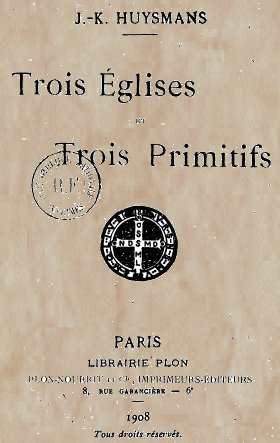
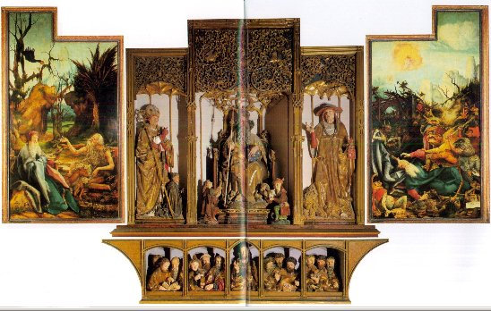
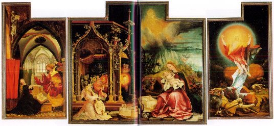
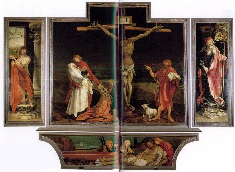
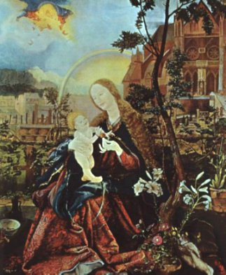
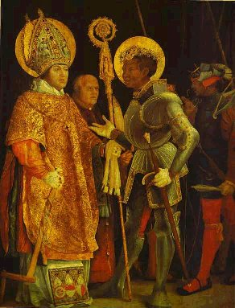
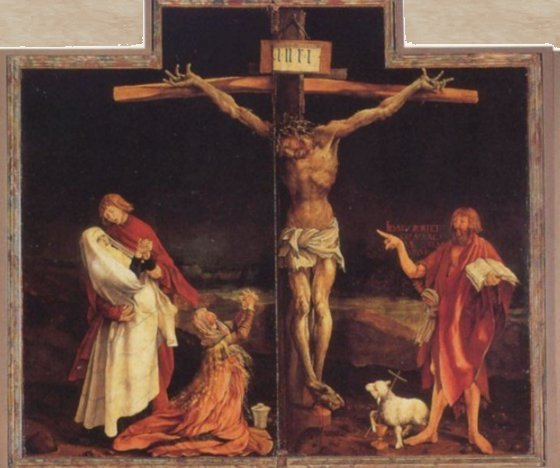
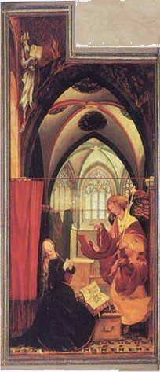
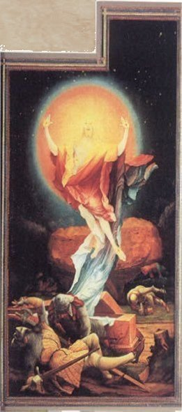
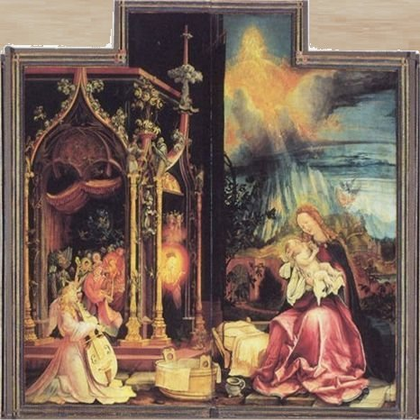
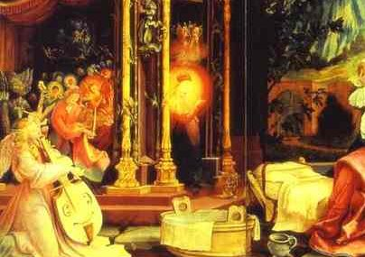
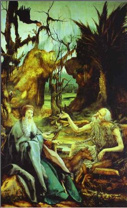
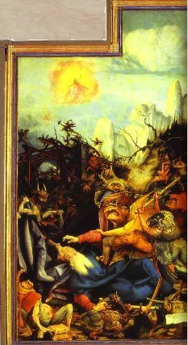
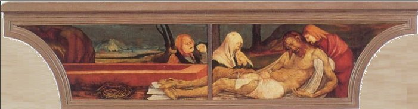
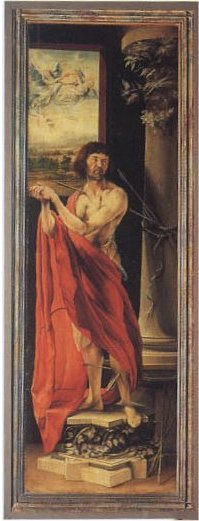
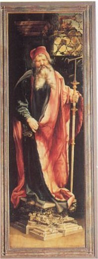
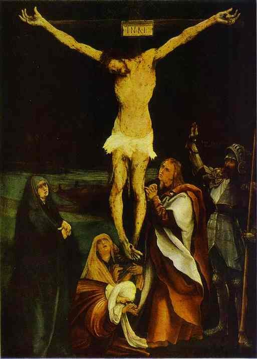
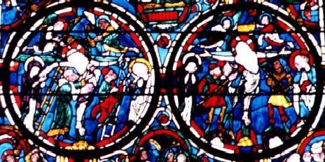
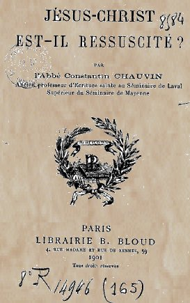
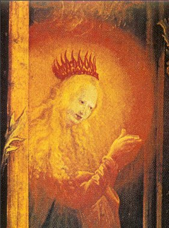
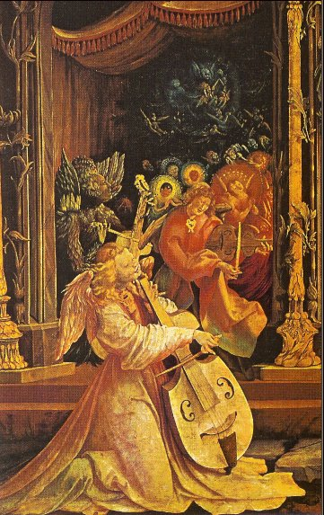
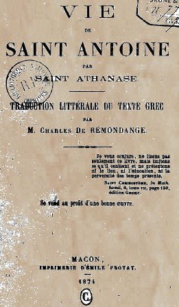
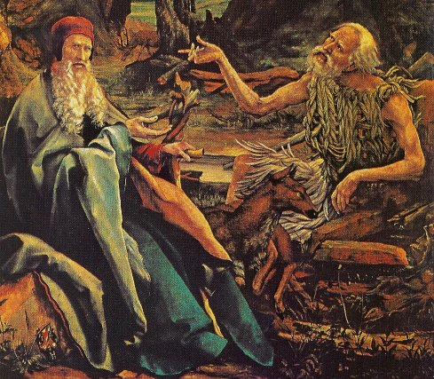
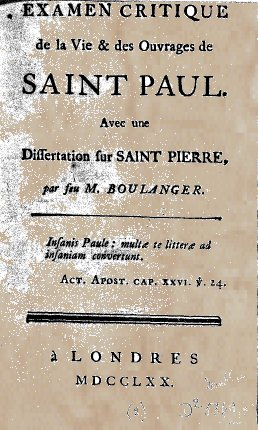
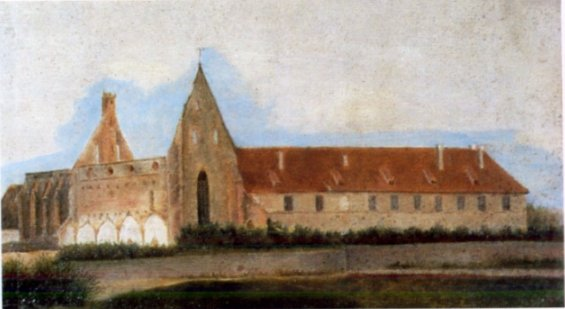
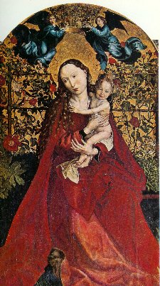
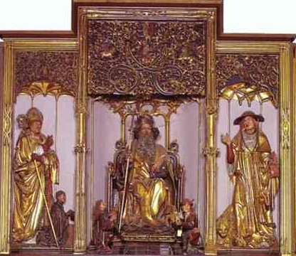
Noms cités
Fulcanelli · Paris · Hermes · Jean · Venus · Atalanta · Chevreul · Saturne · Jupiter · Jung · Valentin · Basile · Canseliet · Pernety